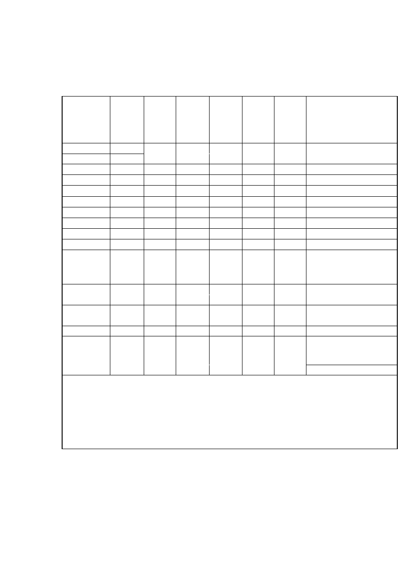

<!DOCTYPE html>
<html xmlns="http://www.w3.org/1999/xhtml" lang="" xml:lang="">
<head>
<title>./policy/Documents/iata-guidance-on-incident-and-crisis-management-planning-html.html</title>

<meta http-equiv="Content-Type" content="text/html; charset=UTF-8"/>
 <br/>
<style type="text/css">
<!--
	p {margin: 0; padding: 0;}	.ft10{font-size:16px;font-family:TimesNewRomanPSMT;color:#000000;}
-->
</style>
</head>
<body bgcolor="#A0A0A0" vlink="blue" link="blue">
<div id="page1-div" style="position:relative;width:892px;height:1263px;">

<p style="position:absolute;top:121px;left:446px;white-space:nowrap" class="ft10">&#160;</p>
</div>
</body>
</html>
<!DOCTYPE html>
<html xmlns="http://www.w3.org/1999/xhtml" lang="" xml:lang="">
<head>
<title>./policy/Documents/iata-guidance-on-incident-and-crisis-management-planning-html.html</title>

<meta http-equiv="Content-Type" content="text/html; charset=UTF-8"/>
 <br/>
<style type="text/css">
<!--
	p {margin: 0; padding: 0;}-->
</style>
</head>
<body bgcolor="#A0A0A0" vlink="blue" link="blue">
<div id="page2-div" style="position:relative;width:892px;height:1263px;">

</div>
</body>
</html>
<!DOCTYPE html>
<html xmlns="http://www.w3.org/1999/xhtml" lang="" xml:lang="">
<head>
<title>./policy/Documents/iata-guidance-on-incident-and-crisis-management-planning-html.html</title>

<meta http-equiv="Content-Type" content="text/html; charset=UTF-8"/>
 <br/>
<style type="text/css">
<!--
	p {margin: 0; padding: 0;}	.ft30{font-size:18px;font-family:GAEBJK+AkzidenzGroteskBQ-Cnd;color:#000000;}
	.ft31{font-size:31px;font-family:GAEBJL+AkzidenzGroteskBQ-LigCnd;color:#000000;}
	.ft32{font-size:22px;font-family:GAEBJL+AkzidenzGroteskBQ-LigCnd;color:#000000;}
	.ft33{font-size:13px;font-family:GAEBJL+AkzidenzGroteskBQ-LigCnd;color:#000000;}
	.ft34{font-size:13px;line-height:17px;font-family:GAEBJL+AkzidenzGroteskBQ-LigCnd;color:#000000;}
-->
</style>
</head>
<body bgcolor="#A0A0A0" vlink="blue" link="blue">
<div id="page3-div" style="position:relative;width:892px;height:1263px;">

<p style="position:absolute;top:179px;left:507px;white-space:nowrap" class="ft30">&#160;</p>
<p style="position:absolute;top:208px;left:446px;white-space:nowrap" class="ft30">&#160;</p>
<p style="position:absolute;top:243px;left:446px;white-space:nowrap" class="ft30">&#160;</p>
<p style="position:absolute;top:277px;left:446px;white-space:nowrap" class="ft30">&#160;</p>
<p style="position:absolute;top:311px;left:446px;white-space:nowrap" class="ft30">&#160;</p>
<p style="position:absolute;top:345px;left:446px;white-space:nowrap" class="ft30">&#160;</p>
<p style="position:absolute;top:379px;left:446px;white-space:nowrap" class="ft30">&#160;</p>
<p style="position:absolute;top:413px;left:446px;white-space:nowrap" class="ft30">&#160;</p>
<p style="position:absolute;top:447px;left:446px;white-space:nowrap" class="ft30">&#160;</p>
<p style="position:absolute;top:481px;left:446px;white-space:nowrap" class="ft30">&#160;</p>
<p style="position:absolute;top:515px;left:446px;white-space:nowrap" class="ft30">&#160;</p>
<p style="position:absolute;top:549px;left:446px;white-space:nowrap" class="ft30">&#160;</p>
<p style="position:absolute;top:584px;left:446px;white-space:nowrap" class="ft30">&#160;</p>
<p style="position:absolute;top:611px;left:157px;white-space:nowrap" class="ft31">Guidance on Incident and Crisis Management Planning (ICMP)&#160;</p>
<p style="position:absolute;top:651px;left:230px;white-space:nowrap" class="ft31">In the Event of a Shortfall in&#160;Aviation Fuel at an Airport&#160;</p>
<p style="position:absolute;top:699px;left:446px;white-space:nowrap" class="ft31">&#160;</p>
<p style="position:absolute;top:746px;left:692px;white-space:nowrap" class="ft32">Version 1&#160;</p>
<p style="position:absolute;top:783px;left:644px;white-space:nowrap" class="ft32">20 August 2006&#160;</p>
<p style="position:absolute;top:821px;left:446px;white-space:nowrap" class="ft32">&#160;</p>
<p style="position:absolute;top:859px;left:446px;white-space:nowrap" class="ft32">&#160;</p>
<p style="position:absolute;top:897px;left:446px;white-space:nowrap" class="ft32">&#160;</p>
<p style="position:absolute;top:934px;left:446px;white-space:nowrap" class="ft32">&#160;</p>
<p style="position:absolute;top:972px;left:446px;white-space:nowrap" class="ft32">&#160;</p>
<p style="position:absolute;top:1010px;left:446px;white-space:nowrap" class="ft32">&#160;</p>
<p style="position:absolute;top:1047px;left:446px;white-space:nowrap" class="ft32">&#160;</p>
<p style="position:absolute;top:1074px;left:135px;white-space:nowrap" class="ft34">International Air Transport Association&#160;<br/>Montreal - Geneva&#160;</p>
</div>
</body>
</html>
<!DOCTYPE html>
<html xmlns="http://www.w3.org/1999/xhtml" lang="" xml:lang="">
<head>
<title>./policy/Documents/iata-guidance-on-incident-and-crisis-management-planning-html.html</title>

<meta http-equiv="Content-Type" content="text/html; charset=UTF-8"/>
 <br/>
<style type="text/css">
<!--
	p {margin: 0; padding: 0;}	.ft40{font-size:18px;font-family:GAEBJK+AkzidenzGroteskBQ-Cnd;color:#000000;}
	.ft41{font-size:16px;font-family:GAEBLK+AkzidenzGroteskBQ-Light;color:#000000;}
	.ft42{font-size:16px;font-family:GAEBMF+AkzidenzGroteskBQ-LightIt;color:#000000;}
	.ft43{font-size:13px;font-family:GAEBJL+AkzidenzGroteskBQ-LigCnd;color:#000000;}
	.ft44{font-size:16px;line-height:21px;font-family:GAEBLK+AkzidenzGroteskBQ-Light;color:#000000;}
-->
</style>
</head>
<body bgcolor="#A0A0A0" vlink="blue" link="blue">
<div id="page4-div" style="position:relative;width:892px;height:1263px;">

<p style="position:absolute;top:122px;left:446px;white-space:nowrap" class="ft40">&#160;</p>
<p style="position:absolute;top:156px;left:446px;white-space:nowrap" class="ft40">&#160;</p>
<p style="position:absolute;top:190px;left:446px;white-space:nowrap" class="ft40">&#160;</p>
<p style="position:absolute;top:224px;left:446px;white-space:nowrap" class="ft40">&#160;</p>
<p style="position:absolute;top:258px;left:446px;white-space:nowrap" class="ft40">&#160;</p>
<p style="position:absolute;top:293px;left:446px;white-space:nowrap" class="ft40">&#160;</p>
<p style="position:absolute;top:327px;left:446px;white-space:nowrap" class="ft40">&#160;</p>
<p style="position:absolute;top:361px;left:446px;white-space:nowrap" class="ft40">&#160;</p>
<p style="position:absolute;top:395px;left:446px;white-space:nowrap" class="ft40">&#160;</p>
<p style="position:absolute;top:429px;left:446px;white-space:nowrap" class="ft40">&#160;</p>
<p style="position:absolute;top:463px;left:446px;white-space:nowrap" class="ft40">&#160;</p>
<p style="position:absolute;top:497px;left:446px;white-space:nowrap" class="ft40">&#160;</p>
<p style="position:absolute;top:531px;left:446px;white-space:nowrap" class="ft40">&#160;</p>
<p style="position:absolute;top:566px;left:446px;white-space:nowrap" class="ft40">&#160;</p>
<p style="position:absolute;top:600px;left:446px;white-space:nowrap" class="ft40">&#160;</p>
<p style="position:absolute;top:634px;left:446px;white-space:nowrap" class="ft40">&#160;</p>
<p style="position:absolute;top:668px;left:446px;white-space:nowrap" class="ft40">&#160;</p>
<p style="position:absolute;top:702px;left:446px;white-space:nowrap" class="ft40">&#160;</p>
<p style="position:absolute;top:736px;left:446px;white-space:nowrap" class="ft40">&#160;</p>
<p style="position:absolute;top:770px;left:446px;white-space:nowrap" class="ft40">&#160;</p>
<p style="position:absolute;top:797px;left:135px;white-space:nowrap" class="ft41">&#160;</p>
<p style="position:absolute;top:818px;left:135px;white-space:nowrap" class="ft42"><i>DISCLAIMER.</i></p>
<p style="position:absolute;top:818px;left:246px;white-space:nowrap" class="ft41">&#160;The information contained in this publication is intended only as a&#160;</p>
<p style="position:absolute;top:840px;left:135px;white-space:nowrap" class="ft44">guide. No subscriber or&#160;other reader should act&#160;on the basis of any such&#160;<br/>information without referring to applicable laws and regulations and/or without&#160;<br/>taking appropriate professional advice.&#160;Although every effort has been made to&#160;<br/>ensure its accuracy, the International Air Transport Association shall not be held&#160;<br/>responsible&#160;for loss or damage caused by errors, omissions, misprints or&#160;<br/>misinterpretation of the contents hereof. Furthermore, the International Air&#160;<br/>Transport Association&#160;expressly disclaims all and any liability to any person,&#160;<br/>whether a purchaser of this publication&#160;or not, in respect of anything done or&#160;<br/>omitted, and the consequences of anything&#160;done or omitted, by any such person in&#160;<br/>reliance on the contents of this publication.&#160;</p>
<p style="position:absolute;top:1065px;left:446px;white-space:nowrap" class="ft40">&#160;</p>
<p style="position:absolute;top:1195px;left:135px;white-space:nowrap" class="ft43">IATA Guidance on Incident and&#160;Crisis&#160;Management Planning – Fuel Shortfall – Version 1&#160;</p>
</div>
</body>
</html>
<!DOCTYPE html>
<html xmlns="http://www.w3.org/1999/xhtml" lang="" xml:lang="">
<head>
<title>./policy/Documents/iata-guidance-on-incident-and-crisis-management-planning-html.html</title>

<meta http-equiv="Content-Type" content="text/html; charset=UTF-8"/>
 <br/>
<style type="text/css">
<!--
	p {margin: 0; padding: 0;}	.ft50{font-size:18px;font-family:GAEBJK+AkzidenzGroteskBQ-Cnd;color:#000000;}
	.ft51{font-size:16px;font-family:TimesNewRomanPS;color:#000000;}
	.ft52{font-size:25px;font-family:GAEBNM+AkzidenzGroteskBQ-MdCnd;color:#000000;}
	.ft53{font-size:16px;font-family:GAEBJK+AkzidenzGroteskBQ-Cnd;color:#000000;}
	.ft54{font-size:25px;font-family:ArialMT;color:#000000;}
	.ft55{font-size:16px;font-family:ArialMT;color:#000000;}
	.ft56{font-size:16px;font-family:Arial;color:#000000;}
	.ft57{font-size:16px;font-family:GAEBNM+AkzidenzGroteskBQ-MdCnd;color:#000000;}
	.ft58{font-size:16px;font-family:TimesNewRomanPSMT;color:#000000;}
	.ft59{font-size:13px;font-family:GAEBJL+AkzidenzGroteskBQ-LigCnd;color:#000000;}
-->
</style>
</head>
<body bgcolor="#A0A0A0" vlink="blue" link="blue">
<div id="page5-div" style="position:relative;width:892px;height:1263px;">

<p style="position:absolute;top:122px;left:446px;white-space:nowrap" class="ft50">&#160;</p>
<p style="position:absolute;top:156px;left:378px;white-space:nowrap" class="ft50">TABLE OF CONTENT&#160;</p>
<p style="position:absolute;top:181px;left:135px;white-space:nowrap" class="ft51"><b>&#160;</b></p>
<p style="position:absolute;top:225px;left:135px;white-space:nowrap" class="ft52">Introduction&#160;&#160;</p>
<p style="position:absolute;top:231px;left:680px;white-space:nowrap" class="ft53">i</p>
<p style="position:absolute;top:225px;left:683px;white-space:nowrap" class="ft52">&#160;</p>
<p style="position:absolute;top:225px;left:729px;white-space:nowrap" class="ft52">&#160;</p>
<p style="position:absolute;top:266px;left:135px;white-space:nowrap" class="ft52">1.</p>
<p style="position:absolute;top:266px;left:148px;white-space:nowrap" class="ft54">&#160;</p>
<p style="position:absolute;top:266px;left:162px;white-space:nowrap" class="ft52">Incident and Crisis Management Planning&#160;</p>
<p style="position:absolute;top:266px;left:634px;white-space:nowrap" class="ft52">&#160;</p>
<p style="position:absolute;top:273px;left:675px;white-space:nowrap" class="ft53">01&#160;</p>
<p style="position:absolute;top:266px;left:692px;white-space:nowrap" class="ft52">&#160;</p>
<p style="position:absolute;top:295px;left:135px;white-space:nowrap" class="ft55">&#160;</p>
<p style="position:absolute;top:295px;left:675px;white-space:nowrap" class="ft55">&#160;</p>
<p style="position:absolute;top:325px;left:162px;white-space:nowrap" class="ft53">1.1.</p>
<p style="position:absolute;top:325px;left:183px;white-space:nowrap" class="ft56"><b>&#160;</b></p>
<p style="position:absolute;top:325px;left:194px;white-space:nowrap" class="ft53">Lead Planning Authority&#160;</p>
<p style="position:absolute;top:325px;left:486px;white-space:nowrap" class="ft53">&#160;</p>
<p style="position:absolute;top:325px;left:675px;white-space:nowrap" class="ft53">01&#160;</p>
<p style="position:absolute;top:356px;left:162px;white-space:nowrap" class="ft53">1.2.</p>
<p style="position:absolute;top:356px;left:182px;white-space:nowrap" class="ft55">&#160;</p>
<p style="position:absolute;top:356px;left:194px;white-space:nowrap" class="ft53">Identify Key Stakeholders&#160;</p>
<p style="position:absolute;top:356px;left:656px;white-space:nowrap" class="ft53">&#160;&#160;01&#160;</p>
<p style="position:absolute;top:386px;left:162px;white-space:nowrap" class="ft53">1.3.</p>
<p style="position:absolute;top:386px;left:182px;white-space:nowrap" class="ft55">&#160;</p>
<p style="position:absolute;top:386px;left:194px;white-space:nowrap" class="ft53">Identify Fuel Crisis Management Team&#160;</p>
<p style="position:absolute;top:386px;left:656px;white-space:nowrap" class="ft53">&#160;&#160;02&#160;</p>
<p style="position:absolute;top:417px;left:162px;white-space:nowrap" class="ft53">1.4.</p>
<p style="position:absolute;top:417px;left:182px;white-space:nowrap" class="ft55">&#160;</p>
<p style="position:absolute;top:417px;left:194px;white-space:nowrap" class="ft53">Identify Crisis Manager &amp; ToR&#160;</p>
<p style="position:absolute;top:417px;left:656px;white-space:nowrap" class="ft53">&#160;&#160;03&#160;</p>
<p style="position:absolute;top:447px;left:162px;white-space:nowrap" class="ft53">1.5.</p>
<p style="position:absolute;top:447px;left:182px;white-space:nowrap" class="ft55">&#160;</p>
<p style="position:absolute;top:447px;left:194px;white-space:nowrap" class="ft53">Identify Crisis Control Team &amp; ToR&#160;</p>
<p style="position:absolute;top:447px;left:656px;white-space:nowrap" class="ft53">&#160;&#160;04&#160;</p>
<p style="position:absolute;top:478px;left:162px;white-space:nowrap" class="ft53">1.6.</p>
<p style="position:absolute;top:478px;left:182px;white-space:nowrap" class="ft55">&#160;</p>
<p style="position:absolute;top:478px;left:194px;white-space:nowrap" class="ft53">Develop Communications Plan&#160;</p>
<p style="position:absolute;top:478px;left:656px;white-space:nowrap" class="ft53">&#160;&#160;05&#160;</p>
<p style="position:absolute;top:508px;left:162px;white-space:nowrap" class="ft53">1.7.</p>
<p style="position:absolute;top:508px;left:182px;white-space:nowrap" class="ft55">&#160;</p>
<p style="position:absolute;top:508px;left:194px;white-space:nowrap" class="ft53">Identify Risk to Fuel Availability&#160;</p>
<p style="position:absolute;top:508px;left:656px;white-space:nowrap" class="ft53">&#160;&#160;05&#160;</p>
<p style="position:absolute;top:539px;left:162px;white-space:nowrap" class="ft53">1.8.</p>
<p style="position:absolute;top:539px;left:182px;white-space:nowrap" class="ft55">&#160;</p>
<p style="position:absolute;top:539px;left:194px;white-space:nowrap" class="ft53">Definitions, Triggers and&#160;Indicators&#160;</p>
<p style="position:absolute;top:539px;left:656px;white-space:nowrap" class="ft53">&#160;&#160;06&#160;</p>
<p style="position:absolute;top:569px;left:162px;white-space:nowrap" class="ft53">1.9.</p>
<p style="position:absolute;top:569px;left:182px;white-space:nowrap" class="ft55">&#160;</p>
<p style="position:absolute;top:569px;left:194px;white-space:nowrap" class="ft53">Essential Data and Information&#160;</p>
<p style="position:absolute;top:569px;left:656px;white-space:nowrap" class="ft53">&#160;&#160;06&#160;</p>
<p style="position:absolute;top:600px;left:162px;white-space:nowrap" class="ft53">1.10.</p>
<p style="position:absolute;top:600px;left:188px;white-space:nowrap" class="ft55">&#160;</p>
<p style="position:absolute;top:600px;left:194px;white-space:nowrap" class="ft53">Develop Stock Management plans &amp; scenario &#160;</p>
<p style="position:absolute;top:600px;left:656px;white-space:nowrap" class="ft53">&#160;&#160;07&#160;</p>
<p style="position:absolute;top:630px;left:162px;white-space:nowrap" class="ft53">1.11.</p>
<p style="position:absolute;top:630px;left:188px;white-space:nowrap" class="ft55">&#160;</p>
<p style="position:absolute;top:630px;left:194px;white-space:nowrap" class="ft53">Determine Entry and Exit points&#160;</p>
<p style="position:absolute;top:630px;left:656px;white-space:nowrap" class="ft53">&#160;&#160;08&#160;</p>
<p style="position:absolute;top:661px;left:162px;white-space:nowrap" class="ft53">1.12.</p>
<p style="position:absolute;top:661px;left:188px;white-space:nowrap" class="ft55">&#160;</p>
<p style="position:absolute;top:661px;left:194px;white-space:nowrap" class="ft53">Develop Allocation Policy and Tables&#160;</p>
<p style="position:absolute;top:661px;left:656px;white-space:nowrap" class="ft53">&#160;&#160;09&#160;</p>
<p style="position:absolute;top:691px;left:162px;white-space:nowrap" class="ft53">1.13.</p>
<p style="position:absolute;top:691px;left:188px;white-space:nowrap" class="ft55">&#160;</p>
<p style="position:absolute;top:691px;left:194px;white-space:nowrap" class="ft53">Define process to deal with exceptional cases&#160;</p>
<p style="position:absolute;top:691px;left:656px;white-space:nowrap" class="ft53">&#160;&#160;11&#160;</p>
<p style="position:absolute;top:722px;left:162px;white-space:nowrap" class="ft53">1.14.</p>
<p style="position:absolute;top:722px;left:188px;white-space:nowrap" class="ft55">&#160;</p>
<p style="position:absolute;top:722px;left:194px;white-space:nowrap" class="ft53">Define Process to Handle Conflict&#160;</p>
<p style="position:absolute;top:722px;left:656px;white-space:nowrap" class="ft53">&#160;&#160;12&#160;</p>
<p style="position:absolute;top:743px;left:135px;white-space:nowrap" class="ft55">&#160;</p>
<p style="position:absolute;top:743px;left:675px;white-space:nowrap" class="ft55">&#160;</p>
<p style="position:absolute;top:776px;left:135px;white-space:nowrap" class="ft52">2. Training, Training Material and Testing&#160;</p>
<p style="position:absolute;top:783px;left:675px;white-space:nowrap" class="ft53">13&#160;</p>
<p style="position:absolute;top:818px;left:135px;white-space:nowrap" class="ft52">3. Crisis Management&#160;</p>
<p style="position:absolute;top:824px;left:675px;white-space:nowrap" class="ft53">13</p>
<p style="position:absolute;top:818px;left:689px;white-space:nowrap" class="ft52">&#160;</p>
<p style="position:absolute;top:859px;left:135px;white-space:nowrap" class="ft52">4. Recovery&#160;</p>
<p style="position:absolute;top:865px;left:675px;white-space:nowrap" class="ft53">17</p>
<p style="position:absolute;top:859px;left:689px;white-space:nowrap" class="ft52">&#160;</p>
<p style="position:absolute;top:900px;left:135px;white-space:nowrap" class="ft52">5. Review and Continual Improvement&#160;</p>
<p style="position:absolute;top:907px;left:675px;white-space:nowrap" class="ft53">17</p>
<p style="position:absolute;top:900px;left:689px;white-space:nowrap" class="ft52">&#160;</p>
<p style="position:absolute;top:930px;left:135px;white-space:nowrap" class="ft51"><b>&#160;</b></p>
<p style="position:absolute;top:930px;left:215px;white-space:nowrap" class="ft51"><b>&#160;</b></p>
<p style="position:absolute;top:951px;left:135px;white-space:nowrap" class="ft57">Annex 1 -&#160;An example of an Allocation Table</p>
<p style="position:absolute;top:952px;left:349px;white-space:nowrap" class="ft58">&#160;</p>
<p style="position:absolute;top:952px;left:656px;white-space:nowrap" class="ft58">&#160;</p>
<p style="position:absolute;top:951px;left:675px;white-space:nowrap" class="ft53">18</p>
<p style="position:absolute;top:951px;left:689px;white-space:nowrap" class="ft57">&#160;</p>
<p style="position:absolute;top:973px;left:135px;white-space:nowrap" class="ft57">Annex 2 -&#160;An example of a Fuel Stock Level Report from the Fuel Farm Operator to&#160;the Fuel Crisis Manager</p>
<p style="position:absolute;top:974px;left:644px;white-space:nowrap" class="ft58">&#160;&#160;&#160;</p>
<p style="position:absolute;top:973px;left:675px;white-space:nowrap" class="ft53">21</p>
<p style="position:absolute;top:973px;left:689px;white-space:nowrap" class="ft57">&#160;</p>
<p style="position:absolute;top:996px;left:135px;white-space:nowrap" class="ft57">Annex 3&#160;-&#160;An example of a Situation Update from the Crisis Manager to the Airlines</p>
<p style="position:absolute;top:996px;left:532px;white-space:nowrap" class="ft58">&#160;</p>
<p style="position:absolute;top:996px;left:656px;white-space:nowrap" class="ft58">&#160;</p>
<p style="position:absolute;top:996px;left:675px;white-space:nowrap" class="ft53">22&#160;</p>
<p style="position:absolute;top:1017px;left:135px;white-space:nowrap" class="ft53">&#160;</p>
<p style="position:absolute;top:1195px;left:135px;white-space:nowrap" class="ft59">IATA Guidance on Incident and&#160;Crisis&#160;Management Planning – Fuel Shortfall – Version 1&#160;</p>
</div>
</body>
</html>
<!DOCTYPE html>
<html xmlns="http://www.w3.org/1999/xhtml" lang="" xml:lang="">
<head>
<title>./policy/Documents/iata-guidance-on-incident-and-crisis-management-planning-html.html</title>

<meta http-equiv="Content-Type" content="text/html; charset=UTF-8"/>
 <br/>
<style type="text/css">
<!--
	p {margin: 0; padding: 0;}	.ft60{font-size:16px;font-family:GAEBJK+AkzidenzGroteskBQ-Cnd;color:#000000;}
	.ft61{font-size:13px;font-family:GAEBJL+AkzidenzGroteskBQ-LigCnd;color:#000000;}
	.ft62{font-size:16px;line-height:21px;font-family:GAEBJK+AkzidenzGroteskBQ-Cnd;color:#000000;}
-->
</style>
</head>
<body bgcolor="#A0A0A0" vlink="blue" link="blue">
<div id="page6-div" style="position:relative;width:892px;height:1263px;">

<p style="position:absolute;top:112px;left:135px;white-space:nowrap" class="ft62">&#160;<br/>&#160;<br/>&#160;</p>
<p style="position:absolute;top:1195px;left:135px;white-space:nowrap" class="ft61">IATA Guidance on Incident and&#160;Crisis&#160;Management Planning – Fuel Shortfall – Version 1&#160;</p>
</div>
</body>
</html>
<!DOCTYPE html>
<html xmlns="http://www.w3.org/1999/xhtml" lang="" xml:lang="">
<head>
<title>./policy/Documents/iata-guidance-on-incident-and-crisis-management-planning-html.html</title>

<meta http-equiv="Content-Type" content="text/html; charset=UTF-8"/>
 <br/>
<style type="text/css">
<!--
	p {margin: 0; padding: 0;}	.ft70{font-size:25px;font-family:GAEBJL+AkzidenzGroteskBQ-LigCnd;color:#000000;}
	.ft71{font-size:16px;font-family:TimesNewRomanPS;color:#000000;}
	.ft72{font-size:16px;font-family:TimesNewRomanPSMT;color:#000000;}
	.ft73{font-size:25px;font-family:GAEBNM+AkzidenzGroteskBQ-MdCnd;color:#000000;}
	.ft74{font-size:16px;font-family:Arial;color:#000000;}
	.ft75{font-size:16px;font-family:GAEBLK+AkzidenzGroteskBQ-Light;color:#000000;}
	.ft76{font-size:13px;font-family:GAEBJL+AkzidenzGroteskBQ-LigCnd;color:#000000;}
	.ft77{font-size:13px;font-family:ArialMT;color:#000000;}
	.ft78{font-size:16px;line-height:21px;font-family:GAEBLK+AkzidenzGroteskBQ-Light;color:#000000;}
-->
</style>
</head>
<body bgcolor="#A0A0A0" vlink="blue" link="blue">
<div id="page7-div" style="position:relative;width:892px;height:1263px;">

<p style="position:absolute;top:114px;left:180px;white-space:nowrap" class="ft70">IATA Guidance on Incident and Crisis Management Planning (ICMP)&#160;</p>
<p style="position:absolute;top:147px;left:230px;white-space:nowrap" class="ft70">In the Event of a Shortfall in Aviation Fuel at an Airport&#160;</p>
<p style="position:absolute;top:177px;left:135px;white-space:nowrap" class="ft71"><b>&#160;</b></p>
<p style="position:absolute;top:198px;left:135px;white-space:nowrap" class="ft72">&#160;</p>
<p style="position:absolute;top:221px;left:135px;white-space:nowrap" class="ft73">Introduction&#160;</p>
<p style="position:absolute;top:250px;left:135px;white-space:nowrap" class="ft74"><b>&#160;</b></p>
<p style="position:absolute;top:271px;left:135px;white-space:nowrap" class="ft78">In the past several years the aviation industry has seen a number&#160;of disruptions to&#160;<br/>airport fuel supplies with significant consequences in terms of inconvenience to&#160;<br/>passengers, shippers and airlines; &#160;airlines&#160;have also had to face heavy financial&#160;<br/>losses as a&#160;result of these disruptions.&#160;<br/>&#160;<br/>While the parties affected have in general managed these situations on the basis&#160;<br/>of usual practice at the time and location&#160;of the incident, the recent experience at&#160;<br/>London Heathrow Airport led to the IATA Commercial Fuel Working Group&#160;<br/>decision to put in place a globally applicable&#160;set of guidelines and a process that&#160;<br/>would be useful in managing a supply&#160;shortfall at any airport location.&#160;<br/>&#160;<br/>This document provides recommendations&#160;and guidance to Civil Aviation&#160;<br/>Administrations, Airports, Airlines, Fuel Suppliers, and Intoplane Service Providers&#160;<br/>to collectively ensure that the impact of a fuel supply shortfall is minimised, to&#160;<br/>manage an incident without allowing it to&#160;develop into a crisis and to manage the&#160;<br/>crisis if it does occur.&#160;<br/>&#160;<br/>While most of the recommendations and guidance provided herein are generic&#160;<br/>some would need to be tailored to suit the specific requirements of the airport and&#160;<br/>the situation.&#160;<br/>&#160;<br/>While it is recognised that some Airports and Airlines may already have fully&#160;<br/>developed crisis management plans IATA is also&#160;aware that many others do not. &#160;If&#160;<br/>an Airport or the base carrier at the location has such crisis plan the current&#160;<br/>guidance material should enable such entity to develop a fuel-specific crisis&#160;<br/>management plan that could be integrated into the main crisis management plan as&#160;<br/>a subset. &#160;At locations where such&#160;plan&#160;does not exist, the&#160;plan developed to deal&#160;<br/>with a fuel-related crisis could either be considered a&#160;standalone plan or could&#160;<br/>trigger the development of a wider plan taking account of all eventualities that may&#160;<br/>adversely impact air transport.&#160;<br/>&#160;<br/>IATA has approached incident and crisis management related to aviation fuel as a&#160;<br/>process that commences with a planning phase and includes training and testing&#160;<br/>and finally management and recovery.&#160;<br/>&#160;</p>
<p style="position:absolute;top:1195px;left:135px;white-space:nowrap" class="ft76">IATA Guidance on Incident and&#160;Crisis&#160;Management Planning – Fuel Shortfall – Version 1&#160;</p>
<p style="position:absolute;top:1195px;left:755px;white-space:nowrap" class="ft77">i</p>
</div>
</body>
</html>
<!DOCTYPE html>
<html xmlns="http://www.w3.org/1999/xhtml" lang="" xml:lang="">
<head>
<title>./policy/Documents/iata-guidance-on-incident-and-crisis-management-planning-html.html</title>

<meta http-equiv="Content-Type" content="text/html; charset=UTF-8"/>
 <br/>
<style type="text/css">
<!--
	p {margin: 0; padding: 0;}	.ft80{font-size:25px;font-family:GAEBNM+AkzidenzGroteskBQ-MdCnd;color:#000000;}
	.ft81{font-size:25px;font-family:Arial;color:#000000;}
	.ft82{font-size:16px;font-family:TimesNewRomanPSMT;color:#000000;}
	.ft83{font-size:16px;font-family:GAEBLK+AkzidenzGroteskBQ-Light;color:#000000;}
	.ft84{font-size:22px;font-family:GAEBNM+AkzidenzGroteskBQ-MdCnd;color:#000000;}
	.ft85{font-size:22px;font-family:GAEBJL+AkzidenzGroteskBQ-LigCnd;color:#000000;}
	.ft86{font-size:22px;font-family:Arial;color:#000000;}
	.ft87{font-size:16px;font-family:GAECDB+SymbolMT;color:#000000;}
	.ft88{font-size:16px;font-family:ArialMT;color:#000000;}
	.ft89{font-size:13px;font-family:GAEBJL+AkzidenzGroteskBQ-LigCnd;color:#000000;}
	.ft810{font-size:13px;font-family:GAEBLK+AkzidenzGroteskBQ-Light;color:#000000;}
	.ft811{font-size:16px;line-height:21px;font-family:GAEBLK+AkzidenzGroteskBQ-Light;color:#000000;}
-->
</style>
</head>
<body bgcolor="#A0A0A0" vlink="blue" link="blue">
<div id="page8-div" style="position:relative;width:892px;height:1263px;">

<p style="position:absolute;top:115px;left:135px;white-space:nowrap" class="ft80">1.</p>
<p style="position:absolute;top:115px;left:150px;white-space:nowrap" class="ft81"><b>&#160;</b></p>
<p style="position:absolute;top:115px;left:162px;white-space:nowrap" class="ft80">Incident and Crisis Management Planning&#160;</p>
<p style="position:absolute;top:145px;left:135px;white-space:nowrap" class="ft82">&#160;</p>
<p style="position:absolute;top:165px;left:135px;white-space:nowrap" class="ft83">Objective:&#160;&#160;</p>
<p style="position:absolute;top:165px;left:220px;white-space:nowrap" class="ft811">Develop an Incident and Crisis Management capability (including&#160;<br/>contingency plans) to mitigate the impact&#160;of a shortfall in jet fuel at an&#160;<br/>airport.&#160;</p>
<p style="position:absolute;top:230px;left:135px;white-space:nowrap" class="ft82">&#160;</p>
<p style="position:absolute;top:250px;left:135px;white-space:nowrap" class="ft811">In a crisis/emergency, a&#160;smooth working plan must go into action at once without&#160;<br/>the need for wide consultations and agreements that may cause delay and hence&#160;<br/>aggravate the situation. &#160;To be able to achieve this it is essential that pre-planning&#160;<br/>be undertaken and that all key stakeholders agree to the plan.&#160;<br/>&#160;</p>
<p style="position:absolute;top:360px;left:135px;white-space:nowrap" class="ft84">Key Elements&#160;</p>
<p style="position:absolute;top:387px;left:135px;white-space:nowrap" class="ft82">&#160;</p>
<p style="position:absolute;top:409px;left:135px;white-space:nowrap" class="ft85">1.1.</p>
<p style="position:absolute;top:409px;left:162px;white-space:nowrap" class="ft86"><b>&#160;</b></p>
<p style="position:absolute;top:409px;left:194px;white-space:nowrap" class="ft85">Lead Planning Authority&#160;</p>
<p style="position:absolute;top:436px;left:135px;white-space:nowrap" class="ft82">&#160;</p>
<p style="position:absolute;top:457px;left:135px;white-space:nowrap" class="ft811">A Lead Planning Authority needs to be identified and take responsibility to sponsor&#160;<br/>development of incident and crisis management&#160;planning. &#160;The key&#160;role of the Lead&#160;<br/>Planning Authority is to frame the scope and scale of the planning process and&#160;<br/>lead the initial stages of plan development. Ideally, the Lead Planning Authority&#160;<br/>should be whichever entity is&#160;most responsible for managing an airport’s fuel&#160;<br/>supply. In IATA experience this could be the&#160;base carrier, the key fuel supplier(s),&#160;<br/>the airport or the national government.&#160;</p>
<p style="position:absolute;top:608px;left:189px;white-space:nowrap" class="ft82">&#160;</p>
<p style="position:absolute;top:630px;left:135px;white-space:nowrap" class="ft85">1.2.</p>
<p style="position:absolute;top:629px;left:162px;white-space:nowrap" class="ft86"><b>&#160;</b></p>
<p style="position:absolute;top:630px;left:194px;white-space:nowrap" class="ft85">Identify key Stakeholders&#160;</p>
<p style="position:absolute;top:657px;left:135px;white-space:nowrap" class="ft82">&#160;</p>
<p style="position:absolute;top:678px;left:135px;white-space:nowrap" class="ft811">One of the initial tasks of the Lead Planning Authority is to identify and engage key&#160;<br/>stakeholders. The key stakeholders and&#160;stakeholder groups may vary based on&#160;<br/>location, the nature of the problem and length of&#160;disruption. &#160;However, the following&#160;<br/>must always be included when developing an&#160;Incident and Crisis Management Plan&#160;<br/>related to aviation fuel:&#160;<br/>&#160;</p>
<p style="position:absolute;top:803px;left:216px;white-space:nowrap" class="ft87">•</p>
<p style="position:absolute;top:808px;left:224px;white-space:nowrap" class="ft88">&#160;</p>
<p style="position:absolute;top:808px;left:243px;white-space:nowrap" class="ft83">Airlines operating at the airport (HQ fuel experts&#160;&amp; local staff )&#160;</p>
<p style="position:absolute;top:825px;left:216px;white-space:nowrap" class="ft87">•</p>
<p style="position:absolute;top:831px;left:224px;white-space:nowrap" class="ft88">&#160;</p>
<p style="position:absolute;top:831px;left:243px;white-space:nowrap" class="ft83">Airline Operators Committee (AOC)&#160;</p>
<p style="position:absolute;top:848px;left:216px;white-space:nowrap" class="ft87">•</p>
<p style="position:absolute;top:853px;left:224px;white-space:nowrap" class="ft88">&#160;</p>
<p style="position:absolute;top:853px;left:243px;white-space:nowrap" class="ft811">IATA – Commercial Fuel Services will either participate directly or&#160;<br/>delegate responsibility to&#160;one of its Member airlines.&#160;</p>
<p style="position:absolute;top:892px;left:216px;white-space:nowrap" class="ft87">•</p>
<p style="position:absolute;top:898px;left:224px;white-space:nowrap" class="ft88">&#160;</p>
<p style="position:absolute;top:898px;left:243px;white-space:nowrap" class="ft83">Fuel Suppliers at the location&#160;</p>
<p style="position:absolute;top:915px;left:216px;white-space:nowrap" class="ft87">•</p>
<p style="position:absolute;top:920px;left:224px;white-space:nowrap" class="ft88">&#160;</p>
<p style="position:absolute;top:920px;left:243px;white-space:nowrap" class="ft83">Fuel Farm and Hydrant Operators&#160;</p>
<p style="position:absolute;top:938px;left:216px;white-space:nowrap" class="ft87">•</p>
<p style="position:absolute;top:943px;left:224px;white-space:nowrap" class="ft88">&#160;</p>
<p style="position:absolute;top:943px;left:243px;white-space:nowrap" class="ft83">Intoplane Service Providers&#160;</p>
<p style="position:absolute;top:960px;left:216px;white-space:nowrap" class="ft87">•</p>
<p style="position:absolute;top:966px;left:224px;white-space:nowrap" class="ft88">&#160;</p>
<p style="position:absolute;top:966px;left:243px;white-space:nowrap" class="ft83">Airport Management&#160;</p>
<p style="position:absolute;top:987px;left:135px;white-space:nowrap" class="ft811">&#160;<br/>It would also be appropriate to keep the&#160;Director General of Civil Aviation and/or&#160;<br/>the Ministry in Charge of&#160;Civil Aviation at the specific location informed regarding&#160;<br/>the development of such plan and approvals obtained once the plan&#160;has been&#160;<br/>developed, if so required.&#160;<br/>&#160;<br/>&#160;</p>
<p style="position:absolute;top:1195px;left:135px;white-space:nowrap" class="ft89">IATA Guidance on Incident and&#160;Crisis&#160;Management Planning – Fuel Shortfall – Version 1&#160;</p>
<p style="position:absolute;top:1195px;left:749px;white-space:nowrap" class="ft810">1</p>
</div>
</body>
</html>
<!DOCTYPE html>
<html xmlns="http://www.w3.org/1999/xhtml" lang="" xml:lang="">
<head>
<title>./policy/Documents/iata-guidance-on-incident-and-crisis-management-planning-html.html</title>

<meta http-equiv="Content-Type" content="text/html; charset=UTF-8"/>
 <br/>
<style type="text/css">
<!--
	p {margin: 0; padding: 0;}	.ft90{font-size:22px;font-family:GAEBJL+AkzidenzGroteskBQ-LigCnd;color:#000000;}
	.ft91{font-size:22px;font-family:Arial;color:#000000;}
	.ft92{font-size:16px;font-family:GAEBLK+AkzidenzGroteskBQ-Light;color:#000000;}
	.ft93{font-size:16px;font-family:GAECDB+SymbolMT;color:#000000;}
	.ft94{font-size:16px;font-family:ArialMT;color:#000000;}
	.ft95{font-size:13px;font-family:GAEBLK+AkzidenzGroteskBQ-Light;color:#000000;}
	.ft96{font-size:4px;font-family:ArialMT;color:#000000;}
	.ft97{font-size:16px;font-family:TimesNewRomanPSMT;color:#000000;}
	.ft98{font-size:13px;font-family:GAEBJL+AkzidenzGroteskBQ-LigCnd;color:#000000;}
	.ft99{font-size:16px;line-height:21px;font-family:GAEBLK+AkzidenzGroteskBQ-Light;color:#000000;}
-->
</style>
</head>
<body bgcolor="#A0A0A0" vlink="blue" link="blue">
<div id="page9-div" style="position:relative;width:892px;height:1263px;">

<p style="position:absolute;top:114px;left:135px;white-space:nowrap" class="ft90">1.3.</p>
<p style="position:absolute;top:113px;left:162px;white-space:nowrap" class="ft91"><b>&#160;</b></p>
<p style="position:absolute;top:114px;left:194px;white-space:nowrap" class="ft90">Identify Fuel Crisis Management Team &#160;</p>
<p style="position:absolute;top:141px;left:135px;white-space:nowrap" class="ft99">&#160;<br/>Developing a plan with the participation of&#160;representatives of all stakeholders could&#160;<br/>prove to be a challenging task. &#160;However,&#160;the Fuel Crisis Management Team should&#160;<br/>include at least the following:&#160;<br/>&#160;</p>
<p style="position:absolute;top:244px;left:216px;white-space:nowrap" class="ft93">•</p>
<p style="position:absolute;top:250px;left:224px;white-space:nowrap" class="ft94">&#160;</p>
<p style="position:absolute;top:250px;left:243px;white-space:nowrap" class="ft92">A representative of the Airport&#160;</p>
<p style="position:absolute;top:267px;left:216px;white-space:nowrap" class="ft93">•</p>
<p style="position:absolute;top:272px;left:224px;white-space:nowrap" class="ft94">&#160;</p>
<p style="position:absolute;top:272px;left:243px;white-space:nowrap" class="ft92">A representative of the Fuel Suppliers&#160;</p>
<p style="position:absolute;top:290px;left:216px;white-space:nowrap" class="ft93">•</p>
<p style="position:absolute;top:295px;left:224px;white-space:nowrap" class="ft94">&#160;</p>
<p style="position:absolute;top:295px;left:243px;white-space:nowrap" class="ft92">A representative of the Fuel Farm and Hydrant System&#160;</p>
<p style="position:absolute;top:312px;left:216px;white-space:nowrap" class="ft93">•</p>
<p style="position:absolute;top:318px;left:224px;white-space:nowrap" class="ft94">&#160;</p>
<p style="position:absolute;top:318px;left:243px;white-space:nowrap" class="ft92">A representative of the Intoplane Service Providers&#160;</p>
<p style="position:absolute;top:335px;left:216px;white-space:nowrap" class="ft93">•</p>
<p style="position:absolute;top:340px;left:224px;white-space:nowrap" class="ft94">&#160;</p>
<p style="position:absolute;top:340px;left:243px;white-space:nowrap" class="ft92">A representative of each of the main base carriers&#160;</p>
<p style="position:absolute;top:358px;left:216px;white-space:nowrap" class="ft93">•</p>
<p style="position:absolute;top:363px;left:224px;white-space:nowrap" class="ft94">&#160;</p>
<p style="position:absolute;top:363px;left:243px;white-space:nowrap" class="ft99">A representative of each&#160;visiting&#160;carrier categories (based on agreed&#160;<br/>criteria)&#160;</p>
<p style="position:absolute;top:402px;left:216px;white-space:nowrap" class="ft93">•</p>
<p style="position:absolute;top:407px;left:224px;white-space:nowrap" class="ft94">&#160;</p>
<p style="position:absolute;top:407px;left:243px;white-space:nowrap" class="ft92">A representative of the AOC&#160;</p>
<p style="position:absolute;top:425px;left:216px;white-space:nowrap" class="ft93">•</p>
<p style="position:absolute;top:430px;left:224px;white-space:nowrap" class="ft94">&#160;</p>
<p style="position:absolute;top:430px;left:243px;white-space:nowrap" class="ft99">IATA may be invited and will consider participation directly or&#160;<br/>delegate the responsibility to one of&#160;its Member airlines active at the&#160;<br/>location.&#160;</p>
<p style="position:absolute;top:495px;left:135px;white-space:nowrap" class="ft99">&#160;<br/>Although it is&#160;important to have a broad representation of stakeholders on the Fuel&#160;<br/>Crisis Management Team, this must be balanced against the importance of&#160;<br/>ensuring that the team is effective and efficient. &#160;Hence it is appropriate that the&#160;<br/>team should comprise no&#160;more than 10 members.&#160;<br/>&#160;<br/>&#160;</p>
<p style="position:absolute;top:637px;left:260px;white-space:nowrap" class="ft92">Crisis Management Organisation&#160;</p>
<p style="position:absolute;top:657px;left:227px;white-space:nowrap" class="ft95">&#160;</p>
<p style="position:absolute;top:685px;left:340px;white-space:nowrap" class="ft96">Fuel Crisis&#160;</p>
<p style="position:absolute;top:693px;left:310px;white-space:nowrap" class="ft96">Management&#160;Team</p>
<p style="position:absolute;top:747px;left:326px;white-space:nowrap" class="ft96">Crisis Manager</p>
<p style="position:absolute;top:804px;left:333px;white-space:nowrap" class="ft96">Crisis&#160;Leader</p>
<p style="position:absolute;top:862px;left:309px;white-space:nowrap" class="ft96">Crisis Control&#160;Team</p>
<p style="position:absolute;top:685px;left:340px;white-space:nowrap" class="ft96">Fuel Crisis&#160;</p>
<p style="position:absolute;top:693px;left:310px;white-space:nowrap" class="ft96">Management&#160;Team</p>
<p style="position:absolute;top:747px;left:326px;white-space:nowrap" class="ft96">Crisis Manager</p>
<p style="position:absolute;top:804px;left:333px;white-space:nowrap" class="ft96">Crisis&#160;Leader</p>
<p style="position:absolute;top:862px;left:309px;white-space:nowrap" class="ft96">Crisis Control&#160;Team</p>
<p style="position:absolute;top:871px;left:511px;white-space:nowrap" class="ft97">&#160;</p>
<p style="position:absolute;top:888px;left:227px;white-space:nowrap" class="ft97">&#160;</p>
<p style="position:absolute;top:645px;left:135px;white-space:nowrap" class="ft99">&#160;<br/>&#160;<br/>&#160;<br/>&#160;<br/>&#160;<br/>&#160;<br/>&#160;<br/>&#160;<br/>&#160;<br/>&#160;<br/>&#160;<br/>&#160;<br/>&#160;<br/>The ToR for the Fuel Crisis Management Team should include:&#160;<br/>&#160;</p>
<p style="position:absolute;top:964px;left:189px;white-space:nowrap" class="ft93">•</p>
<p style="position:absolute;top:969px;left:197px;white-space:nowrap" class="ft94">&#160;</p>
<p style="position:absolute;top:969px;left:216px;white-space:nowrap" class="ft92">Recommend the allocation policy for the airport&#160;</p>
<p style="position:absolute;top:987px;left:189px;white-space:nowrap" class="ft93">•</p>
<p style="position:absolute;top:992px;left:197px;white-space:nowrap" class="ft94">&#160;</p>
<p style="position:absolute;top:992px;left:216px;white-space:nowrap" class="ft92">Recommend what constitutes a crisis – the definition&#160;</p>
<p style="position:absolute;top:1010px;left:189px;white-space:nowrap" class="ft93">•</p>
<p style="position:absolute;top:1015px;left:197px;white-space:nowrap" class="ft94">&#160;</p>
<p style="position:absolute;top:1015px;left:216px;white-space:nowrap" class="ft92">Recommend the entry and exit points for the allocation plan&#160;</p>
<p style="position:absolute;top:1032px;left:189px;white-space:nowrap" class="ft93">•</p>
<p style="position:absolute;top:1037px;left:197px;white-space:nowrap" class="ft94">&#160;</p>
<p style="position:absolute;top:1038px;left:216px;white-space:nowrap" class="ft99">Recommend the optimum stock level for the airport based on supply&#160;<br/>level and risks taking account of the conflicting need for stability and&#160;<br/>equally significant demand for sufficient fuel to avoid&#160;<br/>techstops/cancellations.&#160;</p>
<p style="position:absolute;top:1124px;left:135px;white-space:nowrap" class="ft92">&#160;</p>
<p style="position:absolute;top:1195px;left:135px;white-space:nowrap" class="ft98">IATA Guidance on Incident and&#160;Crisis&#160;Management Planning – Fuel Shortfall – Version 1&#160;</p>
<p style="position:absolute;top:1195px;left:749px;white-space:nowrap" class="ft95">2</p>
</div>
</body>
</html>
<!DOCTYPE html>
<html xmlns="http://www.w3.org/1999/xhtml" lang="" xml:lang="">
<head>
<title>./policy/Documents/iata-guidance-on-incident-and-crisis-management-planning-html.html</title>

<meta http-equiv="Content-Type" content="text/html; charset=UTF-8"/>
 <br/>
<style type="text/css">
<!--
	p {margin: 0; padding: 0;}	.ft100{font-size:16px;font-family:GAEBLK+AkzidenzGroteskBQ-Light;color:#000000;}
	.ft101{font-size:22px;font-family:GAEBJL+AkzidenzGroteskBQ-LigCnd;color:#000000;}
	.ft102{font-size:22px;font-family:Arial;color:#000000;}
	.ft103{font-size:16px;font-family:TimesNewRomanPSMT;color:#000000;}
	.ft104{font-size:16px;font-family:GAECDB+SymbolMT;color:#000000;}
	.ft105{font-size:16px;font-family:ArialMT;color:#000000;}
	.ft106{font-size:13px;font-family:GAEBJL+AkzidenzGroteskBQ-LigCnd;color:#000000;}
	.ft107{font-size:13px;font-family:GAEBLK+AkzidenzGroteskBQ-Light;color:#000000;}
	.ft108{font-size:16px;line-height:21px;font-family:GAEBLK+AkzidenzGroteskBQ-Light;color:#000000;}
-->
</style>
</head>
<body bgcolor="#A0A0A0" vlink="blue" link="blue">
<div id="page10-div" style="position:relative;width:892px;height:1263px;">

<p style="position:absolute;top:112px;left:135px;white-space:nowrap" class="ft108">Approval of recommendations and plans&#160;developed by or for the Fuel Crisis&#160;<br/>Management Team&#160;MUST be ratified at meetings at which all airlines and other key&#160;<br/>stakeholders can be present. &#160;<br/>&#160;</p>
<p style="position:absolute;top:200px;left:135px;white-space:nowrap" class="ft101">1.4.</p>
<p style="position:absolute;top:199px;left:162px;white-space:nowrap" class="ft102"><b>&#160;</b></p>
<p style="position:absolute;top:200px;left:194px;white-space:nowrap" class="ft101">Identify Crisis Manager Including Roles and Responsibilities&#160;</p>
<p style="position:absolute;top:227px;left:135px;white-space:nowrap" class="ft103">&#160;</p>
<p style="position:absolute;top:248px;left:135px;white-space:nowrap" class="ft108">The Crisis Manager must be able to appreciate the fuel supply chain issues and&#160;<br/>dynamics, airline requirements and airport operational matters and must be&#160;<br/>selected jointly by the airlines, the airport and the fuel suppliers.&#160;<br/>&#160;<br/>While it is recognised that at most locations the Base Carrier(s) or the Fuel&#160;<br/>Suppliers would be able&#160;to provide a suitable&#160;candidate for the position, at airports&#160;<br/>that have a dedicated Fuel Services Manager such person may be considered for&#160;<br/>the position of the Crisis Manager.&#160;<br/>&#160;<br/>The following should be included in the&#160;Role &amp; Responsibility for the Crisis&#160;<br/>Manager:&#160;<br/>&#160;</p>
<p style="position:absolute;top:502px;left:189px;white-space:nowrap" class="ft104">•</p>
<p style="position:absolute;top:507px;left:197px;white-space:nowrap" class="ft105">&#160;</p>
<p style="position:absolute;top:507px;left:216px;white-space:nowrap" class="ft100">Be responsible to the Crisis Management Team&#160;</p>
<p style="position:absolute;top:525px;left:189px;white-space:nowrap" class="ft104">•</p>
<p style="position:absolute;top:530px;left:197px;white-space:nowrap" class="ft105">&#160;</p>
<p style="position:absolute;top:530px;left:216px;white-space:nowrap" class="ft100">Work with and lead the Crisis Control Team (CCT) during a crisis&#160;</p>
<p style="position:absolute;top:547px;left:189px;white-space:nowrap" class="ft104">•</p>
<p style="position:absolute;top:552px;left:197px;white-space:nowrap" class="ft105">&#160;</p>
<p style="position:absolute;top:553px;left:216px;white-space:nowrap" class="ft108">Ensure that Incident and Crisis Management capability exists at the&#160;<br/>airport&#160;</p>
<p style="position:absolute;top:591px;left:189px;white-space:nowrap" class="ft104">•</p>
<p style="position:absolute;top:597px;left:197px;white-space:nowrap" class="ft105">&#160;</p>
<p style="position:absolute;top:597px;left:216px;white-space:nowrap" class="ft108">Ensure that a viable and agreed Incident and Crisis Management plan is&#160;<br/>in place&#160;</p>
<p style="position:absolute;top:636px;left:189px;white-space:nowrap" class="ft104">•</p>
<p style="position:absolute;top:641px;left:197px;white-space:nowrap" class="ft105">&#160;</p>
<p style="position:absolute;top:641px;left:216px;white-space:nowrap" class="ft100">Identify potential risk to aviation&#160;fuel availability at the location&#160;</p>
<p style="position:absolute;top:658px;left:189px;white-space:nowrap" class="ft104">•</p>
<p style="position:absolute;top:664px;left:197px;white-space:nowrap" class="ft105">&#160;</p>
<p style="position:absolute;top:664px;left:216px;white-space:nowrap" class="ft100">Ensure that a CCT is available when necessary&#160;</p>
<p style="position:absolute;top:681px;left:189px;white-space:nowrap" class="ft104">•</p>
<p style="position:absolute;top:686px;left:197px;white-space:nowrap" class="ft105">&#160;</p>
<p style="position:absolute;top:686px;left:216px;white-space:nowrap" class="ft108">Ensure that CCT members are trained&#160;and are fully aware of their roles&#160;<br/>and responsibilities &#160;</p>
<p style="position:absolute;top:725px;left:189px;white-space:nowrap" class="ft104">•</p>
<p style="position:absolute;top:731px;left:197px;white-space:nowrap" class="ft105">&#160;</p>
<p style="position:absolute;top:731px;left:216px;white-space:nowrap" class="ft108">Ensure all essential data and information is up to date and is available&#160;<br/>for use on a&#160;24/7 basis&#160;</p>
<p style="position:absolute;top:770px;left:189px;white-space:nowrap" class="ft104">•</p>
<p style="position:absolute;top:775px;left:197px;white-space:nowrap" class="ft105">&#160;</p>
<p style="position:absolute;top:775px;left:216px;white-space:nowrap" class="ft108">Obtain information from the Fuel&#160;Suppliers,&#160;Fuel Farm and Hydrant&#160;<br/>System Manager regarding supply and uplift&#160;</p>
<p style="position:absolute;top:814px;left:189px;white-space:nowrap" class="ft104">•</p>
<p style="position:absolute;top:819px;left:197px;white-space:nowrap" class="ft105">&#160;</p>
<p style="position:absolute;top:819px;left:216px;white-space:nowrap" class="ft100">Provide information to the airlines&#160;on fuel supply and allocations&#160;</p>
<p style="position:absolute;top:837px;left:189px;white-space:nowrap" class="ft104">•</p>
<p style="position:absolute;top:842px;left:197px;white-space:nowrap" class="ft105">&#160;</p>
<p style="position:absolute;top:842px;left:216px;white-space:nowrap" class="ft108">Obtain information from airlines regarding schedules, aircraft changes,&#160;<br/>flight cancellations, techstops, delays, etc.&#160;</p>
<p style="position:absolute;top:881px;left:189px;white-space:nowrap" class="ft104">•</p>
<p style="position:absolute;top:886px;left:197px;white-space:nowrap" class="ft105">&#160;</p>
<p style="position:absolute;top:886px;left:216px;white-space:nowrap" class="ft108">Analyse and process data to provide&#160;accurate information to the Fuel&#160;<br/>Suppliers, Fuel Farm and Hydrant Management, Airlines, AOC and IATA&#160;</p>
<p style="position:absolute;top:925px;left:189px;white-space:nowrap" class="ft104">•</p>
<p style="position:absolute;top:930px;left:197px;white-space:nowrap" class="ft105">&#160;</p>
<p style="position:absolute;top:930px;left:216px;white-space:nowrap" class="ft108">Be the central point of communications and decision&#160;making regarding&#160;<br/>fuel management during an incident / crisis&#160;</p>
<p style="position:absolute;top:969px;left:189px;white-space:nowrap" class="ft104">•</p>
<p style="position:absolute;top:974px;left:197px;white-space:nowrap" class="ft105">&#160;</p>
<p style="position:absolute;top:975px;left:216px;white-space:nowrap" class="ft108">Develop, communicate and oversee&#160;enforcement of fuel allocation&#160;<br/>Policy during an incident / crisis&#160;</p>
<p style="position:absolute;top:1013px;left:189px;white-space:nowrap" class="ft104">•</p>
<p style="position:absolute;top:1019px;left:197px;white-space:nowrap" class="ft105">&#160;</p>
<p style="position:absolute;top:1019px;left:216px;white-space:nowrap" class="ft100">Advise individual airlines regarding&#160;allocations, over/under lift situations&#160;</p>
<p style="position:absolute;top:1036px;left:189px;white-space:nowrap" class="ft104">•</p>
<p style="position:absolute;top:1041px;left:197px;white-space:nowrap" class="ft105">&#160;</p>
<p style="position:absolute;top:1041px;left:216px;white-space:nowrap" class="ft108">Help the Airport Management with&#160;drafting relevant NOTAMs and&#160;<br/>circulars&#160;</p>
<p style="position:absolute;top:1085px;left:135px;white-space:nowrap" class="ft108">&#160;<br/>&#160;</p>
<p style="position:absolute;top:1195px;left:135px;white-space:nowrap" class="ft106">IATA Guidance on Incident and&#160;Crisis&#160;Management Planning – Fuel Shortfall – Version 1&#160;</p>
<p style="position:absolute;top:1195px;left:749px;white-space:nowrap" class="ft107">3</p>
</div>
</body>
</html>
<!DOCTYPE html>
<html xmlns="http://www.w3.org/1999/xhtml" lang="" xml:lang="">
<head>
<title>./policy/Documents/iata-guidance-on-incident-and-crisis-management-planning-html.html</title>

<meta http-equiv="Content-Type" content="text/html; charset=UTF-8"/>
 <br/>
<style type="text/css">
<!--
	p {margin: 0; padding: 0;}	.ft110{font-size:22px;font-family:GAEBJL+AkzidenzGroteskBQ-LigCnd;color:#000000;}
	.ft111{font-size:22px;font-family:Arial;color:#000000;}
	.ft112{font-size:16px;font-family:GAEBLK+AkzidenzGroteskBQ-Light;color:#000000;}
	.ft113{font-size:16px;font-family:GAECDB+SymbolMT;color:#000000;}
	.ft114{font-size:16px;font-family:ArialMT;color:#000000;}
	.ft115{font-size:16px;font-family:CourierNewPSMT;color:#000000;}
	.ft116{font-size:13px;font-family:GAEBJL+AkzidenzGroteskBQ-LigCnd;color:#000000;}
	.ft117{font-size:13px;font-family:GAEBLK+AkzidenzGroteskBQ-Light;color:#000000;}
	.ft118{font-size:16px;line-height:21px;font-family:GAEBLK+AkzidenzGroteskBQ-Light;color:#000000;}
-->
</style>
</head>
<body bgcolor="#A0A0A0" vlink="blue" link="blue">
<div id="page11-div" style="position:relative;width:892px;height:1263px;">

<p style="position:absolute;top:114px;left:135px;white-space:nowrap" class="ft110">1.5.</p>
<p style="position:absolute;top:113px;left:162px;white-space:nowrap" class="ft111"><b>&#160;</b></p>
<p style="position:absolute;top:114px;left:194px;white-space:nowrap" class="ft110">Identify Crisis Control Team Including Roles &amp; Responsibilities&#160;</p>
<p style="position:absolute;top:141px;left:135px;white-space:nowrap" class="ft118">&#160;<br/>During a crisis the fuel-related Crisis Control Team (CCT) will&#160;report to the Crisis&#160;<br/>Manager. &#160;The role of the CCT must be to&#160;assess and manage effectively the&#160;<br/>actual and likely impact&#160;of a supply shortfall.&#160;<br/>&#160;<br/>Key responsibilities of the CCT should include: &#160;<br/>&#160;</p>
<p style="position:absolute;top:287px;left:189px;white-space:nowrap" class="ft113">•</p>
<p style="position:absolute;top:293px;left:197px;white-space:nowrap" class="ft114">&#160;</p>
<p style="position:absolute;top:293px;left:216px;white-space:nowrap" class="ft118">Initial and on-going assessment of&#160;the situation by gathering and&#160;<br/>analysing the following information:&#160;</p>
<p style="position:absolute;top:337px;left:230px;white-space:nowrap" class="ft115">o</p>
<p style="position:absolute;top:336px;left:240px;white-space:nowrap" class="ft114">&#160;</p>
<p style="position:absolute;top:336px;left:257px;white-space:nowrap" class="ft118">Supply and uplift data – in liaison with the Fuel Suppliers, Fuel&#160;<br/>Farm and Hydrant System Manager, Intoplane Service Providers&#160;</p>
<p style="position:absolute;top:380px;left:230px;white-space:nowrap" class="ft115">o</p>
<p style="position:absolute;top:379px;left:240px;white-space:nowrap" class="ft114">&#160;</p>
<p style="position:absolute;top:379px;left:257px;white-space:nowrap" class="ft112">Supply and allocations -&#160;in liaison with airlines&#160;</p>
<p style="position:absolute;top:402px;left:230px;white-space:nowrap" class="ft115">o</p>
<p style="position:absolute;top:400px;left:240px;white-space:nowrap" class="ft114">&#160;</p>
<p style="position:absolute;top:400px;left:257px;white-space:nowrap" class="ft118">Schedules, aircraft changes, flight cancellations, techstops, delays,&#160;<br/>etc. - from airlines&#160;</p>
<p style="position:absolute;top:439px;left:189px;white-space:nowrap" class="ft113">•</p>
<p style="position:absolute;top:444px;left:197px;white-space:nowrap" class="ft114">&#160;</p>
<p style="position:absolute;top:445px;left:216px;white-space:nowrap" class="ft118">Provide analysed and processed information to the Crisis Manager, Fuel&#160;<br/>Suppliers, Intoplane&#160;Service Providers, Fuel Farm and Hydrant&#160;<br/>Management, Airlines, AOC and IATA&#160;</p>
<p style="position:absolute;top:505px;left:189px;white-space:nowrap" class="ft113">•</p>
<p style="position:absolute;top:510px;left:197px;white-space:nowrap" class="ft114">&#160;</p>
<p style="position:absolute;top:510px;left:216px;white-space:nowrap" class="ft118">Assist the Crisis Manager in communications and help in the&#160;<br/>decision-making process regarding fuel management during an incident&#160;<br/>/ crisis&#160;</p>
<p style="position:absolute;top:571px;left:189px;white-space:nowrap" class="ft113">•</p>
<p style="position:absolute;top:576px;left:197px;white-space:nowrap" class="ft114">&#160;</p>
<p style="position:absolute;top:576px;left:216px;white-space:nowrap" class="ft118">Assist the Crisis Manager to develop, communicate and oversee&#160;<br/>enforcement of fuel allocation policy during an incident / crisis&#160;</p>
<p style="position:absolute;top:615px;left:189px;white-space:nowrap" class="ft113">•</p>
<p style="position:absolute;top:620px;left:197px;white-space:nowrap" class="ft114">&#160;</p>
<p style="position:absolute;top:620px;left:216px;white-space:nowrap" class="ft118">Advise the Crisis Manager and individual airlines regarding allocations,&#160;<br/>over/under lift situations&#160;</p>
<p style="position:absolute;top:659px;left:189px;white-space:nowrap" class="ft113">•</p>
<p style="position:absolute;top:664px;left:197px;white-space:nowrap" class="ft114">&#160;</p>
<p style="position:absolute;top:665px;left:216px;white-space:nowrap" class="ft118">Help the Airport Management or other&#160;authority with drafting relevant&#160;<br/>NOTAMs&#160;</p>
<p style="position:absolute;top:708px;left:135px;white-space:nowrap" class="ft118">&#160;<br/>During the initial stages of an incident/crisis the communication channels would&#160;<br/>need to be open on a&#160;24/7 basis. &#160;Hence the CCT would need to be staffed&#160;<br/>throughout such period.&#160;<br/>&#160;<br/>Members of the CCT will be predefined as an&#160;outcome of the planning process and&#160;<br/>should be on secondment from the Airport, main base carriers and/or the Fuel&#160;<br/>Suppliers for the duration&#160;of the incident/crisis. &#160;&#160;<br/>&#160;<br/>Based on past experience the CCT should comprise at least 4 team members out&#160;<br/>of which one person is predefined as the&#160;Crisis Leader. &#160;The team members must&#160;<br/>possess a mix of expertise, and good&#160;analytical and communication skills.&#160;<br/>&#160;<br/>The CCT should be housed in a secure area of the&#160;airport but with easy access to&#160;<br/>the staff of the Fuel Suppliers, Intoplane&#160;Service Providers, Fuel Farm Manager,&#160;<br/>and operational staff of the airlines based at the airport.&#160;<br/>&#160;<br/>The CCT should have all required resources including computers, Internet access,&#160;<br/>telecommunication, fax machines and printers.&#160;</p>
<p style="position:absolute;top:1195px;left:135px;white-space:nowrap" class="ft116">IATA Guidance on Incident and&#160;Crisis&#160;Management Planning – Fuel Shortfall – Version 1&#160;</p>
<p style="position:absolute;top:1195px;left:749px;white-space:nowrap" class="ft117">4</p>
</div>
</body>
</html>
<!DOCTYPE html>
<html xmlns="http://www.w3.org/1999/xhtml" lang="" xml:lang="">
<head>
<title>./policy/Documents/iata-guidance-on-incident-and-crisis-management-planning-html.html</title>

<meta http-equiv="Content-Type" content="text/html; charset=UTF-8"/>
 <br/>
<style type="text/css">
<!--
	p {margin: 0; padding: 0;}	.ft120{font-size:16px;font-family:TimesNewRomanPSMT;color:#000000;}
	.ft121{font-size:22px;font-family:GAEBJL+AkzidenzGroteskBQ-LigCnd;color:#000000;}
	.ft122{font-size:22px;font-family:Arial;color:#000000;}
	.ft123{font-size:16px;font-family:GAEBLK+AkzidenzGroteskBQ-Light;color:#000000;}
	.ft124{font-size:16px;font-family:CourierNewPSMT;color:#000000;}
	.ft125{font-size:16px;font-family:ArialMT;color:#000000;}
	.ft126{font-size:13px;font-family:GAEBJL+AkzidenzGroteskBQ-LigCnd;color:#000000;}
	.ft127{font-size:13px;font-family:GAEBLK+AkzidenzGroteskBQ-Light;color:#000000;}
	.ft128{font-size:16px;line-height:21px;font-family:GAEBLK+AkzidenzGroteskBQ-Light;color:#000000;}
-->
</style>
</head>
<body bgcolor="#A0A0A0" vlink="blue" link="blue">
<div id="page12-div" style="position:relative;width:892px;height:1263px;">

<p style="position:absolute;top:112px;left:189px;white-space:nowrap" class="ft120">&#160;</p>
<p style="position:absolute;top:134px;left:135px;white-space:nowrap" class="ft121">1.6.</p>
<p style="position:absolute;top:134px;left:162px;white-space:nowrap" class="ft122"><b>&#160;</b></p>
<p style="position:absolute;top:134px;left:194px;white-space:nowrap" class="ft121">Develop Communications Plan&#160;</p>
<p style="position:absolute;top:162px;left:135px;white-space:nowrap" class="ft128">&#160;<br/>The success of the ICMP will depend largely on good communication with all the&#160;<br/>key stakeholders. &#160;Hence, sufficient&#160;attention should be paid to this aspect of the&#160;<br/>plan.&#160;<br/>&#160;<br/>Communication MUST commence&#160;as soon as a decision is&#160;taken to develop the&#160;<br/>plan. &#160;All stakeholders should be invited to participate in the selection of the Fuel&#160;<br/>Crisis Management Team and the Crisis Manager.&#160;<br/>&#160;&#160;<br/>Transparent information should be provided to the key stakeholders on a regular&#160;<br/>basis and they should be consulted at different stages of the planning process.&#160;<br/>&#160;<br/>During a crisis information should be shared among all stakeholders regarding the&#160;<br/>incident/crisis, action being taken to rectify the situation, improvements made and&#160;<br/>anticipated results.&#160;<br/>&#160;<br/>Airlines should be informed of the fuel availability, allocations by category of flights&#160;<br/>and individual airline rations.&#160;<br/>&#160;<br/>Responsibility for communications should rest with the Crisis Manager, who should&#160;<br/>use all available channels to disseminate information.&#160;<br/>&#160;<br/>IATA Commercial Fuel Services should be informed on a regular basis so that IATA&#160;<br/>can provide the use of&#160;its communications&#160;network to reach the airlines at their&#160;<br/>Head Office Fuel Departments.&#160;<br/>&#160;</p>
<p style="position:absolute;top:723px;left:135px;white-space:nowrap" class="ft121">1.7.</p>
<p style="position:absolute;top:722px;left:162px;white-space:nowrap" class="ft122"><b>&#160;</b></p>
<p style="position:absolute;top:723px;left:194px;white-space:nowrap" class="ft121">Identify Risk to Fuel Availability&#160;</p>
<p style="position:absolute;top:750px;left:135px;white-space:nowrap" class="ft128">&#160;<br/>A shortfall in aviation fuel at an airport could lead to a&#160;potential crisis. &#160;Given below&#160;<br/>are some of the more common causes resulting&#160;in the shortfall of available aviation&#160;<br/>fuel that have been observed in the past few years at various locations:&#160;<br/>&#160;</p>
<p style="position:absolute;top:859px;left:270px;white-space:nowrap" class="ft124">o</p>
<p style="position:absolute;top:857px;left:281px;white-space:nowrap" class="ft125">&#160;</p>
<p style="position:absolute;top:858px;left:297px;white-space:nowrap" class="ft123">supply shortfall &#160;</p>
<p style="position:absolute;top:881px;left:270px;white-space:nowrap" class="ft124">o</p>
<p style="position:absolute;top:879px;left:281px;white-space:nowrap" class="ft125">&#160;</p>
<p style="position:absolute;top:879px;left:297px;white-space:nowrap" class="ft123">storage Issues including&#160;contamination and damage to tanks&#160;</p>
<p style="position:absolute;top:902px;left:270px;white-space:nowrap" class="ft124">o</p>
<p style="position:absolute;top:900px;left:281px;white-space:nowrap" class="ft125">&#160;</p>
<p style="position:absolute;top:901px;left:297px;white-space:nowrap" class="ft123">power supply failure&#160;</p>
<p style="position:absolute;top:924px;left:270px;white-space:nowrap" class="ft124">o</p>
<p style="position:absolute;top:922px;left:281px;white-space:nowrap" class="ft125">&#160;</p>
<p style="position:absolute;top:922px;left:297px;white-space:nowrap" class="ft123">industrial action&#160;</p>
<p style="position:absolute;top:945px;left:270px;white-space:nowrap" class="ft124">o</p>
<p style="position:absolute;top:944px;left:281px;white-space:nowrap" class="ft125">&#160;</p>
<p style="position:absolute;top:944px;left:297px;white-space:nowrap" class="ft123">unplanned increase in demand&#160;</p>
<p style="position:absolute;top:965px;left:135px;white-space:nowrap" class="ft128">&#160;<br/>It is essential that a study be conducted at&#160;each airport to identify the risks involved&#160;<br/>and to take action to minimise the risks of&#160;occurrences of such&#160;disruptions. &#160;This&#160;<br/>study should consider not only the known and likely risks at the location but also&#160;<br/>review experiences at other locations.&#160;<br/>&#160;<br/>Understanding of the issues will also allow development and implementation of&#160;<br/>alternative sources of supply to be utilised in the event of a disruption to normal&#160;</p>
<p style="position:absolute;top:1195px;left:135px;white-space:nowrap" class="ft126">IATA Guidance on Incident and&#160;Crisis&#160;Management Planning – Fuel Shortfall – Version 1&#160;</p>
<p style="position:absolute;top:1195px;left:749px;white-space:nowrap" class="ft127">5</p>
</div>
</body>
</html>
<!DOCTYPE html>
<html xmlns="http://www.w3.org/1999/xhtml" lang="" xml:lang="">
<head>
<title>./policy/Documents/iata-guidance-on-incident-and-crisis-management-planning-html.html</title>

<meta http-equiv="Content-Type" content="text/html; charset=UTF-8"/>
 <br/>
<style type="text/css">
<!--
	p {margin: 0; padding: 0;}	.ft130{font-size:16px;font-family:GAEBLK+AkzidenzGroteskBQ-Light;color:#000000;}
	.ft131{font-size:22px;font-family:GAEBJL+AkzidenzGroteskBQ-LigCnd;color:#000000;}
	.ft132{font-size:22px;font-family:Arial;color:#000000;}
	.ft133{font-size:16px;font-family:GAECDB+SymbolMT;color:#000000;}
	.ft134{font-size:16px;font-family:ArialMT;color:#000000;}
	.ft135{font-size:16px;font-family:CourierNewPSMT;color:#000000;}
	.ft136{font-size:13px;font-family:GAEBJL+AkzidenzGroteskBQ-LigCnd;color:#000000;}
	.ft137{font-size:13px;font-family:GAEBLK+AkzidenzGroteskBQ-Light;color:#000000;}
	.ft138{font-size:16px;line-height:21px;font-family:GAEBLK+AkzidenzGroteskBQ-Light;color:#000000;}
-->
</style>
</head>
<body bgcolor="#A0A0A0" vlink="blue" link="blue">
<div id="page13-div" style="position:relative;width:892px;height:1263px;">

<p style="position:absolute;top:112px;left:135px;white-space:nowrap" class="ft138">supply lines and distribution systems. &#160;It will&#160;also assist in the effective allocation of&#160;<br/>scarce resources to minimise and mitigate&#160;risks as well as provide a strong case for&#160;<br/>the ‘transfer’ of certain risks to those best placed to manage them (i.e. security of&#160;<br/>fuel facilities to government, etc)&#160;<br/>&#160;<br/>Investment decisions on backup systems&#160;and increased capacity should be taken&#160;<br/>only after careful examination of all options and on the basis&#160;of a robust business&#160;<br/>case. &#160;All such information should be shared with the stakeholders, particularly the&#160;<br/>airlines, if the recovery of the cost of&#160;such investments is to be charged to the&#160;<br/>airlines.&#160;<br/>&#160;</p>
<p style="position:absolute;top:350px;left:135px;white-space:nowrap" class="ft131">1.8.</p>
<p style="position:absolute;top:350px;left:162px;white-space:nowrap" class="ft132"><b>&#160;</b></p>
<p style="position:absolute;top:350px;left:194px;white-space:nowrap" class="ft131">Identify Definitions, Triggers and Indicators&#160;</p>
<p style="position:absolute;top:378px;left:135px;white-space:nowrap" class="ft138">&#160;<br/>It is imperative that all stakeholders have a common and agreed understanding of&#160;<br/>what constitutes a fuel-related reportable occurrence, incident and crisis.&#160;</p>
<p style="position:absolute;top:421px;left:763px;white-space:nowrap" class="ft130">&#160;</p>
<p style="position:absolute;top:442px;left:135px;white-space:nowrap" class="ft138">Definitions should include what are the&#160;indicators and who is responsible for&#160;<br/>monitoring indicators that will provide&#160;the earliest possible warning of an&#160;<br/>occurrence, incident and/or crisis.&#160;<br/>&#160;<br/>All stakeholders must also agree on action to&#160;be taken in each instance and to&#160;<br/>determine what specific events actually trigger action within the ICMP.&#160;<br/>&#160;</p>
<p style="position:absolute;top:594px;left:135px;white-space:nowrap" class="ft131">1.9.</p>
<p style="position:absolute;top:594px;left:162px;white-space:nowrap" class="ft132"><b>&#160;</b></p>
<p style="position:absolute;top:594px;left:194px;white-space:nowrap" class="ft131">Essential Data and Information&#160;</p>
<p style="position:absolute;top:622px;left:135px;white-space:nowrap" class="ft138">&#160;<br/>In order to develop a robust ICMP and to&#160;effectively implement such plan it is&#160;<br/>essential to obtain accurate and current data. &#160;Given below is a list&#160;of the most&#160;<br/>important information in this regard:&#160;<br/>&#160;&#160;</p>
<p style="position:absolute;top:725px;left:216px;white-space:nowrap" class="ft133">•</p>
<p style="position:absolute;top:730px;left:224px;white-space:nowrap" class="ft134">&#160;</p>
<p style="position:absolute;top:730px;left:243px;white-space:nowrap" class="ft130">Airline contact details in an emergency (Local/HQ)&#160;</p>
<p style="position:absolute;top:748px;left:216px;white-space:nowrap" class="ft133">•</p>
<p style="position:absolute;top:753px;left:224px;white-space:nowrap" class="ft134">&#160;</p>
<p style="position:absolute;top:753px;left:243px;white-space:nowrap" class="ft130">Airline schedules&#160;</p>
<p style="position:absolute;top:771px;left:216px;white-space:nowrap" class="ft133">•</p>
<p style="position:absolute;top:776px;left:224px;white-space:nowrap" class="ft134">&#160;</p>
<p style="position:absolute;top:776px;left:243px;white-space:nowrap" class="ft130">Uplift by carrier by season&#160;</p>
<p style="position:absolute;top:793px;left:216px;white-space:nowrap" class="ft133">•</p>
<p style="position:absolute;top:798px;left:224px;white-space:nowrap" class="ft134">&#160;</p>
<p style="position:absolute;top:799px;left:243px;white-space:nowrap" class="ft130">Uplift by carrier by&#160;sector length&#160;</p>
<p style="position:absolute;top:816px;left:216px;white-space:nowrap" class="ft133">•</p>
<p style="position:absolute;top:821px;left:224px;white-space:nowrap" class="ft134">&#160;</p>
<p style="position:absolute;top:821px;left:243px;white-space:nowrap" class="ft130">Intoplane service provider contact details&#160;</p>
<p style="position:absolute;top:839px;left:216px;white-space:nowrap" class="ft133">•</p>
<p style="position:absolute;top:844px;left:224px;white-space:nowrap" class="ft134">&#160;</p>
<p style="position:absolute;top:844px;left:243px;white-space:nowrap" class="ft130">Fuel supplier contact details (Local/HQ)&#160;</p>
<p style="position:absolute;top:861px;left:216px;white-space:nowrap" class="ft133">•</p>
<p style="position:absolute;top:867px;left:224px;white-space:nowrap" class="ft134">&#160;</p>
<p style="position:absolute;top:867px;left:243px;white-space:nowrap" class="ft130">Fuel supplier volumes&#160;</p>
<p style="position:absolute;top:884px;left:216px;white-space:nowrap" class="ft133">•</p>
<p style="position:absolute;top:889px;left:224px;white-space:nowrap" class="ft134">&#160;</p>
<p style="position:absolute;top:889px;left:243px;white-space:nowrap" class="ft130">Fuel supply lines, sources and volumes/day &#160;</p>
<p style="position:absolute;top:907px;left:216px;white-space:nowrap" class="ft133">•</p>
<p style="position:absolute;top:912px;left:224px;white-space:nowrap" class="ft134">&#160;</p>
<p style="position:absolute;top:912px;left:243px;white-space:nowrap" class="ft130">Airport Management Contact details&#160;</p>
<p style="position:absolute;top:930px;left:216px;white-space:nowrap" class="ft133">•</p>
<p style="position:absolute;top:935px;left:224px;white-space:nowrap" class="ft134">&#160;</p>
<p style="position:absolute;top:935px;left:243px;white-space:nowrap" class="ft130">List of alternate airports &amp; Contact Details&#160;</p>
<p style="position:absolute;top:958px;left:272px;white-space:nowrap" class="ft135">o</p>
<p style="position:absolute;top:956px;left:283px;white-space:nowrap" class="ft134">&#160;</p>
<p style="position:absolute;top:956px;left:299px;white-space:nowrap" class="ft130">Landing/takeoff and re-fuelling capability&#160;</p>
<p style="position:absolute;top:979px;left:272px;white-space:nowrap" class="ft135">o</p>
<p style="position:absolute;top:978px;left:283px;white-space:nowrap" class="ft134">&#160;</p>
<p style="position:absolute;top:978px;left:299px;white-space:nowrap" class="ft130">Fuel Suppliers&#160;</p>
<p style="position:absolute;top:999px;left:135px;white-space:nowrap" class="ft138">&#160;<br/>It should be the responsibility of the Crisis Manager to ensure that this data is&#160;<br/>current and available for use at any given point in time.&#160;</p>
<p style="position:absolute;top:1195px;left:135px;white-space:nowrap" class="ft136">IATA Guidance on Incident and&#160;Crisis&#160;Management Planning – Fuel Shortfall – Version 1&#160;</p>
<p style="position:absolute;top:1195px;left:749px;white-space:nowrap" class="ft137">6</p>
</div>
</body>
</html>
<!DOCTYPE html>
<html xmlns="http://www.w3.org/1999/xhtml" lang="" xml:lang="">
<head>
<title>./policy/Documents/iata-guidance-on-incident-and-crisis-management-planning-html.html</title>

<meta http-equiv="Content-Type" content="text/html; charset=UTF-8"/>
 <br/>
<style type="text/css">
<!--
	p {margin: 0; padding: 0;}	.ft140{font-size:16px;font-family:GAEBLK+AkzidenzGroteskBQ-Light;color:#000000;}
	.ft141{font-size:22px;font-family:GAEBJL+AkzidenzGroteskBQ-LigCnd;color:#000000;}
	.ft142{font-size:22px;font-family:Arial;color:#000000;}
	.ft143{font-size:16px;font-family:GAECDB+SymbolMT;color:#000000;}
	.ft144{font-size:16px;font-family:ArialMT;color:#000000;}
	.ft145{font-size:13px;font-family:GAEBJL+AkzidenzGroteskBQ-LigCnd;color:#000000;}
	.ft146{font-size:13px;font-family:GAEBLK+AkzidenzGroteskBQ-Light;color:#000000;}
	.ft147{font-size:16px;line-height:21px;font-family:GAEBLK+AkzidenzGroteskBQ-Light;color:#000000;}
-->
</style>
</head>
<body bgcolor="#A0A0A0" vlink="blue" link="blue">
<div id="page14-div" style="position:relative;width:892px;height:1263px;">

<p style="position:absolute;top:112px;left:135px;white-space:nowrap" class="ft140">&#160;</p>
<p style="position:absolute;top:135px;left:135px;white-space:nowrap" class="ft141">1.10.</p>
<p style="position:absolute;top:135px;left:171px;white-space:nowrap" class="ft142"><b>&#160;</b></p>
<p style="position:absolute;top:135px;left:194px;white-space:nowrap" class="ft141">Develop Stock Management plans &amp; scenario&#160;</p>
<p style="position:absolute;top:162px;left:135px;white-space:nowrap" class="ft147">&#160;<br/>The objective of developing a Stock Management Plan is to define a range of stock&#160;<br/>to &#160;</p>
<p style="position:absolute;top:223px;left:189px;white-space:nowrap" class="ft143">•</p>
<p style="position:absolute;top:228px;left:197px;white-space:nowrap" class="ft144">&#160;</p>
<p style="position:absolute;top:228px;left:216px;white-space:nowrap" class="ft140">minimise risk of stocking out the airport and &#160;</p>
<p style="position:absolute;top:246px;left:189px;white-space:nowrap" class="ft143">•</p>
<p style="position:absolute;top:251px;left:197px;white-space:nowrap" class="ft144">&#160;</p>
<p style="position:absolute;top:251px;left:216px;white-space:nowrap" class="ft147">prevent a situation when fuel supply into the airport has to be curtailed&#160;<br/>while allowing the airlines to use maximum available fuel.&#160;</p>
<p style="position:absolute;top:294px;left:135px;white-space:nowrap" class="ft147">&#160;<br/>The stock level at an airport is affected by&#160;the supply as well as&#160;by the uplift. &#160;In a&#160;<br/>situation where the supply has been constrained it is essential to ensure that uplift&#160;<br/>is curtailed to&#160;match the supply.&#160;<br/>&#160;<br/>In order to develop a robust Stock Management Plan it is necessary to analyse the&#160;<br/>risks attached to the existing supply line failures, lead times required to bring supply&#160;<br/>back to pre-existing levels and possible&#160;unplanned increases/decreases in uplift.&#160;<br/>&#160;<br/>It is highly recommended that a full&#160;analysis be undertaken of each of these factors&#160;<br/>when developing the plan.&#160;<br/>&#160;<br/>It is also recommended that minimum, maximum and target stock levels be defined,&#160;<br/>which will help better manage the situation. &#160;<br/>&#160;<br/>Minimum Stock Level&#160;- is the stock level at which, if the supply and demand rates&#160;<br/>were to continue on their current trends for the remainder of the current allocation&#160;<br/>period, it would be reasonable to expect that&#160;the risk&#160;of a stockout at the airport&#160;<br/>would be unacceptably high.&#160;<br/>&#160;<br/>Maximum Stock Level&#160;- is the stock level at which, if supply and demand rates&#160;<br/>were to continue on their current trends for the remainder of the current allocation&#160;<br/>period, it would be reasonable to expect&#160;that the risk of the airport needing to&#160;<br/>restrict incoming supply of aviation&#160;fuel would be unacceptably high.&#160;<br/>&#160;<br/>Target Stock Level&#160;– is the level that&#160;should be the focus of the Stock&#160;<br/>Management Plan and should be maintained&#160;by regulating the uplift through the&#160;<br/>use of the allocation tables.&#160;<br/>&#160;<br/>If the fuel-related incident is due to reduction in Storage Capacity resulting from&#160;<br/>contamination of tanks or damage or loss of capacity due to any other reason then&#160;<br/>it will be more appropriate to use just-in-time techniques in addition to rationing&#160;<br/>techniques for stock management.&#160;<br/>&#160;<br/>Management Process&#160;<br/>&#160;<br/>In order to avoid reaching critical levels the supply and uplift must be monitored on&#160;<br/>a daily basis.&#160;<br/>&#160;</p>
<p style="position:absolute;top:1195px;left:135px;white-space:nowrap" class="ft145">IATA Guidance on Incident and&#160;Crisis&#160;Management Planning – Fuel Shortfall – Version 1&#160;</p>
<p style="position:absolute;top:1195px;left:749px;white-space:nowrap" class="ft146">7</p>
</div>
</body>
</html>
<!DOCTYPE html>
<html xmlns="http://www.w3.org/1999/xhtml" lang="" xml:lang="">
<head>
<title>./policy/Documents/iata-guidance-on-incident-and-crisis-management-planning-html.html</title>

<meta http-equiv="Content-Type" content="text/html; charset=UTF-8"/>
 <br/>
<style type="text/css">
<!--
	p {margin: 0; padding: 0;}	.ft150{font-size:16px;font-family:GAEBLK+AkzidenzGroteskBQ-Light;color:#000000;}
	.ft151{font-size:22px;font-family:GAEBJL+AkzidenzGroteskBQ-LigCnd;color:#000000;}
	.ft152{font-size:22px;font-family:Arial;color:#000000;}
	.ft153{font-size:13px;font-family:GAEBJL+AkzidenzGroteskBQ-LigCnd;color:#000000;}
	.ft154{font-size:13px;font-family:GAEBLK+AkzidenzGroteskBQ-Light;color:#000000;}
	.ft155{font-size:16px;line-height:21px;font-family:GAEBLK+AkzidenzGroteskBQ-Light;color:#000000;}
-->
</style>
</head>
<body bgcolor="#A0A0A0" vlink="blue" link="blue">
<div id="page15-div" style="position:relative;width:892px;height:1263px;">

<p style="position:absolute;top:112px;left:135px;white-space:nowrap" class="ft155">The Fuel Suppliers based on their contractual obligations would under normal&#160;<br/>circumstances, ensure that the&#160;total&#160;fuel requirement at an&#160;airport is available on a&#160;<br/>regular basis. &#160;During a shortfall, the&#160;Fuel Suppliers will endeavour to provide&#160;<br/>maximum possible fuel to the airport.&#160;<br/>&#160;<br/>Hence, the controllable part of the Stock Management Process is the uplift, which&#160;<br/>should be regulated using the allocation tables.&#160;<br/>&#160;<br/>Through proper planning and obtaining accurate data the short-term&#160;supply levels&#160;<br/>and demand can be forecast to a reasonable degree of accuracy. &#160;This will allow&#160;<br/>the Crisis Manager to provide information on airline-specific allocations with&#160;<br/>reasonable lead-time for the airlines to respond.&#160;<br/>&#160;<br/>It is recommended, in the case&#160;of a crisis impacting over&#160;a longer time-frame, that&#160;<br/>airline-specific allocations be conveyed to&#160;the carrier allowing at least two working&#160;<br/>days for response.&#160;<br/>&#160;<br/>However, if an adjustment is required on an urgent basis due to unplanned&#160;<br/>reductions in supply or for any other reason then the Fuel Farm Manager will inform&#160;<br/>the Crisis Manager who in turn will ensure&#160;that a NOTAM is issued to that effect.&#160;<br/>&#160;<br/>In such event particularly if it involves&#160;a reduction in uplift,&#160;then the airlines MUST&#160;<br/>respond within 24 hours of the NOTAM.&#160;<br/>&#160;</p>
<p style="position:absolute;top:630px;left:135px;white-space:nowrap" class="ft151">1.11.</p>
<p style="position:absolute;top:630px;left:171px;white-space:nowrap" class="ft152"><b>&#160;</b></p>
<p style="position:absolute;top:630px;left:194px;white-space:nowrap" class="ft151">Determine Entry and Exit points&#160;</p>
<p style="position:absolute;top:658px;left:135px;white-space:nowrap" class="ft155">&#160;<br/>It is vital to determine the level of fuel shortfall, which would trigger the&#160;<br/>implementation of fuel&#160;rationing at an airport. &#160;It is equally&#160;important to determine&#160;<br/>the exit point.&#160;<br/>&#160;<br/>Some of the factors to be considered are:&#160;<br/>&#160;<br/>Percentage of total shortfall at the airport&#160;– Based on the current aircraft fleet it&#160;<br/>has been identified that a longhaul flight&#160;under most conditions could perform a&#160;<br/>non-stop flight to its destination albeit&#160;with a payload restriction if around 92% of&#160;<br/>its total required fuel is available. &#160;Hence, it would be reasonable to consider a&#160;<br/>shortfall higher than 8% should trigger&#160;the implementation of allocations based on&#160;<br/>the agreed scheme.&#160;<br/>&#160;<br/>At lower levels of fuel shortfall the allocation to carriers should reflect the&#160;<br/>percentage of fuel&#160;supply to the airport.&#160;<br/>&#160;<br/>A Limited Number of Suppliers&#160;having&#160;problems&#160;–&#160;If a supplier or a few&#160;<br/>suppliers are faced with difficulties even though the total impact on the airport&#160;<br/>would be less than 8% it could affect&#160;some carriers significantly if the suppliers&#160;<br/>impacted are their sole suppliers at the&#160;location. If the remaining suppliers are&#160;<br/>unable to fill the gap then the community may wish to consider that such event&#160;<br/>should trigger the implementation of the allocation scheme.&#160;</p>
<p style="position:absolute;top:1195px;left:135px;white-space:nowrap" class="ft153">IATA Guidance on Incident and&#160;Crisis&#160;Management Planning – Fuel Shortfall – Version 1&#160;</p>
<p style="position:absolute;top:1195px;left:749px;white-space:nowrap" class="ft154">8</p>
</div>
</body>
</html>
<!DOCTYPE html>
<html xmlns="http://www.w3.org/1999/xhtml" lang="" xml:lang="">
<head>
<title>./policy/Documents/iata-guidance-on-incident-and-crisis-management-planning-html.html</title>

<meta http-equiv="Content-Type" content="text/html; charset=UTF-8"/>
 <br/>
<style type="text/css">
<!--
	p {margin: 0; padding: 0;}	.ft160{font-size:16px;font-family:GAEBLK+AkzidenzGroteskBQ-Light;color:#000000;}
	.ft161{font-size:16px;font-family:TimesNewRomanPSMT;color:#000000;}
	.ft162{font-size:16px;font-family:GAECDB+SymbolMT;color:#000000;}
	.ft163{font-size:16px;font-family:ArialMT;color:#000000;}
	.ft164{font-size:22px;font-family:GAEBJL+AkzidenzGroteskBQ-LigCnd;color:#000000;}
	.ft165{font-size:22px;font-family:Arial;color:#000000;}
	.ft166{font-size:13px;font-family:GAEBJL+AkzidenzGroteskBQ-LigCnd;color:#000000;}
	.ft167{font-size:13px;font-family:GAEBLK+AkzidenzGroteskBQ-Light;color:#000000;}
	.ft168{font-size:16px;line-height:21px;font-family:GAEBLK+AkzidenzGroteskBQ-Light;color:#000000;}
-->
</style>
</head>
<body bgcolor="#A0A0A0" vlink="blue" link="blue">
<div id="page16-div" style="position:relative;width:892px;height:1263px;">

<p style="position:absolute;top:112px;left:135px;white-space:nowrap" class="ft168">&#160;<br/>Exit from the plan should be when the fuel supply is&#160;</p>
<p style="position:absolute;top:155px;left:189px;white-space:nowrap" class="ft161">&#160;</p>
<p style="position:absolute;top:172px;left:162px;white-space:nowrap" class="ft162">•</p>
<p style="position:absolute;top:177px;left:170px;white-space:nowrap" class="ft163">&#160;</p>
<p style="position:absolute;top:177px;left:189px;white-space:nowrap" class="ft160">restored to normalcy on a consistent basis or&#160;&#160;</p>
<p style="position:absolute;top:194px;left:162px;white-space:nowrap" class="ft162">•</p>
<p style="position:absolute;top:200px;left:170px;white-space:nowrap" class="ft163">&#160;</p>
<p style="position:absolute;top:200px;left:189px;white-space:nowrap" class="ft168">at a level above the agreed minimum&#160;(i.e. 92%) on a consistent basis and&#160;<br/>the fuel suppliers have&#160;real opportunity&#160;to rectify the remaining issues or&#160;<br/>implement new infrastructure/services to&#160;ensure full supply of fuel in a&#160;<br/>short period of time.&#160;</p>
<p style="position:absolute;top:286px;left:189px;white-space:nowrap" class="ft161">&#160;</p>
<p style="position:absolute;top:307px;left:135px;white-space:nowrap" class="ft168">In the case of a longer-term crisis consideration could be given to exit the plan at a&#160;<br/>certain point in time. &#160;However, in such&#160;event the airlines, the fuel suppliers and all&#160;<br/>other affected parties MUST be given adequate time to prepare for the change.&#160;</p>
<p style="position:absolute;top:371px;left:216px;white-space:nowrap" class="ft161">&#160;</p>
<p style="position:absolute;top:393px;left:135px;white-space:nowrap" class="ft164">1.12.</p>
<p style="position:absolute;top:393px;left:171px;white-space:nowrap" class="ft165"><b>&#160;</b></p>
<p style="position:absolute;top:393px;left:194px;white-space:nowrap" class="ft164">Develop Allocation Policy&#160;and Tables&#160;</p>
<p style="position:absolute;top:421px;left:135px;white-space:nowrap" class="ft161">&#160;</p>
<p style="position:absolute;top:441px;left:135px;white-space:nowrap" class="ft168">The fuel suppliers are bound by their contracts with the airlines to supply the&#160;<br/>agreed quantity of on-specification fuel at&#160;the agreed location. &#160;Hence, any fuel&#160;<br/>allocation scheme has to be&#160;VOLUNTARY&#160;and should be seen as a commitment&#160;<br/>by the participating airlines to help alleviate the negative impact on customers and&#160;<br/>the airline community as a whole.&#160;<br/>&#160;<br/>Hence, the key objectives of a fuel allocation policy should be to:&#160;</p>
<p style="position:absolute;top:592px;left:135px;white-space:nowrap" class="ft161">&#160;</p>
<p style="position:absolute;top:608px;left:189px;white-space:nowrap" class="ft162">•</p>
<p style="position:absolute;top:614px;left:197px;white-space:nowrap" class="ft163">&#160;</p>
<p style="position:absolute;top:614px;left:216px;white-space:nowrap" class="ft160">Minimise the disruption to passengers&#160;</p>
<p style="position:absolute;top:631px;left:189px;white-space:nowrap" class="ft162">•</p>
<p style="position:absolute;top:636px;left:197px;white-space:nowrap" class="ft163">&#160;</p>
<p style="position:absolute;top:637px;left:216px;white-space:nowrap" class="ft160">Minimise the disruptions to airlines&#160;</p>
<p style="position:absolute;top:654px;left:189px;white-space:nowrap" class="ft162">•</p>
<p style="position:absolute;top:659px;left:197px;white-space:nowrap" class="ft163">&#160;</p>
<p style="position:absolute;top:659px;left:216px;white-space:nowrap" class="ft160">Minimise the operational disruptions at the airport&#160;</p>
<p style="position:absolute;top:677px;left:189px;white-space:nowrap" class="ft162">•</p>
<p style="position:absolute;top:682px;left:197px;white-space:nowrap" class="ft163">&#160;</p>
<p style="position:absolute;top:682px;left:216px;white-space:nowrap" class="ft168">Minimise the financial exposure equitably to all parties and to minimise&#160;<br/>the competitive disadvantage to any particular party or group, and&#160;</p>
<p style="position:absolute;top:725px;left:189px;white-space:nowrap" class="ft160">&#160;</p>
<p style="position:absolute;top:742px;left:189px;white-space:nowrap" class="ft162">•</p>
<p style="position:absolute;top:748px;left:197px;white-space:nowrap" class="ft163">&#160;</p>
<p style="position:absolute;top:748px;left:216px;white-space:nowrap" class="ft168">In the event of minimum fuel availability, enable all aircraft to uplift&#160;<br/>sufficient fuel to depart from the airport concerned and travel to the&#160;<br/>nearest available airport.&#160;</p>
<p style="position:absolute;top:812px;left:135px;white-space:nowrap" class="ft168">&#160;<br/>In order to achieve the above objectives it&#160;is necessary to consider the impact of a&#160;<br/>fuel supply shortfall on&#160;different flight categories. &#160;The following is a guide on&#160;<br/>possible impact on flights by sector length.&#160;<br/>&#160;</p>
<p style="position:absolute;top:920px;left:189px;white-space:nowrap" class="ft168">Shorthaul &#160;<br/>&#160;</p>
<p style="position:absolute;top:959px;left:216px;white-space:nowrap" class="ft162">•</p>
<p style="position:absolute;top:964px;left:224px;white-space:nowrap" class="ft163">&#160;</p>
<p style="position:absolute;top:964px;left:243px;white-space:nowrap" class="ft160">Cost of tankering &#160;</p>
<p style="position:absolute;top:982px;left:216px;white-space:nowrap" class="ft162">•</p>
<p style="position:absolute;top:987px;left:224px;white-space:nowrap" class="ft163">&#160;</p>
<p style="position:absolute;top:987px;left:243px;white-space:nowrap" class="ft160">Cost of delays due to de-icing&#160;</p>
<p style="position:absolute;top:1004px;left:216px;white-space:nowrap" class="ft162">•</p>
<p style="position:absolute;top:1009px;left:224px;white-space:nowrap" class="ft163">&#160;</p>
<p style="position:absolute;top:1010px;left:243px;white-space:nowrap" class="ft160">Cost of de-icing&#160;</p>
<p style="position:absolute;top:1027px;left:216px;white-space:nowrap" class="ft162">•</p>
<p style="position:absolute;top:1032px;left:224px;white-space:nowrap" class="ft163">&#160;</p>
<p style="position:absolute;top:1032px;left:243px;white-space:nowrap" class="ft160">Payload restrictions resulting in loss of revenue&#160;</p>
<p style="position:absolute;top:1054px;left:135px;white-space:nowrap" class="ft160">&#160;</p>
<p style="position:absolute;top:1195px;left:135px;white-space:nowrap" class="ft166">IATA Guidance on Incident and&#160;Crisis&#160;Management Planning – Fuel Shortfall – Version 1&#160;</p>
<p style="position:absolute;top:1195px;left:749px;white-space:nowrap" class="ft167">9</p>
</div>
</body>
</html>
<!DOCTYPE html>
<html xmlns="http://www.w3.org/1999/xhtml" lang="" xml:lang="">
<head>
<title>./policy/Documents/iata-guidance-on-incident-and-crisis-management-planning-html.html</title>

<meta http-equiv="Content-Type" content="text/html; charset=UTF-8"/>
 <br/>
<style type="text/css">
<!--
	p {margin: 0; padding: 0;}	.ft170{font-size:16px;font-family:GAEBLK+AkzidenzGroteskBQ-Light;color:#000000;}
	.ft171{font-size:16px;font-family:GAECDB+SymbolMT;color:#000000;}
	.ft172{font-size:16px;font-family:ArialMT;color:#000000;}
	.ft173{font-size:16px;font-family:CourierNewPSMT;color:#000000;}
	.ft174{font-size:13px;font-family:GAEBJL+AkzidenzGroteskBQ-LigCnd;color:#000000;}
	.ft175{font-size:13px;font-family:GAEBLK+AkzidenzGroteskBQ-Light;color:#000000;}
	.ft176{font-size:16px;line-height:21px;font-family:GAEBLK+AkzidenzGroteskBQ-Light;color:#000000;}
-->
</style>
</head>
<body bgcolor="#A0A0A0" vlink="blue" link="blue">
<div id="page17-div" style="position:relative;width:892px;height:1263px;">

<p style="position:absolute;top:112px;left:189px;white-space:nowrap" class="ft176">&#160;<br/>Longhaul &#160;<br/>&#160;</p>
<p style="position:absolute;top:173px;left:216px;white-space:nowrap" class="ft171">•</p>
<p style="position:absolute;top:178px;left:224px;white-space:nowrap" class="ft172">&#160;</p>
<p style="position:absolute;top:178px;left:243px;white-space:nowrap" class="ft170">Cost of tankering&#160;</p>
<p style="position:absolute;top:195px;left:216px;white-space:nowrap" class="ft171">•</p>
<p style="position:absolute;top:200px;left:224px;white-space:nowrap" class="ft172">&#160;</p>
<p style="position:absolute;top:201px;left:243px;white-space:nowrap" class="ft170">Cost of delays due to de-icing&#160;</p>
<p style="position:absolute;top:218px;left:216px;white-space:nowrap" class="ft171">•</p>
<p style="position:absolute;top:223px;left:224px;white-space:nowrap" class="ft172">&#160;</p>
<p style="position:absolute;top:223px;left:243px;white-space:nowrap" class="ft170">Cost of de-icing&#160;</p>
<p style="position:absolute;top:241px;left:216px;white-space:nowrap" class="ft171">•</p>
<p style="position:absolute;top:246px;left:224px;white-space:nowrap" class="ft172">&#160;</p>
<p style="position:absolute;top:246px;left:243px;white-space:nowrap" class="ft170">Payload restrictions resulting in loss of revenue&#160;</p>
<p style="position:absolute;top:263px;left:216px;white-space:nowrap" class="ft171">•</p>
<p style="position:absolute;top:269px;left:224px;white-space:nowrap" class="ft172">&#160;</p>
<p style="position:absolute;top:269px;left:243px;white-space:nowrap" class="ft170">Cost of techstops – &#160;</p>
<p style="position:absolute;top:292px;left:297px;white-space:nowrap" class="ft173">o</p>
<p style="position:absolute;top:290px;left:308px;white-space:nowrap" class="ft172">&#160;</p>
<p style="position:absolute;top:290px;left:324px;white-space:nowrap" class="ft170">airport charges&#160;</p>
<p style="position:absolute;top:313px;left:297px;white-space:nowrap" class="ft173">o</p>
<p style="position:absolute;top:312px;left:308px;white-space:nowrap" class="ft172">&#160;</p>
<p style="position:absolute;top:312px;left:324px;white-space:nowrap" class="ft170">handling costs&#160;</p>
<p style="position:absolute;top:335px;left:297px;white-space:nowrap" class="ft173">o</p>
<p style="position:absolute;top:333px;left:308px;white-space:nowrap" class="ft172">&#160;</p>
<p style="position:absolute;top:333px;left:324px;white-space:nowrap" class="ft170">de-icing costs&#160;</p>
<p style="position:absolute;top:356px;left:297px;white-space:nowrap" class="ft173">o</p>
<p style="position:absolute;top:355px;left:308px;white-space:nowrap" class="ft172">&#160;</p>
<p style="position:absolute;top:355px;left:324px;white-space:nowrap" class="ft170">crew costs &#160;</p>
<p style="position:absolute;top:378px;left:297px;white-space:nowrap" class="ft173">o</p>
<p style="position:absolute;top:376px;left:308px;white-space:nowrap" class="ft172">&#160;</p>
<p style="position:absolute;top:376px;left:324px;white-space:nowrap" class="ft170">higher cost of fuel&#160;</p>
<p style="position:absolute;top:394px;left:216px;white-space:nowrap" class="ft171">•</p>
<p style="position:absolute;top:399px;left:224px;white-space:nowrap" class="ft172">&#160;</p>
<p style="position:absolute;top:399px;left:243px;white-space:nowrap" class="ft170">Cost of flight delays due techstops&#160;</p>
<p style="position:absolute;top:416px;left:216px;white-space:nowrap" class="ft171">•</p>
<p style="position:absolute;top:422px;left:224px;white-space:nowrap" class="ft172">&#160;</p>
<p style="position:absolute;top:422px;left:243px;white-space:nowrap" class="ft176">Impact on network – connecting flights being held or cost of missed&#160;<br/>connections&#160;</p>
<p style="position:absolute;top:461px;left:216px;white-space:nowrap" class="ft171">•</p>
<p style="position:absolute;top:466px;left:224px;white-space:nowrap" class="ft172">&#160;</p>
<p style="position:absolute;top:466px;left:243px;white-space:nowrap" class="ft170">Staff/Crew shortages&#160;</p>
<p style="position:absolute;top:488px;left:135px;white-space:nowrap" class="ft176">&#160;<br/>Consideration must also be&#160;given to the impact on&#160;network and non-network&#160;<br/>carriers.&#160;<br/>&#160;<br/>The impact of delays on a network carrier will be significantly higher than it is on a&#160;<br/>point-to-point carrier.&#160;<br/>&#160;<br/>If the disruption is of a longer-term nature special arrangements may need to be&#160;<br/>put in place to take account of the impact on the base carriers. &#160;The points to be&#160;<br/>considered include:&#160;<br/>&#160;</p>
<p style="position:absolute;top:720px;left:189px;white-space:nowrap" class="ft171">•</p>
<p style="position:absolute;top:725px;left:197px;white-space:nowrap" class="ft172">&#160;</p>
<p style="position:absolute;top:725px;left:216px;white-space:nowrap" class="ft170">Flights impacted as percentage of&#160;total flights of&#160;the base carrier&#160;</p>
<p style="position:absolute;top:743px;left:189px;white-space:nowrap" class="ft171">•</p>
<p style="position:absolute;top:748px;left:197px;white-space:nowrap" class="ft172">&#160;</p>
<p style="position:absolute;top:748px;left:216px;white-space:nowrap" class="ft170">Non-availability of fuel for tankering at other end (departure airport)&#160;</p>
<p style="position:absolute;top:766px;left:189px;white-space:nowrap" class="ft171">•</p>
<p style="position:absolute;top:771px;left:197px;white-space:nowrap" class="ft172">&#160;</p>
<p style="position:absolute;top:771px;left:216px;white-space:nowrap" class="ft170">Take-off weight restrictions at departure airport&#160;</p>
<p style="position:absolute;top:788px;left:189px;white-space:nowrap" class="ft171">•</p>
<p style="position:absolute;top:793px;left:197px;white-space:nowrap" class="ft172">&#160;</p>
<p style="position:absolute;top:794px;left:216px;white-space:nowrap" class="ft170">Landing weight restrictions and aircraft rotations&#160;</p>
<p style="position:absolute;top:811px;left:189px;white-space:nowrap" class="ft171">•</p>
<p style="position:absolute;top:816px;left:197px;white-space:nowrap" class="ft172">&#160;</p>
<p style="position:absolute;top:816px;left:216px;white-space:nowrap" class="ft170">Higher price of fuel at non-hub locations&#160;</p>
<p style="position:absolute;top:834px;left:189px;white-space:nowrap" class="ft171">•</p>
<p style="position:absolute;top:839px;left:197px;white-space:nowrap" class="ft172">&#160;</p>
<p style="position:absolute;top:839px;left:216px;white-space:nowrap" class="ft176">Impact of cancellations by base carrier on airport operations (this could&#160;<br/>be a critical issue at congested airports with limited parking bays)&#160;</p>
<p style="position:absolute;top:882px;left:189px;white-space:nowrap" class="ft170">&#160;</p>
<p style="position:absolute;top:904px;left:135px;white-space:nowrap" class="ft176">Having considered all of the above and&#160;given that the allocation scheme requires&#160;<br/>all airlines to&#160;co-operate for it to succeed it is recommended that&#160;the allocation&#160;<br/>scheme be primarily based on sector length. &#160;The categories could be agreed as&#160;<br/>follows:&#160;<br/>&#160;</p>
<p style="position:absolute;top:1011px;left:243px;white-space:nowrap" class="ft176">Shorthaul – flights time up to 2.5 hours&#160;<br/>Mediumhaul&#160;– between 2.51 and 6.00 hours&#160;<br/>Longhaul – between 6.01 and 10.00 hours&#160;<br/>Ultra Longhaul –10.01 hours and above&#160;</p>
<p style="position:absolute;top:1097px;left:135px;white-space:nowrap" class="ft170">&#160;</p>
<p style="position:absolute;top:1195px;left:135px;white-space:nowrap" class="ft174">IATA Guidance on Incident and&#160;Crisis&#160;Management Planning – Fuel Shortfall – Version 1&#160;</p>
<p style="position:absolute;top:1195px;left:740px;white-space:nowrap" class="ft175">10</p>
</div>
</body>
</html>
<!DOCTYPE html>
<html xmlns="http://www.w3.org/1999/xhtml" lang="" xml:lang="">
<head>
<title>./policy/Documents/iata-guidance-on-incident-and-crisis-management-planning-html.html</title>

<meta http-equiv="Content-Type" content="text/html; charset=UTF-8"/>
 <br/>
<style type="text/css">
<!--
	p {margin: 0; padding: 0;}	.ft180{font-size:16px;font-family:GAEBLK+AkzidenzGroteskBQ-Light;color:#000000;}
	.ft181{font-size:16px;font-family:TimesNewRomanPSMT;color:#000000;}
	.ft182{font-size:16px;font-family:GAECDB+SymbolMT;color:#000000;}
	.ft183{font-size:16px;font-family:ArialMT;color:#000000;}
	.ft184{font-size:22px;font-family:GAEBJL+AkzidenzGroteskBQ-LigCnd;color:#000000;}
	.ft185{font-size:22px;font-family:Arial;color:#000000;}
	.ft186{font-size:13px;font-family:GAEBJL+AkzidenzGroteskBQ-LigCnd;color:#000000;}
	.ft187{font-size:13px;font-family:GAEBLK+AkzidenzGroteskBQ-Light;color:#000000;}
	.ft188{font-size:16px;line-height:21px;font-family:GAEBLK+AkzidenzGroteskBQ-Light;color:#000000;}
-->
</style>
</head>
<body bgcolor="#A0A0A0" vlink="blue" link="blue">
<div id="page18-div" style="position:relative;width:892px;height:1263px;">

<p style="position:absolute;top:112px;left:135px;white-space:nowrap" class="ft188">Maximum effort should be made to ensure that airlines do not have to cancel&#160;<br/>flights on account of&#160;the fuel allocations and that all flights could operate&#160;<br/>without/minimum techstops. &#160;To achieve this&#160;objective ultra longhaul flights need to&#160;<br/>be provided maximum possible fuel&#160;and&#160;hence the shorthaul flights would need to&#160;<br/>maximise tankering.&#160;<br/>&#160;<br/>While all attempts should be made to avoid differentiation between visiting and&#160;<br/>base carriers if&#160;</p>
<p style="position:absolute;top:285px;left:189px;white-space:nowrap" class="ft181">&#160;</p>
<p style="position:absolute;top:301px;left:189px;white-space:nowrap" class="ft182">•</p>
<p style="position:absolute;top:306px;left:197px;white-space:nowrap" class="ft183">&#160;</p>
<p style="position:absolute;top:306px;left:216px;white-space:nowrap" class="ft188">the allocations are based on sector&#160;length with a higher proportion given&#160;<br/>to the longer flights,&#160;</p>
<p style="position:absolute;top:345px;left:189px;white-space:nowrap" class="ft182">•</p>
<p style="position:absolute;top:350px;left:197px;white-space:nowrap" class="ft183">&#160;</p>
<p style="position:absolute;top:350px;left:216px;white-space:nowrap" class="ft180">shortfall in fuel at the airport is significant and long-term, &#160;</p>
<p style="position:absolute;top:368px;left:189px;white-space:nowrap" class="ft182">•</p>
<p style="position:absolute;top:373px;left:197px;white-space:nowrap" class="ft183">&#160;</p>
<p style="position:absolute;top:373px;left:216px;white-space:nowrap" class="ft188">a base carrier has a&#160;large number&#160;of flights in the short- and&#160;<br/>mediumhaul&#160;categories and &#160;</p>
<p style="position:absolute;top:412px;left:189px;white-space:nowrap" class="ft182">•</p>
<p style="position:absolute;top:417px;left:197px;white-space:nowrap" class="ft183">&#160;</p>
<p style="position:absolute;top:417px;left:216px;white-space:nowrap" class="ft188">the base carrier requires more fuel&#160;than visiting carriers in the same&#160;<br/>band in view of issues related to financial viability, &#160;</p>
<p style="position:absolute;top:460px;left:135px;white-space:nowrap" class="ft188">&#160;<br/>then the Fuel Crisis Management Team&#160;should address specific requirements of&#160;<br/>each individual base carrier on a case-by-case basis. &#160;Any agreed adjustments&#160;<br/>must be included in the plan and communicated to all stakeholders.&#160;<br/>&#160;<br/>Seasonality of Fuel Uplift&#160;<br/>&#160;<br/>Another key element in developing allocation&#160;schemes is to take account of the&#160;<br/>seasonal variations of fuel uplift that occur. &#160;These variations&#160;could be due to traffic&#160;<br/>patterns and/or climatic conditions.&#160;<br/>&#160;<br/>While these variations could impact the total uplift at an airport the impact on&#160;<br/>individual airlines could&#160;also differ significantly.&#160;<br/>&#160;<br/>Developing different allocation tables for&#160;the different seasons, particularly summer&#160;<br/>and winter, will facilitate maximum use of&#160;available supply to meet the requirements&#160;<br/>of individual airlines as&#160;it would allow for smoother stock management.&#160;<br/>&#160;</p>
<p style="position:absolute;top:849px;left:135px;white-space:nowrap" class="ft184">1.13.</p>
<p style="position:absolute;top:849px;left:171px;white-space:nowrap" class="ft185"><b>&#160;</b></p>
<p style="position:absolute;top:849px;left:194px;white-space:nowrap" class="ft184">Define process to deal with exceptional cases&#160;</p>
<p style="position:absolute;top:877px;left:135px;white-space:nowrap" class="ft181">&#160;</p>
<p style="position:absolute;top:897px;left:135px;white-space:nowrap" class="ft188">A good allocation plan will endeavour to allow the use of maximum available fuel by&#160;<br/>the airlines. &#160;Hence there will be very limited margin for special treatment beyond&#160;<br/>the allocations already provided to&#160;individual airlines within the plan.&#160;<br/>&#160;<br/>Therefore exceptional cases should be dealt&#160;with extreme care and in an equitable&#160;<br/>manner.&#160;<br/>&#160;<br/>While it would be good if these extreme&#160;situations could be identified and the&#160;<br/>treatment of each agreed when developing the plans, it could be extremely difficult&#160;<br/>to anticipate all possible scenarios.&#160;<br/>&#160;</p>
<p style="position:absolute;top:1195px;left:135px;white-space:nowrap" class="ft186">IATA Guidance on Incident and&#160;Crisis&#160;Management Planning – Fuel Shortfall – Version 1&#160;</p>
<p style="position:absolute;top:1195px;left:740px;white-space:nowrap" class="ft187">11</p>
</div>
</body>
</html>
<!DOCTYPE html>
<html xmlns="http://www.w3.org/1999/xhtml" lang="" xml:lang="">
<head>
<title>./policy/Documents/iata-guidance-on-incident-and-crisis-management-planning-html.html</title>

<meta http-equiv="Content-Type" content="text/html; charset=UTF-8"/>
 <br/>
<style type="text/css">
<!--
	p {margin: 0; padding: 0;}	.ft190{font-size:16px;font-family:GAEBLK+AkzidenzGroteskBQ-Light;color:#000000;}
	.ft191{font-size:22px;font-family:GAEBJL+AkzidenzGroteskBQ-LigCnd;color:#000000;}
	.ft192{font-size:22px;font-family:Arial;color:#000000;}
	.ft193{font-size:16px;font-family:TimesNewRomanPSMT;color:#000000;}
	.ft194{font-size:16px;font-family:GAECDB+SymbolMT;color:#000000;}
	.ft195{font-size:16px;font-family:ArialMT;color:#000000;}
	.ft196{font-size:13px;font-family:GAEBJL+AkzidenzGroteskBQ-LigCnd;color:#000000;}
	.ft197{font-size:13px;font-family:GAEBLK+AkzidenzGroteskBQ-Light;color:#000000;}
	.ft198{font-size:16px;line-height:21px;font-family:GAEBLK+AkzidenzGroteskBQ-Light;color:#000000;}
-->
</style>
</head>
<body bgcolor="#A0A0A0" vlink="blue" link="blue">
<div id="page19-div" style="position:relative;width:892px;height:1263px;">

<p style="position:absolute;top:112px;left:135px;white-space:nowrap" class="ft198">Therefore, the authority to deal with such&#160;situations should be vested to a team&#160;<br/>comprising the Crisis Manager, CCT and the AOC.&#160;<br/>&#160;<br/>In this process any airline requiring additional fuel must address the matter via the&#160;<br/>Crisis Manager and/or the CCT.&#160;<br/>&#160;<br/>The Crisis Manager/CCT together with the AOC will recommend appropriate&#160;<br/>action.&#160;<br/>&#160;<br/>Any revision to allocations&#160;resulting from such intervention must be shown on the&#160;<br/>weekly/daily uplift data update with reasons&#160;for the change so that all carriers are&#160;<br/>aware.&#160;<br/>&#160;<br/>Objections by other carriers,&#160;if any, should be referred via the Crisis Manager to the&#160;<br/>CCT for appropriate action.&#160;<br/>&#160;<br/>If further mediation is required, the matter should be raised with the Fuel Crisis&#160;<br/>Management Team.&#160;<br/>&#160;</p>
<p style="position:absolute;top:523px;left:135px;white-space:nowrap" class="ft191">1.14.</p>
<p style="position:absolute;top:522px;left:171px;white-space:nowrap" class="ft192"><b>&#160;</b></p>
<p style="position:absolute;top:523px;left:194px;white-space:nowrap" class="ft191">Define Process to Handle Conflict&#160;</p>
<p style="position:absolute;top:550px;left:135px;white-space:nowrap" class="ft198">&#160;<br/>There could be several reasons for conflict that could emerge during the&#160;<br/>application of any rationing scheme. &#160;Given that any aviation fuel allocation scheme&#160;<br/>at an airport is voluntary, it is essential&#160;that all parties work together to ensure&#160;<br/>success.&#160;<br/>&#160;<br/>Therefore it is extremely important to have in place a&#160;conflict resolution process&#160;<br/>that is transparent and acceptable to all.&#160;<br/>&#160;<br/>Aspects that could lead to conflict include:&#160;</p>
<p style="position:absolute;top:765px;left:189px;white-space:nowrap" class="ft193">&#160;</p>
<p style="position:absolute;top:782px;left:189px;white-space:nowrap" class="ft194">•</p>
<p style="position:absolute;top:787px;left:197px;white-space:nowrap" class="ft195">&#160;</p>
<p style="position:absolute;top:787px;left:216px;white-space:nowrap" class="ft190">Issues related to the grouping of flights&#160;</p>
<p style="position:absolute;top:804px;left:189px;white-space:nowrap" class="ft194">•</p>
<p style="position:absolute;top:810px;left:197px;white-space:nowrap" class="ft195">&#160;</p>
<p style="position:absolute;top:810px;left:216px;white-space:nowrap" class="ft190">Overlift by some airlines&#160;</p>
<p style="position:absolute;top:827px;left:189px;white-space:nowrap" class="ft194">•</p>
<p style="position:absolute;top:832px;left:197px;white-space:nowrap" class="ft195">&#160;</p>
<p style="position:absolute;top:832px;left:216px;white-space:nowrap" class="ft190">Treatment of new/additional flights&#160;</p>
<p style="position:absolute;top:850px;left:189px;white-space:nowrap" class="ft194">•</p>
<p style="position:absolute;top:855px;left:197px;white-space:nowrap" class="ft195">&#160;</p>
<p style="position:absolute;top:855px;left:216px;white-space:nowrap" class="ft198">Disagreement over the period chosen to&#160;determine the airline specific&#160;<br/>allocations (Base Period/Base Week), etc.&#160;</p>
<p style="position:absolute;top:898px;left:189px;white-space:nowrap" class="ft193">&#160;</p>
<p style="position:absolute;top:919px;left:135px;white-space:nowrap" class="ft198">In order to provide comfort to&#160;all airlines it is essential&#160;that the Crisis Manager, on&#160;<br/>behalf of the CCT, monitor compliance by all airlines.&#160;<br/>&#160;<br/>If a deviation from allocation is noted then&#160;the matter must be&#160;brought to the&#160;<br/>attention of the airline and the AOC. &#160;It&#160;may be appropriate to&#160;agree on the amount&#160;<br/>or percentage of variation upon which action would be initiated, as it may be&#160;<br/>counterproductive to investigate minor differences.&#160;<br/>&#160;<br/>The Crisis Manager together with the AOC will interview the representatives of the&#160;<br/>airline responsible for the deviation&#160;to understand the causes for non-compliance&#160;<br/>and agree on remedial action.&#160;</p>
<p style="position:absolute;top:1195px;left:135px;white-space:nowrap" class="ft196">IATA Guidance on Incident and&#160;Crisis&#160;Management Planning – Fuel Shortfall – Version 1&#160;</p>
<p style="position:absolute;top:1195px;left:740px;white-space:nowrap" class="ft197">12</p>
</div>
</body>
</html>
<!DOCTYPE html>
<html xmlns="http://www.w3.org/1999/xhtml" lang="" xml:lang="">
<head>
<title>./policy/Documents/iata-guidance-on-incident-and-crisis-management-planning-html.html</title>

<meta http-equiv="Content-Type" content="text/html; charset=UTF-8"/>
 <br/>
<style type="text/css">
<!--
	p {margin: 0; padding: 0;}	.ft200{font-size:16px;font-family:GAEBLK+AkzidenzGroteskBQ-Light;color:#000000;}
	.ft201{font-size:25px;font-family:GAEBNM+AkzidenzGroteskBQ-MdCnd;color:#000000;}
	.ft202{font-size:25px;font-family:Arial;color:#000000;}
	.ft203{font-size:16px;font-family:TimesNewRomanPSMT;color:#000000;}
	.ft204{font-size:16px;font-family:ArialMT;color:#000000;}
	.ft205{font-size:13px;font-family:GAEBJL+AkzidenzGroteskBQ-LigCnd;color:#000000;}
	.ft206{font-size:13px;font-family:GAEBLK+AkzidenzGroteskBQ-Light;color:#000000;}
	.ft207{font-size:16px;line-height:21px;font-family:GAEBLK+AkzidenzGroteskBQ-Light;color:#000000;}
-->
</style>
</head>
<body bgcolor="#A0A0A0" vlink="blue" link="blue">
<div id="page20-div" style="position:relative;width:892px;height:1263px;">

<p style="position:absolute;top:112px;left:135px;white-space:nowrap" class="ft207">&#160;<br/>If the matter cannot be resolved at such&#160;discussions then it should be brought to&#160;<br/>the attention of the Fuel Crisis&#160;Management Team for a&#160;decision.&#160;<br/>&#160;</p>
<p style="position:absolute;top:202px;left:135px;white-space:nowrap" class="ft201">2.</p>
<p style="position:absolute;top:201px;left:150px;white-space:nowrap" class="ft202"><b>&#160;</b></p>
<p style="position:absolute;top:202px;left:162px;white-space:nowrap" class="ft201">Training, Training Material and Testing&#160;</p>
<p style="position:absolute;top:231px;left:135px;white-space:nowrap" class="ft203">&#160;</p>
<p style="position:absolute;top:251px;left:135px;white-space:nowrap" class="ft207">To ensure that the plan can be put into action smoothly it is essential that all parties&#160;<br/>involved are fully aware&#160;of their roles,&#160;responsibilities and the key triggers and the&#160;<br/>responses required.&#160;<br/>&#160;<br/>To achieve this level of proficiency it&#160;is highly recommended that&#160;training is&#160;<br/>undertaken for all team members that would&#160;take part in implementing the plan.&#160;<br/>&#160;<br/>Given that most of the staff allocated to the CCT and probably even the Crisis&#160;<br/>Manager will be engaged in other duties in&#160;normal times, and may not be available&#160;<br/>to attend to crisis management at all&#160;times, it is also recommended to train more&#160;<br/>than just the required number and to have at&#160;least one back-up person for each&#160;<br/>function. &#160;&#160;<br/>&#160;<br/>The training process should include a full understanding of&#160;<br/>&#160;</p>
<p style="position:absolute;top:574px;left:196px;white-space:nowrap" class="ft200">i.</p>
<p style="position:absolute;top:574px;left:203px;white-space:nowrap" class="ft204">&#160;</p>
<p style="position:absolute;top:574px;left:216px;white-space:nowrap" class="ft207">the Incident and Crisis Management Plan (including contingency plans&#160;<br/>and management processes)&#160;</p>
<p style="position:absolute;top:617px;left:192px;white-space:nowrap" class="ft200">ii.</p>
<p style="position:absolute;top:617px;left:203px;white-space:nowrap" class="ft204">&#160;</p>
<p style="position:absolute;top:617px;left:216px;white-space:nowrap" class="ft200">fuel allocation tables&#160;</p>
<p style="position:absolute;top:639px;left:188px;white-space:nowrap" class="ft200">iii.</p>
<p style="position:absolute;top:639px;left:203px;white-space:nowrap" class="ft204">&#160;</p>
<p style="position:absolute;top:639px;left:216px;white-space:nowrap" class="ft200">contact details of all stakeholders&#160;</p>
<p style="position:absolute;top:660px;left:188px;white-space:nowrap" class="ft200">iv.</p>
<p style="position:absolute;top:660px;left:203px;white-space:nowrap" class="ft204">&#160;</p>
<p style="position:absolute;top:660px;left:216px;white-space:nowrap" class="ft200">communications requirements&#160;</p>
<p style="position:absolute;top:682px;left:135px;white-space:nowrap" class="ft207">&#160;<br/>Once the plan has been developed, a simulation should be conducted to rehearse&#160;<br/>and validate the ICMP and to realistically&#160;analyse its impact and shortcomings. &#160;A&#160;<br/>range of shortfall in fuel availability and&#160;durations should be used in the simulations&#160;<br/>to understand the impact on carriers under the different scenario.&#160;</p>
<p style="position:absolute;top:790px;left:135px;white-space:nowrap" class="ft203">&#160;</p>
<p style="position:absolute;top:813px;left:135px;white-space:nowrap" class="ft201">3.</p>
<p style="position:absolute;top:813px;left:150px;white-space:nowrap" class="ft202"><b>&#160;</b></p>
<p style="position:absolute;top:813px;left:162px;white-space:nowrap" class="ft201">Crisis Management&#160;</p>
<p style="position:absolute;top:842px;left:135px;white-space:nowrap" class="ft207">&#160;<br/>The Impacted Fuel Supplier(s) and/or the&#160;Fuel Farm Manager are responsible to&#160;<br/>advise on the nature, likely duration and severity of any fuel disruption affecting the&#160;<br/>airport.&#160;<br/>&#160;<br/>Upon first knowledge of any potential fuel incident that may impact on supplies to&#160;<br/>aircraft refuelling at the airport such advice must be provided to the Crisis Manager&#160;<br/>as soon as information is available but&#160;no later than 2 hours following the incident.&#160;<br/>&#160;<br/>The Crisis&#160;Manager together&#160;with the Impacted Fuel Supplier(s) and/or the Fuel&#160;<br/>Farm Manager will immediately assess&#160;the situation and decide whether to&#160;<br/>recommend implementation of the Airport&#160;Fuel Contingency Plan (the Plan).&#160;<br/>&#160;<br/>&#160;</p>
<p style="position:absolute;top:1195px;left:135px;white-space:nowrap" class="ft205">IATA Guidance on Incident and&#160;Crisis&#160;Management Planning – Fuel Shortfall – Version 1&#160;</p>
<p style="position:absolute;top:1195px;left:740px;white-space:nowrap" class="ft206">13</p>
</div>
</body>
</html>
<!DOCTYPE html>
<html xmlns="http://www.w3.org/1999/xhtml" lang="" xml:lang="">
<head>
<title>./policy/Documents/iata-guidance-on-incident-and-crisis-management-planning-html.html</title>

<meta http-equiv="Content-Type" content="text/html; charset=UTF-8"/>
 <br/>
<style type="text/css">
<!--
	p {margin: 0; padding: 0;}	.ft210{font-size:16px;font-family:GAEBLK+AkzidenzGroteskBQ-Light;color:#000000;}
	.ft211{font-size:13px;font-family:GAEBJL+AkzidenzGroteskBQ-LigCnd;color:#000000;}
	.ft212{font-size:13px;font-family:GAEBLK+AkzidenzGroteskBQ-Light;color:#000000;}
	.ft213{font-size:16px;line-height:21px;font-family:GAEBLK+AkzidenzGroteskBQ-Light;color:#000000;}
-->
</style>
</head>
<body bgcolor="#A0A0A0" vlink="blue" link="blue">
<div id="page21-div" style="position:relative;width:892px;height:1263px;">

<p style="position:absolute;top:112px;left:135px;white-space:nowrap" class="ft213">Stage 1&#160;<br/>&#160;<br/>The Crisis Manager will advise&#160;the Operations Duty Manager (ODM) of the Airport&#160;<br/>of a potential fuel incident and the likely&#160;impact in terms of reduction of supply&#160;<br/>based on one or more of the following:&#160;<br/>&#160;<br/>&#160;</p>
<p style="position:absolute;top:241px;left:189px;white-space:nowrap" class="ft210">Absolute fuel restrictions (daily volume)&#160;</p>
<p style="position:absolute;top:263px;left:135px;white-space:nowrap" class="ft210">&#160;</p>
<p style="position:absolute;top:263px;left:189px;white-space:nowrap" class="ft210">Rate of delivery (volume per hour)&#160;</p>
<p style="position:absolute;top:284px;left:135px;white-space:nowrap" class="ft210">&#160;Terminal&#160;</p>
<p style="position:absolute;top:284px;left:258px;white-space:nowrap" class="ft210">specific&#160;</p>
<p style="position:absolute;top:306px;left:135px;white-space:nowrap" class="ft213">&#160;<br/>The Crisis Manager will also&#160;advise&#160;if the Plan should be put into action.&#160;<br/>&#160;<br/>Upon receipt of the request to implement&#160;the Plan, the ODM through the Airport&#160;<br/>Management will issue a NOTAM using the Aviation Information System (AIS)&#160;<br/>advising airlines that a fuel supply issue now exists.&#160;<br/>&#160;<br/>A sample NOTAM may be based on the following&#160;</p>
<p style="position:absolute;top:478px;left:189px;white-space:nowrap" class="ft213">&#160;<br/>“A fuel shortage now exists/is expected to occur at hh:mm at Airport&#160;<br/>(terminal):-----------.&#160;All inbound aircraft due to&#160;depart from&#160;(Terminals)&#160;<br/>should maximise tankering opportunities, and airlines should ensure all&#160;<br/>arriving aircraft have sufficient fuel&#160;onboard to depart&#160;from Airport:------<br/>------.&#160;<br/>&#160;<br/>A further notice will be issued as required.”&#160;</p>
<p style="position:absolute;top:650px;left:135px;white-space:nowrap" class="ft213">&#160;<br/>The ODM will advise the Crisis Manager&#160;and the Fuel Farm Manager that&#160;Stage 1&#160;<br/>of the Plan has been implemented.&#160;<br/>&#160;<br/>The Crisis Manager will activate&#160;the Crisis Control Team (CCT).&#160;<br/>&#160;<br/>The Crisis Manager will ask the Intoplane&#160;Service Providers to prepare daily&#160;<br/>summaries of all airlines&#160;fuel uplifts and submit these to the CCT.&#160;<br/>&#160;<br/>The Crisis Manager will inform the AOC&#160;and the AOC will call a&#160;meeting within 24&#160;<br/>hours of the notification at which the&#160;Crisis Manager will provide details to the&#160;<br/>airline representatives.&#160;<br/>&#160;<br/>The Crisis Manager will in parallel inform&#160;IATA Commercial&#160;Fuel Services of the&#160;<br/>relevant details so that IATA&#160;in turn will be able to inform&#160;airlines at their HQ level.&#160;<br/>&#160;<br/>The Crisis Manager will inform&#160;all Ground Handling Companies of the situation to&#160;<br/>allow them to prepare for disruptions.&#160;<br/>&#160;<br/>Stage 2&#160;<br/>&#160;<br/>Following an assessment of the situation&#160;by the Crisis Manager together with the&#160;<br/>Impacted Fuel Supplier(s) and/or the Fuel&#160;Farm Manager, the Crisis Manager will&#160;</p>
<p style="position:absolute;top:1195px;left:135px;white-space:nowrap" class="ft211">IATA Guidance on Incident and&#160;Crisis&#160;Management Planning – Fuel Shortfall – Version 1&#160;</p>
<p style="position:absolute;top:1195px;left:740px;white-space:nowrap" class="ft212">14</p>
</div>
</body>
</html>
<!DOCTYPE html>
<html xmlns="http://www.w3.org/1999/xhtml" lang="" xml:lang="">
<head>
<title>./policy/Documents/iata-guidance-on-incident-and-crisis-management-planning-html.html</title>

<meta http-equiv="Content-Type" content="text/html; charset=UTF-8"/>
 <br/>
<style type="text/css">
<!--
	p {margin: 0; padding: 0;}	.ft220{font-size:16px;font-family:GAEBLK+AkzidenzGroteskBQ-Light;color:#000000;}
	.ft221{font-size:16px;font-family:GAECDB+SymbolMT;color:#000000;}
	.ft222{font-size:16px;font-family:ArialMT;color:#000000;}
	.ft223{font-size:13px;font-family:GAEBJL+AkzidenzGroteskBQ-LigCnd;color:#000000;}
	.ft224{font-size:13px;font-family:GAEBLK+AkzidenzGroteskBQ-Light;color:#000000;}
	.ft225{font-size:16px;line-height:21px;font-family:GAEBLK+AkzidenzGroteskBQ-Light;color:#000000;}
-->
</style>
</head>
<body bgcolor="#A0A0A0" vlink="blue" link="blue">
<div id="page22-div" style="position:relative;width:892px;height:1263px;">

<p style="position:absolute;top:112px;left:135px;white-space:nowrap" class="ft225">advise whether the disruption is likely&#160;to be prolonged, and if so, recommend&#160;<br/>moving to&#160;Stage 2&#160;- actual fuel restrictions.&#160;<br/>&#160;<br/>The Crisis Manager with input from Impacted&#160;Fuel Supplier(s) and/or the Fuel&#160;<br/>Farm Manager will inform the CCT of fuel availability in the form of a finite volume&#160;<br/>and/or a % of normal deliveries, as applicable.&#160;<br/>&#160;<br/>The Crisis Manager will in parallel inform&#160;the AOC and IATA Commercial Fuel&#160;<br/>Services of the relevant details so that the AOC and IATA&#160;in turn will be able to&#160;<br/>inform their Members at&#160;the appropriate level.&#160;<br/>&#160;<br/>The Crisis Manager will inform&#160;all Ground Handling Companies of the situation to&#160;<br/>allow them to prepare for disruptions.&#160;<br/>&#160;<br/>The CCT will calculate the individual airline allocation based on the allocation tables&#160;<br/>and advise individual airlines accordingly. &#160;The allocation will be on a daily or weekly&#160;<br/>basis based on the length of the disruption.&#160;<br/>&#160;<br/>In addition all airlines will be requested to:&#160;<br/>&#160;</p>
<p style="position:absolute;top:539px;left:189px;white-space:nowrap" class="ft221">•</p>
<p style="position:absolute;top:544px;left:197px;white-space:nowrap" class="ft222">&#160;</p>
<p style="position:absolute;top:544px;left:216px;white-space:nowrap" class="ft220">discontinue outbound tankering and&#160;</p>
<p style="position:absolute;top:561px;left:189px;white-space:nowrap" class="ft221">•</p>
<p style="position:absolute;top:566px;left:197px;white-space:nowrap" class="ft222">&#160;</p>
<p style="position:absolute;top:567px;left:216px;white-space:nowrap" class="ft220">continue to maximise inbound tankering opportunities.&#160;</p>
<p style="position:absolute;top:588px;left:135px;white-space:nowrap" class="ft225">&#160;<br/>The Crisis Manager/CCT will issue a notice using the NOTAM and AIS information&#160;<br/>systems, stating the basis of fuel restrictions, and the time of commencement.&#160;<br/>&#160;<br/>Any airline that requires additional fuel&#160;due to unforeseen circumstances MUST&#160;<br/>apply to the CCT for special dispensation. &#160;&#160;<br/>&#160;<br/>The CCT will respond to such requests as&#160;outlined in the process for dealing with&#160;<br/>extraordinary situations or as per the conflict resolution process as the case may&#160;<br/>be.&#160;<br/>&#160;<br/>Airlines will be responsible for managing their allocation within the volumes&#160;<br/>allocated to them. &#160;<br/>&#160;<br/>The Crisis Manager will ask the Intoplane&#160;Service Providers to prepare daily&#160;<br/>summaries of all airlines&#160;fuel uplifts and submit these to the CCT.&#160;<br/>&#160;<br/>CCT will monitor fuel uplift by carrier and compare with allocations.&#160;<br/>&#160;<br/>CCT will inform the individual carriers of any&#160;over-/underlift&#160;so that the airline could&#160;<br/>take corrective action. &#160;<br/>&#160;<br/>The Crisis&#160;Manager together&#160;with the AOC will call a&#160;meeting with the airlines&#160;<br/>within 3 days of implementing&#160;the Plan to provide an analysis of the situation and a&#160;<br/>short-term forecast. &#160;The meeting will be used&#160;also to obtain airline&#160;concerns for&#160;<br/>future planning.&#160;</p>
<p style="position:absolute;top:1195px;left:135px;white-space:nowrap" class="ft223">IATA Guidance on Incident and&#160;Crisis&#160;Management Planning – Fuel Shortfall – Version 1&#160;</p>
<p style="position:absolute;top:1195px;left:740px;white-space:nowrap" class="ft224">15</p>
</div>
</body>
</html>
<!DOCTYPE html>
<html xmlns="http://www.w3.org/1999/xhtml" lang="" xml:lang="">
<head>
<title>./policy/Documents/iata-guidance-on-incident-and-crisis-management-planning-html.html</title>

<meta http-equiv="Content-Type" content="text/html; charset=UTF-8"/>
 <br/>
<style type="text/css">
<!--
	p {margin: 0; padding: 0;}	.ft230{font-size:16px;font-family:GAEBLK+AkzidenzGroteskBQ-Light;color:#000000;}
	.ft231{font-size:22px;font-family:GAEBLK+AkzidenzGroteskBQ-Light;color:#000000;}
	.ft232{font-size:16px;font-family:GAECDB+SymbolMT;color:#000000;}
	.ft233{font-size:16px;font-family:ArialMT;color:#000000;}
	.ft234{font-size:22px;font-family:GAEBJL+AkzidenzGroteskBQ-LigCnd;color:#000000;}
	.ft235{font-size:16px;font-family:GAEBJL+AkzidenzGroteskBQ-LigCnd;color:#000000;}
	.ft236{font-size:22px;font-family:GAECDB+SymbolMT;color:#000000;}
	.ft237{font-size:22px;font-family:ArialMT;color:#000000;}
	.ft238{font-size:22px;font-family:CourierNewPSMT;color:#000000;}
	.ft239{font-size:13px;font-family:GAEBJL+AkzidenzGroteskBQ-LigCnd;color:#000000;}
	.ft2310{font-size:13px;font-family:GAEBLK+AkzidenzGroteskBQ-Light;color:#000000;}
	.ft2311{font-size:16px;line-height:21px;font-family:GAEBLK+AkzidenzGroteskBQ-Light;color:#000000;}
	.ft2312{font-size:22px;line-height:28px;font-family:GAEBJL+AkzidenzGroteskBQ-LigCnd;color:#000000;}
-->
</style>
</head>
<body bgcolor="#A0A0A0" vlink="blue" link="blue">
<div id="page23-div" style="position:relative;width:892px;height:1263px;">

<p style="position:absolute;top:112px;left:135px;white-space:nowrap" class="ft2311">&#160;<br/>The Crisis Manager will seek regular updates on fuel availability and the action&#160;<br/>being taken to rectify the situation from&#160;the Impacted Fuel Supplier(s) and/or the&#160;<br/>Fuel Farm Manager.&#160;<br/>&#160;<br/>The Crisis Manager will provide these updates to the Airlines, AOC, IATA, Ground&#160;<br/>Handlers and other relevant parties.&#160;<br/>&#160;<br/>If the shortfall is deemed to&#160;be a long-term issue the Crisis Manager will call a&#160;<br/>meeting of the Advisory Panel to agree future action.&#160;<br/>&#160;<br/>Communications flow:&#160;<br/>&#160;</p>
<p style="position:absolute;top:394px;left:211px;white-space:nowrap" class="ft231">Incident/Crisis OCCURS&#160;</p>
<p style="position:absolute;top:418px;left:387px;white-space:nowrap" class="ft232">⇓</p>
<p style="position:absolute;top:423px;left:398px;white-space:nowrap" class="ft233">&#160;</p>
<p style="position:absolute;top:446px;left:211px;white-space:nowrap" class="ft234">Initial Notification That&#160;Event&#160;Has Occurred&#160;</p>
<p style="position:absolute;top:474px;left:211px;white-space:nowrap" class="ft235">&#160;</p>
<p style="position:absolute;top:497px;left:211px;white-space:nowrap" class="ft2312">The Impacted Fuel Supplier(s) and/or the Fuel Farm&#160;<br/>Manager to Crisis Manager/ODM (airport)&#160;</p>
<p style="position:absolute;top:549px;left:385px;white-space:nowrap" class="ft236">⇓</p>
<p style="position:absolute;top:556px;left:400px;white-space:nowrap" class="ft234">&#160;</p>
<p style="position:absolute;top:585px;left:211px;white-space:nowrap" class="ft2312">Notify Airline/AOC/IATA&#160;<br/>(Via Airport Management or DGCA)&#160;</p>
<p style="position:absolute;top:641px;left:211px;white-space:nowrap" class="ft235">&#160;</p>
<p style="position:absolute;top:658px;left:238px;white-space:nowrap" class="ft236">•</p>
<p style="position:absolute;top:665px;left:249px;white-space:nowrap" class="ft237">&#160;</p>
<p style="position:absolute;top:665px;left:265px;white-space:nowrap" class="ft2312">NOTAM using AIS advising airlines that a&#160;fuel shortage&#160;<br/>now exists/is&#160;expected to occur at the airport and&#160;<br/>action required of the airlines.&#160;</p>
<p style="position:absolute;top:747px;left:385px;white-space:nowrap" class="ft236">⇓</p>
<p style="position:absolute;top:754px;left:400px;white-space:nowrap" class="ft234">&#160;</p>
<p style="position:absolute;top:782px;left:211px;white-space:nowrap" class="ft234">Event-Specific Response Plan Developed and Implemented &#160;</p>
<p style="position:absolute;top:806px;left:385px;white-space:nowrap" class="ft236">⇓</p>
<p style="position:absolute;top:813px;left:400px;white-space:nowrap" class="ft234">&#160;</p>
<p style="position:absolute;top:842px;left:211px;white-space:nowrap" class="ft2312">Notify Airline/AOC/IATA&#160;<br/>(Via Airport Management or DGCA)&#160;</p>
<p style="position:absolute;top:898px;left:211px;white-space:nowrap" class="ft235">&#160;</p>
<p style="position:absolute;top:915px;left:238px;white-space:nowrap" class="ft236">•</p>
<p style="position:absolute;top:922px;left:249px;white-space:nowrap" class="ft237">&#160;</p>
<p style="position:absolute;top:922px;left:265px;white-space:nowrap" class="ft234">NOTAM using AIS advising airlines of &#160;</p>
<p style="position:absolute;top:953px;left:292px;white-space:nowrap" class="ft238">o</p>
<p style="position:absolute;top:951px;left:306px;white-space:nowrap" class="ft237">&#160;</p>
<p style="position:absolute;top:951px;left:319px;white-space:nowrap" class="ft234">Fuel Supply levels&#160;</p>
<p style="position:absolute;top:982px;left:292px;white-space:nowrap" class="ft238">o</p>
<p style="position:absolute;top:979px;left:306px;white-space:nowrap" class="ft237">&#160;</p>
<p style="position:absolute;top:980px;left:319px;white-space:nowrap" class="ft234">Individual/category allocation&#160;</p>
<p style="position:absolute;top:1010px;left:292px;white-space:nowrap" class="ft238">o</p>
<p style="position:absolute;top:1008px;left:306px;white-space:nowrap" class="ft237">&#160;</p>
<p style="position:absolute;top:1008px;left:319px;white-space:nowrap" class="ft234">Date and Time of Implementation&#160;</p>
<p style="position:absolute;top:1036px;left:135px;white-space:nowrap" class="ft230">&#160;</p>
<p style="position:absolute;top:1195px;left:135px;white-space:nowrap" class="ft239">IATA Guidance on Incident and&#160;Crisis&#160;Management Planning – Fuel Shortfall – Version 1&#160;</p>
<p style="position:absolute;top:1195px;left:740px;white-space:nowrap" class="ft2310">16</p>
</div>
</body>
</html>
<!DOCTYPE html>
<html xmlns="http://www.w3.org/1999/xhtml" lang="" xml:lang="">
<head>
<title>./policy/Documents/iata-guidance-on-incident-and-crisis-management-planning-html.html</title>

<meta http-equiv="Content-Type" content="text/html; charset=UTF-8"/>
 <br/>
<style type="text/css">
<!--
	p {margin: 0; padding: 0;}	.ft240{font-size:16px;font-family:GAEBLK+AkzidenzGroteskBQ-Light;color:#000000;}
	.ft241{font-size:25px;font-family:GAEBNM+AkzidenzGroteskBQ-MdCnd;color:#000000;}
	.ft242{font-size:25px;font-family:Arial;color:#000000;}
	.ft243{font-size:13px;font-family:GAEBJL+AkzidenzGroteskBQ-LigCnd;color:#000000;}
	.ft244{font-size:13px;font-family:GAEBLK+AkzidenzGroteskBQ-Light;color:#000000;}
	.ft245{font-size:16px;line-height:21px;font-family:GAEBLK+AkzidenzGroteskBQ-Light;color:#000000;}
-->
</style>
</head>
<body bgcolor="#A0A0A0" vlink="blue" link="blue">
<div id="page24-div" style="position:relative;width:892px;height:1263px;">

<p style="position:absolute;top:112px;left:135px;white-space:nowrap" class="ft240">&#160;</p>
<p style="position:absolute;top:137px;left:135px;white-space:nowrap" class="ft241">4.</p>
<p style="position:absolute;top:137px;left:150px;white-space:nowrap" class="ft242"><b>&#160;</b></p>
<p style="position:absolute;top:137px;left:162px;white-space:nowrap" class="ft241">Recovery&#160;</p>
<p style="position:absolute;top:166px;left:135px;white-space:nowrap" class="ft245">&#160;<br/>When the Crisis Manager is confident that&#160;the pre-agreed exit point will be reached&#160;<br/>in a short period of time, such information should be provided to the Fuel Crisis&#160;<br/>Management Team.&#160;<br/>&#160;<br/>The Fuel Crisis Management&#160;Team together with the&#160;Crisis Manager should agree&#160;<br/>a timetable for exit and inform all the key stakeholders.&#160;<br/>&#160;<br/>A NOTAM should be issued to the&#160;airlines stating that &#160;<br/>&#160;</p>
<p style="position:absolute;top:381px;left:153px;white-space:nowrap" class="ft245">Fuel Supply&#160;at Airport (terminal):-------------has been/will&#160;be restored &#160;with&#160;<br/>effect from hh:mm and airlines are no&#160;longer required to tanker-in fuel.&#160;</p>
<p style="position:absolute;top:424px;left:135px;white-space:nowrap" class="ft240">&#160;</p>
<p style="position:absolute;top:449px;left:135px;white-space:nowrap" class="ft241">5.</p>
<p style="position:absolute;top:449px;left:150px;white-space:nowrap" class="ft242"><b>&#160;</b></p>
<p style="position:absolute;top:449px;left:162px;white-space:nowrap" class="ft241">Review and Continual Improvement&#160;</p>
<p style="position:absolute;top:478px;left:135px;white-space:nowrap" class="ft245">&#160;<br/>Once the crisis has been overcome the&#160;Crisis Manager and the Fuel Crisis&#160;<br/>Management Team should undertake a thorough debrief. &#160;The purpose of this&#160;<br/>exercise should be to document&#160;the process that worked&#160;best and to identify areas&#160;<br/>that need change and/or improvement.&#160;<br/>&#160;<br/>This is a critical but often neglected component of effective crisis management. &#160;It&#160;<br/>is essential for the on-going improvement of&#160;the ICMP&#160;to review any incident or&#160;<br/>crisis to capture lessons learnt and reflect&#160;these back into overall planning and&#160;<br/>procedures. &#160;The Review should follow a&#160;structured and deliberate process to&#160;<br/>ensure a broad, complete and open&#160;process with observations and&#160;<br/>recommendations widely communicated to all stakeholders. &#160;<br/>&#160;<br/>Such information should then be shared with all the stakeholders and the Incident&#160;<br/>and Crisis Management Plan amended accordingly.&#160;<br/>&#160;<br/>IATA Commercial Fuel Services should be informed so that&#160;such information could&#160;<br/>be shared with the entire industry and to help other airport locations.&#160;<br/>&#160;<br/>IATA will amend the current Guidance material to reflect&#160;new information as and&#160;<br/>when appropriate, and issue revised versions of&#160;the document.&#160;<br/>&#160;</p>
<p style="position:absolute;top:1195px;left:135px;white-space:nowrap" class="ft243">IATA Guidance on Incident and&#160;Crisis&#160;Management Planning – Fuel Shortfall – Version 1&#160;</p>
<p style="position:absolute;top:1195px;left:740px;white-space:nowrap" class="ft244">17</p>
</div>
</body>
</html>
<!DOCTYPE html>
<html xmlns="http://www.w3.org/1999/xhtml" lang="" xml:lang="">
<head>
<title>./policy/Documents/iata-guidance-on-incident-and-crisis-management-planning-html.html</title>

<meta http-equiv="Content-Type" content="text/html; charset=UTF-8"/>
 <br/>
<style type="text/css">
<!--
	p {margin: 0; padding: 0;}	.ft250{font-size:25px;font-family:GAEBNM+AkzidenzGroteskBQ-MdCnd;color:#000000;}
	.ft251{font-size:16px;font-family:GAEBLK+AkzidenzGroteskBQ-Light;color:#000000;}
	.ft252{font-size:13px;font-family:GAEBJL+AkzidenzGroteskBQ-LigCnd;color:#000000;}
	.ft253{font-size:13px;font-family:GAEBLK+AkzidenzGroteskBQ-Light;color:#000000;}
	.ft254{font-size:16px;line-height:21px;font-family:GAEBLK+AkzidenzGroteskBQ-Light;color:#000000;}
-->
</style>
</head>
<body bgcolor="#A0A0A0" vlink="blue" link="blue">
<div id="page25-div" style="position:relative;width:892px;height:1263px;">

<p style="position:absolute;top:115px;left:135px;white-space:nowrap" class="ft250">Annex 1 - An Example of an Allocation Table&#160;</p>
<p style="position:absolute;top:148px;left:221px;white-space:nowrap" class="ft250">&#160;</p>
<p style="position:absolute;top:180px;left:135px;white-space:nowrap" class="ft250">London Heathrow Allocation Tables - Summer 06&#160;</p>
<p style="position:absolute;top:209px;left:135px;white-space:nowrap" class="ft254">&#160;<br/>It was agreed that in view of the significant variance in fuel demand between early&#160;<br/>and mid-late summer, the summer allocations should be&#160;managed as&#160;two separate&#160;<br/>periods in order to provide&#160;maximum fuel to the airlines.&#160;<br/>&#160;<br/>The first period was selected as being&#160;from 27 March to&#160;4 June 2006 and the&#160;<br/>base week for this period was agreed to&#160;be the week beginning 30 May 2005 (the&#160;<br/>peak demand week for that period based on historical data). &#160;<br/>&#160;<br/>The second summer period was agreed&#160;as being from 5 June to end October&#160;<br/>2006. &#160;The base week for this period was agreed as the week&#160;beginning 5&#160;<br/>September 2005.&#160;<br/>&#160;<br/>Actual uplift data for each base week was collated by the CCT for LHR, which was&#160;<br/>Heathrow Airport Ltd (HAL) Business Recovery Team. &#160;The total LHR fuel demand&#160;<br/>for summer 2006 was determined by HAL using projected traffic growth&#160;figures.&#160;<br/>&#160;<br/>Any airline with a material change in operations in summer&#160;2006 as opposed to&#160;<br/>summer 2005 was encouraged to use the mechanism provided to deal with&#160;<br/>exceptional cases by contacting HAL.&#160;&#160;HAL together&#160;with the AOC were to&#160;<br/>determine the necessary adjustments&#160;based on the merits of each case.&#160;</p>
<p style="position:absolute;top:1195px;left:135px;white-space:nowrap" class="ft252">IATA Guidance on Incident and&#160;Crisis&#160;Management Planning – Fuel Shortfall – Version 1&#160;</p>
<p style="position:absolute;top:1195px;left:740px;white-space:nowrap" class="ft253">18</p>
</div>
</body>
</html>
<!DOCTYPE html>
<html xmlns="http://www.w3.org/1999/xhtml" lang="" xml:lang="">
<head>
<title>./policy/Documents/iata-guidance-on-incident-and-crisis-management-planning-html.html</title>

<meta http-equiv="Content-Type" content="text/html; charset=UTF-8"/>
 <br/>
<style type="text/css">
<!--
	p {margin: 0; padding: 0;}	.ft260{font-size:16px;font-family:TimesNewRomanPSMT;color:#000000;}
	.ft261{font-size:22px;font-family:GAEBJL+AkzidenzGroteskBQ-LigCnd;color:#000000;}
	.ft262{font-size:16px;font-family:GAEBJL+AkzidenzGroteskBQ-LigCnd;color:#000000;}
	.ft263{font-size:13px;font-family:GAEBJL+AkzidenzGroteskBQ-LigCnd;color:#000000;}
	.ft264{font-size:13px;font-family:GAEBLK+AkzidenzGroteskBQ-Light;color:#000000;}
	.ft265{font-size:16px;line-height:21px;font-family:GAEBJL+AkzidenzGroteskBQ-LigCnd;color:#000000;}
	.ft266{font-size:16px;line-height:22px;font-family:GAEBJL+AkzidenzGroteskBQ-LigCnd;color:#000000;}
-->
</style>
</head>
<body bgcolor="#A0A0A0" vlink="blue" link="blue">
<div id="page26-div" style="position:relative;width:892px;height:1263px;">

<p style="position:absolute;top:112px;left:135px;white-space:nowrap" class="ft260">&#160;</p>
<p style="position:absolute;top:134px;left:302px;white-space:nowrap" class="ft261">Allocation Table London Heathrow Airport&#160;</p>
<p style="position:absolute;top:163px;left:278px;white-space:nowrap" class="ft261">Early Summer 2006 (27 March to&#160;4 June 2006)&#160;</p>
<p style="position:absolute;top:190px;left:135px;white-space:nowrap" class="ft260">&#160;</p>
<p style="position:absolute;top:269px;left:135px;white-space:nowrap" class="ft265">Available supply&#160;<br/>(of Base week)&#160;</p>
<p style="position:absolute;top:226px;left:239px;white-space:nowrap" class="ft265">Available&#160;<br/>supply&#160;<br/>(millions&#160;<br/>litres/day)&#160;</p>
<p style="position:absolute;top:269px;left:311px;white-space:nowrap" class="ft265">Ultra Long&#160;<br/>haul supply</p>
<p style="position:absolute;top:269px;left:380px;white-space:nowrap" class="ft265">Long/Mid&#160;<br/>Base supply</p>
<p style="position:absolute;top:248px;left:452px;white-space:nowrap" class="ft265">Long/Mid&#160;<br/>Haul Visitor&#160;<br/>supply&#160;</p>
<p style="position:absolute;top:269px;left:523px;white-space:nowrap" class="ft265">Short haul&#160;<br/>Base supply</p>
<p style="position:absolute;top:248px;left:592px;white-space:nowrap" class="ft265">Short haul&#160;<br/>Visitor&#160;<br/>supply&#160;</p>
<p style="position:absolute;top:291px;left:661px;white-space:nowrap" class="ft262">Comment&#160;</p>
<p style="position:absolute;top:313px;left:135px;white-space:nowrap" class="ft262">Greater than %&#160;</p>
<p style="position:absolute;top:313px;left:239px;white-space:nowrap" class="ft262">&#160;&#160;</p>
<p style="position:absolute;top:313px;left:311px;white-space:nowrap" class="ft262">&#160;&#160;</p>
<p style="position:absolute;top:313px;left:380px;white-space:nowrap" class="ft262">&#160;&#160;</p>
<p style="position:absolute;top:313px;left:452px;white-space:nowrap" class="ft262">&#160;&#160;</p>
<p style="position:absolute;top:313px;left:523px;white-space:nowrap" class="ft262">&#160;&#160;</p>
<p style="position:absolute;top:313px;left:592px;white-space:nowrap" class="ft262">&#160;&#160;</p>
<p style="position:absolute;top:313px;left:661px;white-space:nowrap" class="ft262">&#160;&#160;</p>
<p style="position:absolute;top:336px;left:135px;white-space:nowrap" class="ft262">&#160;&#160;</p>
<p style="position:absolute;top:336px;left:239px;white-space:nowrap" class="ft262">&#160;&#160;</p>
<p style="position:absolute;top:336px;left:311px;white-space:nowrap" class="ft262">&#160;&#160;</p>
<p style="position:absolute;top:336px;left:380px;white-space:nowrap" class="ft262">&#160;&#160;</p>
<p style="position:absolute;top:336px;left:452px;white-space:nowrap" class="ft262">&#160;&#160;</p>
<p style="position:absolute;top:336px;left:523px;white-space:nowrap" class="ft262">&#160;&#160;</p>
<p style="position:absolute;top:336px;left:592px;white-space:nowrap" class="ft262">&#160;&#160;</p>
<p style="position:absolute;top:336px;left:661px;white-space:nowrap" class="ft262">&#160;&#160;</p>
<p style="position:absolute;top:359px;left:205px;white-space:nowrap" class="ft262">100%&#160;20.1&#160;</p>
<p style="position:absolute;top:359px;left:349px;white-space:nowrap" class="ft262">100%</p>
<p style="position:absolute;top:359px;left:420px;white-space:nowrap" class="ft262">100%</p>
<p style="position:absolute;top:359px;left:492px;white-space:nowrap" class="ft262">100%</p>
<p style="position:absolute;top:359px;left:561px;white-space:nowrap" class="ft262">100%</p>
<p style="position:absolute;top:359px;left:630px;white-space:nowrap" class="ft262">100%&#160;&#160;&#160;</p>
<p style="position:absolute;top:382px;left:212px;white-space:nowrap" class="ft262">98%&#160;19.7&#160;99%</p>
<p style="position:absolute;top:382px;left:427px;white-space:nowrap" class="ft262">98%</p>
<p style="position:absolute;top:382px;left:498px;white-space:nowrap" class="ft262">98%</p>
<p style="position:absolute;top:382px;left:567px;white-space:nowrap" class="ft262">96%</p>
<p style="position:absolute;top:382px;left:636px;white-space:nowrap" class="ft262">96%&#160;&#160;&#160;</p>
<p style="position:absolute;top:405px;left:212px;white-space:nowrap" class="ft262">96%&#160;19.3&#160;98%</p>
<p style="position:absolute;top:405px;left:427px;white-space:nowrap" class="ft262">96%</p>
<p style="position:absolute;top:405px;left:498px;white-space:nowrap" class="ft262">96%</p>
<p style="position:absolute;top:405px;left:567px;white-space:nowrap" class="ft262">91%</p>
<p style="position:absolute;top:405px;left:636px;white-space:nowrap" class="ft262">91%&#160;&#160;&#160;</p>
<p style="position:absolute;top:428px;left:212px;white-space:nowrap" class="ft262">94%&#160;18.9&#160;97%</p>
<p style="position:absolute;top:428px;left:427px;white-space:nowrap" class="ft262">94%</p>
<p style="position:absolute;top:428px;left:498px;white-space:nowrap" class="ft262">94%</p>
<p style="position:absolute;top:428px;left:567px;white-space:nowrap" class="ft262">87%</p>
<p style="position:absolute;top:428px;left:636px;white-space:nowrap" class="ft262">87%&#160;&#160;&#160;</p>
<p style="position:absolute;top:452px;left:212px;white-space:nowrap" class="ft262">92%&#160;18.5&#160;96%</p>
<p style="position:absolute;top:452px;left:427px;white-space:nowrap" class="ft262">91%</p>
<p style="position:absolute;top:452px;left:498px;white-space:nowrap" class="ft262">91%</p>
<p style="position:absolute;top:452px;left:567px;white-space:nowrap" class="ft262">83%</p>
<p style="position:absolute;top:452px;left:636px;white-space:nowrap" class="ft262">83%&#160;&#160;&#160;</p>
<p style="position:absolute;top:475px;left:212px;white-space:nowrap" class="ft262">90%&#160;18.1&#160;95%</p>
<p style="position:absolute;top:475px;left:427px;white-space:nowrap" class="ft262">89%</p>
<p style="position:absolute;top:475px;left:498px;white-space:nowrap" class="ft262">89%</p>
<p style="position:absolute;top:475px;left:567px;white-space:nowrap" class="ft262">78%</p>
<p style="position:absolute;top:475px;left:636px;white-space:nowrap" class="ft262">78%&#160;&#160;&#160;</p>
<p style="position:absolute;top:498px;left:212px;white-space:nowrap" class="ft262">88%&#160;17.7&#160;94%</p>
<p style="position:absolute;top:498px;left:427px;white-space:nowrap" class="ft262">87%</p>
<p style="position:absolute;top:498px;left:498px;white-space:nowrap" class="ft262">87%</p>
<p style="position:absolute;top:498px;left:567px;white-space:nowrap" class="ft262">74%</p>
<p style="position:absolute;top:498px;left:636px;white-space:nowrap" class="ft262">74%&#160;&#160;&#160;</p>
<p style="position:absolute;top:521px;left:212px;white-space:nowrap" class="ft262">86%&#160;17.2&#160;93%</p>
<p style="position:absolute;top:521px;left:427px;white-space:nowrap" class="ft262">85%</p>
<p style="position:absolute;top:521px;left:498px;white-space:nowrap" class="ft262">85%</p>
<p style="position:absolute;top:521px;left:567px;white-space:nowrap" class="ft262">69%</p>
<p style="position:absolute;top:521px;left:636px;white-space:nowrap" class="ft262">69%&#160;&#160;&#160;</p>
<p style="position:absolute;top:595px;left:212px;white-space:nowrap" class="ft262">84%&#160;</p>
<p style="position:absolute;top:595px;left:286px;white-space:nowrap" class="ft262">16.8&#160;</p>
<p style="position:absolute;top:595px;left:355px;white-space:nowrap" class="ft262">92%</p>
<p style="position:absolute;top:595px;left:427px;white-space:nowrap" class="ft262">83%</p>
<p style="position:absolute;top:595px;left:498px;white-space:nowrap" class="ft262">83%</p>
<p style="position:absolute;top:595px;left:567px;white-space:nowrap" class="ft262">65%</p>
<p style="position:absolute;top:595px;left:636px;white-space:nowrap" class="ft262">65%&#160;</p>
<p style="position:absolute;top:552px;left:661px;white-space:nowrap" class="ft265">(a) no base carrier differential (b) ultra&#160;<br/>longhauls fixed at 92% (tech stop relief&#160;<br/>limit)&#160;</p>
<p style="position:absolute;top:617px;left:212px;white-space:nowrap" class="ft262">82%&#160;</p>
<p style="position:absolute;top:617px;left:286px;white-space:nowrap" class="ft262">16.4&#160;</p>
<p style="position:absolute;top:617px;left:355px;white-space:nowrap" class="ft262">92%</p>
<p style="position:absolute;top:617px;left:427px;white-space:nowrap" class="ft262">82%</p>
<p style="position:absolute;top:617px;left:498px;white-space:nowrap" class="ft262">82%</p>
<p style="position:absolute;top:617px;left:567px;white-space:nowrap" class="ft262">60%</p>
<p style="position:absolute;top:617px;left:636px;white-space:nowrap" class="ft262">55%&#160;&#160;&#160;</p>
<p style="position:absolute;top:640px;left:212px;white-space:nowrap" class="ft262">80%&#160;</p>
<p style="position:absolute;top:640px;left:286px;white-space:nowrap" class="ft262">16.0&#160;</p>
<p style="position:absolute;top:640px;left:355px;white-space:nowrap" class="ft262">92%</p>
<p style="position:absolute;top:640px;left:427px;white-space:nowrap" class="ft262">80%</p>
<p style="position:absolute;top:640px;left:498px;white-space:nowrap" class="ft262">80%</p>
<p style="position:absolute;top:640px;left:567px;white-space:nowrap" class="ft262">55%</p>
<p style="position:absolute;top:640px;left:636px;white-space:nowrap" class="ft262">50%&#160;&#160;&#160;</p>
<p style="position:absolute;top:662px;left:212px;white-space:nowrap" class="ft262">78%&#160;</p>
<p style="position:absolute;top:662px;left:286px;white-space:nowrap" class="ft262">15.6&#160;</p>
<p style="position:absolute;top:662px;left:355px;white-space:nowrap" class="ft262">92%</p>
<p style="position:absolute;top:662px;left:427px;white-space:nowrap" class="ft262">78%</p>
<p style="position:absolute;top:662px;left:498px;white-space:nowrap" class="ft262">78%</p>
<p style="position:absolute;top:662px;left:567px;white-space:nowrap" class="ft262">55%</p>
<p style="position:absolute;top:662px;left:636px;white-space:nowrap" class="ft262">40%&#160;&#160;&#160;</p>
<p style="position:absolute;top:685px;left:212px;white-space:nowrap" class="ft262">76%&#160;</p>
<p style="position:absolute;top:685px;left:286px;white-space:nowrap" class="ft262">15.2&#160;</p>
<p style="position:absolute;top:685px;left:355px;white-space:nowrap" class="ft262">91%</p>
<p style="position:absolute;top:685px;left:427px;white-space:nowrap" class="ft262">78%</p>
<p style="position:absolute;top:685px;left:498px;white-space:nowrap" class="ft262">76%</p>
<p style="position:absolute;top:685px;left:567px;white-space:nowrap" class="ft262">55%</p>
<p style="position:absolute;top:685px;left:636px;white-space:nowrap" class="ft262">30%&#160;&#160;&#160;</p>
<p style="position:absolute;top:707px;left:212px;white-space:nowrap" class="ft262">74%&#160;</p>
<p style="position:absolute;top:707px;left:286px;white-space:nowrap" class="ft262">14.8&#160;</p>
<p style="position:absolute;top:707px;left:355px;white-space:nowrap" class="ft262">88%</p>
<p style="position:absolute;top:707px;left:427px;white-space:nowrap" class="ft262">76%</p>
<p style="position:absolute;top:707px;left:498px;white-space:nowrap" class="ft262">72%</p>
<p style="position:absolute;top:707px;left:567px;white-space:nowrap" class="ft262">55%</p>
<p style="position:absolute;top:707px;left:636px;white-space:nowrap" class="ft262">30%&#160;&#160;&#160;</p>
<p style="position:absolute;top:768px;left:212px;white-space:nowrap" class="ft262">72%&#160;</p>
<p style="position:absolute;top:768px;left:286px;white-space:nowrap" class="ft262">14.4&#160;</p>
<p style="position:absolute;top:768px;left:355px;white-space:nowrap" class="ft262">86%</p>
<p style="position:absolute;top:768px;left:427px;white-space:nowrap" class="ft262">75%</p>
<p style="position:absolute;top:768px;left:498px;white-space:nowrap" class="ft262">70%</p>
<p style="position:absolute;top:768px;left:567px;white-space:nowrap" class="ft262">50%</p>
<p style="position:absolute;top:768px;left:636px;white-space:nowrap" class="ft262">25%&#160;</p>
<p style="position:absolute;top:747px;left:661px;white-space:nowrap" class="ft265">no longer sustain ultra longhaul/base&#160;<br/>carrier disruption relief&#160;</p>
<p style="position:absolute;top:791px;left:212px;white-space:nowrap" class="ft262">70%&#160;</p>
<p style="position:absolute;top:791px;left:286px;white-space:nowrap" class="ft262">14.0&#160;</p>
<p style="position:absolute;top:791px;left:355px;white-space:nowrap" class="ft262">85%</p>
<p style="position:absolute;top:791px;left:427px;white-space:nowrap" class="ft262">73%</p>
<p style="position:absolute;top:791px;left:498px;white-space:nowrap" class="ft262">67%</p>
<p style="position:absolute;top:791px;left:567px;white-space:nowrap" class="ft262">45%</p>
<p style="position:absolute;top:791px;left:636px;white-space:nowrap" class="ft262">15%&#160;&#160;&#160;</p>
<p style="position:absolute;top:815px;left:135px;white-space:nowrap" class="ft262">&#160;&#160;</p>
<p style="position:absolute;top:815px;left:239px;white-space:nowrap" class="ft262">&#160;&#160;</p>
<p style="position:absolute;top:815px;left:311px;white-space:nowrap" class="ft262">&#160;&#160;</p>
<p style="position:absolute;top:815px;left:380px;white-space:nowrap" class="ft262">&#160;&#160;</p>
<p style="position:absolute;top:815px;left:452px;white-space:nowrap" class="ft262">&#160;&#160;</p>
<p style="position:absolute;top:815px;left:523px;white-space:nowrap" class="ft262">&#160;&#160;</p>
<p style="position:absolute;top:815px;left:592px;white-space:nowrap" class="ft262">&#160;&#160;</p>
<p style="position:absolute;top:815px;left:661px;white-space:nowrap" class="ft262">&#160;&#160;</p>
<p style="position:absolute;top:837px;left:135px;white-space:nowrap" class="ft262">For supply shortfalls below this :&#160;</p>
<p style="position:absolute;top:837px;left:452px;white-space:nowrap" class="ft262">&#160;&#160;</p>
<p style="position:absolute;top:837px;left:523px;white-space:nowrap" class="ft262">&#160;&#160;</p>
<p style="position:absolute;top:837px;left:592px;white-space:nowrap" class="ft262">&#160;&#160;</p>
<p style="position:absolute;top:837px;left:661px;white-space:nowrap" class="ft262">&#160;&#160;</p>
<p style="position:absolute;top:859px;left:230px;white-space:nowrap" class="ft262">1&#160;Max tanker all airlines with immediate effect&#160;</p>
<p style="position:absolute;top:859px;left:592px;white-space:nowrap" class="ft262">&#160;&#160;</p>
<p style="position:absolute;top:859px;left:661px;white-space:nowrap" class="ft262">&#160;&#160;</p>
<p style="position:absolute;top:882px;left:230px;white-space:nowrap" class="ft266">2&#160;Airlines to be prepared to reinstate tech stop &amp; cancellations&#160;<br/>3&#160;Central Crisis Management Team to meet (IATA fuel Working Group to support CCMT )&#160;</p>
<p style="position:absolute;top:927px;left:135px;white-space:nowrap" class="ft262">&#160;&#160;</p>
<p style="position:absolute;top:927px;left:239px;white-space:nowrap" class="ft262">to produce contingency measures for&#160;supply below this level.&#160;</p>
<p style="position:absolute;top:949px;left:135px;white-space:nowrap" class="ft262">&#160;&#160;</p>
<p style="position:absolute;top:949px;left:239px;white-space:nowrap" class="ft262">&#160;&#160;</p>
<p style="position:absolute;top:949px;left:311px;white-space:nowrap" class="ft262">&#160;&#160;</p>
<p style="position:absolute;top:949px;left:380px;white-space:nowrap" class="ft262">&#160;&#160;</p>
<p style="position:absolute;top:949px;left:452px;white-space:nowrap" class="ft262">&#160;&#160;</p>
<p style="position:absolute;top:949px;left:523px;white-space:nowrap" class="ft262">&#160;&#160;</p>
<p style="position:absolute;top:949px;left:592px;white-space:nowrap" class="ft262">&#160;&#160;</p>
<p style="position:absolute;top:949px;left:661px;white-space:nowrap" class="ft262">&#160;&#160;</p>
<p style="position:absolute;top:972px;left:135px;white-space:nowrap" class="ft260">&#160;</p>
<p style="position:absolute;top:1195px;left:135px;white-space:nowrap" class="ft263">IATA Guidance on Incident and&#160;Crisis&#160;Management Planning – Fuel Shortfall – Version 1&#160;</p>
<p style="position:absolute;top:1195px;left:740px;white-space:nowrap" class="ft264">19</p>
</div>
</body>
</html>
<!DOCTYPE html>
<html xmlns="http://www.w3.org/1999/xhtml" lang="" xml:lang="">
<head>
<title>./policy/Documents/iata-guidance-on-incident-and-crisis-management-planning-html.html</title>

<meta http-equiv="Content-Type" content="text/html; charset=UTF-8"/>
 <br/>
<style type="text/css">
<!--
	p {margin: 0; padding: 0;}	.ft270{font-size:22px;font-family:GAEBJL+AkzidenzGroteskBQ-LigCnd;color:#000000;}
	.ft271{font-size:16px;font-family:GAEBJL+AkzidenzGroteskBQ-LigCnd;color:#000000;}
	.ft272{font-size:16px;font-family:TimesNewRomanPSMT;color:#000000;}
	.ft273{font-size:13px;font-family:GAEBJL+AkzidenzGroteskBQ-LigCnd;color:#000000;}
	.ft274{font-size:13px;font-family:GAEBLK+AkzidenzGroteskBQ-Light;color:#000000;}
	.ft275{font-size:16px;line-height:21px;font-family:GAEBJL+AkzidenzGroteskBQ-LigCnd;color:#000000;}
	.ft276{font-size:16px;line-height:22px;font-family:GAEBJL+AkzidenzGroteskBQ-LigCnd;color:#000000;}
	.ft277{font-size:16px;line-height:20px;font-family:TimesNewRomanPSMT;color:#000000;}
-->
</style>
</head>
<body bgcolor="#A0A0A0" vlink="blue" link="blue">
<div id="page27-div" style="position:relative;width:892px;height:1263px;">

<p style="position:absolute;top:114px;left:302px;white-space:nowrap" class="ft270">Allocation Table London Heathrow Airport&#160;</p>
<p style="position:absolute;top:142px;left:269px;white-space:nowrap" class="ft270">Peak Summer 2006 (5 June to end October 2006)&#160;</p>
<p style="position:absolute;top:170px;left:135px;white-space:nowrap" class="ft271">&#160;</p>
<p style="position:absolute;top:254px;left:135px;white-space:nowrap" class="ft275">Available supply&#160;<br/>(of Base week)&#160;</p>
<p style="position:absolute;top:233px;left:238px;white-space:nowrap" class="ft275">Available supply&#160;<br/>(millions&#160;<br/>litres/day)&#160;</p>
<p style="position:absolute;top:254px;left:336px;white-space:nowrap" class="ft275">Ultra Long&#160;<br/>haul supply</p>
<p style="position:absolute;top:254px;left:404px;white-space:nowrap" class="ft275">Long/Mid Base&#160;<br/>supply&#160;</p>
<p style="position:absolute;top:254px;left:496px;white-space:nowrap" class="ft275">Long/Mid Haul&#160;<br/>Visitor supply&#160;</p>
<p style="position:absolute;top:254px;left:588px;white-space:nowrap" class="ft275">Short haul&#160;<br/>Base supply&#160;</p>
<p style="position:absolute;top:233px;left:657px;white-space:nowrap" class="ft275">Short haul&#160;<br/>Visitor&#160;<br/>supply&#160;</p>
<p style="position:absolute;top:276px;left:724px;white-space:nowrap" class="ft271">Comment&#160;</p>
<p style="position:absolute;top:300px;left:135px;white-space:nowrap" class="ft271">Greater than %&#160;</p>
<p style="position:absolute;top:300px;left:238px;white-space:nowrap" class="ft271">&#160;&#160;</p>
<p style="position:absolute;top:300px;left:336px;white-space:nowrap" class="ft271">&#160;&#160;</p>
<p style="position:absolute;top:300px;left:404px;white-space:nowrap" class="ft271">&#160;&#160;</p>
<p style="position:absolute;top:300px;left:496px;white-space:nowrap" class="ft271">&#160;&#160;</p>
<p style="position:absolute;top:300px;left:588px;white-space:nowrap" class="ft271">&#160;&#160;</p>
<p style="position:absolute;top:300px;left:657px;white-space:nowrap" class="ft271">&#160;&#160;</p>
<p style="position:absolute;top:300px;left:724px;white-space:nowrap" class="ft271">&#160;&#160;</p>
<p style="position:absolute;top:324px;left:135px;white-space:nowrap" class="ft271">&#160;&#160;</p>
<p style="position:absolute;top:324px;left:238px;white-space:nowrap" class="ft271">&#160;&#160;</p>
<p style="position:absolute;top:324px;left:336px;white-space:nowrap" class="ft271">&#160;&#160;</p>
<p style="position:absolute;top:324px;left:404px;white-space:nowrap" class="ft271">&#160;&#160;</p>
<p style="position:absolute;top:324px;left:496px;white-space:nowrap" class="ft271">&#160;&#160;</p>
<p style="position:absolute;top:324px;left:588px;white-space:nowrap" class="ft271">&#160;&#160;</p>
<p style="position:absolute;top:324px;left:657px;white-space:nowrap" class="ft271">&#160;&#160;</p>
<p style="position:absolute;top:324px;left:724px;white-space:nowrap" class="ft271">&#160;&#160;</p>
<p style="position:absolute;top:348px;left:205px;white-space:nowrap" class="ft271">100%&#160;21.3&#160;</p>
<p style="position:absolute;top:348px;left:373px;white-space:nowrap" class="ft271">100%</p>
<p style="position:absolute;top:348px;left:465px;white-space:nowrap" class="ft271">100%</p>
<p style="position:absolute;top:348px;left:556px;white-space:nowrap" class="ft271">100%</p>
<p style="position:absolute;top:348px;left:626px;white-space:nowrap" class="ft271">100%&#160;100%&#160;</p>
<p style="position:absolute;top:348px;left:724px;white-space:nowrap" class="ft271">&#160;</p>
<p style="position:absolute;top:348px;left:728px;white-space:nowrap" class="ft271">&#160;</p>
<p style="position:absolute;top:372px;left:212px;white-space:nowrap" class="ft271">98%&#160;20.8&#160;</p>
<p style="position:absolute;top:372px;left:379px;white-space:nowrap" class="ft271">99%</p>
<p style="position:absolute;top:372px;left:471px;white-space:nowrap" class="ft271">98%</p>
<p style="position:absolute;top:372px;left:563px;white-space:nowrap" class="ft271">98%</p>
<p style="position:absolute;top:372px;left:632px;white-space:nowrap" class="ft271">96%&#160;96%&#160;</p>
<p style="position:absolute;top:372px;left:724px;white-space:nowrap" class="ft271">&#160;</p>
<p style="position:absolute;top:372px;left:728px;white-space:nowrap" class="ft271">&#160;</p>
<p style="position:absolute;top:396px;left:212px;white-space:nowrap" class="ft271">96%&#160;20.4&#160;</p>
<p style="position:absolute;top:396px;left:379px;white-space:nowrap" class="ft271">98%</p>
<p style="position:absolute;top:396px;left:471px;white-space:nowrap" class="ft271">96%</p>
<p style="position:absolute;top:396px;left:563px;white-space:nowrap" class="ft271">96%</p>
<p style="position:absolute;top:396px;left:632px;white-space:nowrap" class="ft271">91%&#160;91%&#160;</p>
<p style="position:absolute;top:396px;left:724px;white-space:nowrap" class="ft271">&#160;</p>
<p style="position:absolute;top:396px;left:728px;white-space:nowrap" class="ft271">&#160;</p>
<p style="position:absolute;top:420px;left:212px;white-space:nowrap" class="ft271">94%&#160;20.0&#160;</p>
<p style="position:absolute;top:420px;left:379px;white-space:nowrap" class="ft271">97%</p>
<p style="position:absolute;top:420px;left:471px;white-space:nowrap" class="ft271">94%</p>
<p style="position:absolute;top:420px;left:563px;white-space:nowrap" class="ft271">94%</p>
<p style="position:absolute;top:420px;left:632px;white-space:nowrap" class="ft271">87%&#160;87%&#160;</p>
<p style="position:absolute;top:420px;left:724px;white-space:nowrap" class="ft271">&#160;</p>
<p style="position:absolute;top:420px;left:728px;white-space:nowrap" class="ft271">&#160;</p>
<p style="position:absolute;top:444px;left:212px;white-space:nowrap" class="ft271">92%&#160;19.6&#160;</p>
<p style="position:absolute;top:444px;left:379px;white-space:nowrap" class="ft271">96%</p>
<p style="position:absolute;top:444px;left:471px;white-space:nowrap" class="ft271">91%</p>
<p style="position:absolute;top:444px;left:563px;white-space:nowrap" class="ft271">91%</p>
<p style="position:absolute;top:444px;left:632px;white-space:nowrap" class="ft271">83%&#160;83%&#160;</p>
<p style="position:absolute;top:444px;left:724px;white-space:nowrap" class="ft271">&#160;</p>
<p style="position:absolute;top:444px;left:728px;white-space:nowrap" class="ft271">&#160;</p>
<p style="position:absolute;top:467px;left:212px;white-space:nowrap" class="ft271">90%&#160;19.1&#160;</p>
<p style="position:absolute;top:467px;left:379px;white-space:nowrap" class="ft271">95%</p>
<p style="position:absolute;top:467px;left:471px;white-space:nowrap" class="ft271">89%</p>
<p style="position:absolute;top:467px;left:563px;white-space:nowrap" class="ft271">89%</p>
<p style="position:absolute;top:467px;left:632px;white-space:nowrap" class="ft271">78%&#160;78%&#160;</p>
<p style="position:absolute;top:467px;left:724px;white-space:nowrap" class="ft271">&#160;</p>
<p style="position:absolute;top:467px;left:728px;white-space:nowrap" class="ft271">&#160;</p>
<p style="position:absolute;top:491px;left:212px;white-space:nowrap" class="ft271">88%&#160;18.7&#160;</p>
<p style="position:absolute;top:491px;left:379px;white-space:nowrap" class="ft271">94%</p>
<p style="position:absolute;top:491px;left:471px;white-space:nowrap" class="ft271">87%</p>
<p style="position:absolute;top:491px;left:563px;white-space:nowrap" class="ft271">87%</p>
<p style="position:absolute;top:491px;left:632px;white-space:nowrap" class="ft271">74%&#160;74%&#160;</p>
<p style="position:absolute;top:491px;left:724px;white-space:nowrap" class="ft271">&#160;</p>
<p style="position:absolute;top:491px;left:728px;white-space:nowrap" class="ft271">&#160;</p>
<p style="position:absolute;top:515px;left:212px;white-space:nowrap" class="ft271">86%&#160;18.3&#160;</p>
<p style="position:absolute;top:515px;left:379px;white-space:nowrap" class="ft271">93%</p>
<p style="position:absolute;top:515px;left:471px;white-space:nowrap" class="ft271">85%</p>
<p style="position:absolute;top:515px;left:563px;white-space:nowrap" class="ft271">85%</p>
<p style="position:absolute;top:515px;left:632px;white-space:nowrap" class="ft271">69%&#160;69%&#160;</p>
<p style="position:absolute;top:515px;left:724px;white-space:nowrap" class="ft271">&#160;</p>
<p style="position:absolute;top:515px;left:728px;white-space:nowrap" class="ft271">&#160;</p>
<p style="position:absolute;top:604px;left:212px;white-space:nowrap" class="ft271">84%&#160;</p>
<p style="position:absolute;top:604px;left:310px;white-space:nowrap" class="ft271">17.9&#160;</p>
<p style="position:absolute;top:604px;left:379px;white-space:nowrap" class="ft271">92%</p>
<p style="position:absolute;top:604px;left:471px;white-space:nowrap" class="ft271">83%</p>
<p style="position:absolute;top:604px;left:563px;white-space:nowrap" class="ft271">83%</p>
<p style="position:absolute;top:604px;left:632px;white-space:nowrap" class="ft271">65%&#160;</p>
<p style="position:absolute;top:604px;left:699px;white-space:nowrap" class="ft271">65%&#160;</p>
<p style="position:absolute;top:539px;left:724px;white-space:nowrap" class="ft275">(a) no base carrier&#160;<br/>differential (b) ultra&#160;<br/>longhauls fixed at 92%&#160;<br/>(tech stop relief limit)&#160;</p>
<p style="position:absolute;top:628px;left:212px;white-space:nowrap" class="ft271">82%&#160;</p>
<p style="position:absolute;top:628px;left:310px;white-space:nowrap" class="ft271">17.4&#160;</p>
<p style="position:absolute;top:628px;left:379px;white-space:nowrap" class="ft271">92%</p>
<p style="position:absolute;top:628px;left:471px;white-space:nowrap" class="ft271">82%</p>
<p style="position:absolute;top:628px;left:563px;white-space:nowrap" class="ft271">82%</p>
<p style="position:absolute;top:628px;left:632px;white-space:nowrap" class="ft271">60%&#160;</p>
<p style="position:absolute;top:628px;left:699px;white-space:nowrap" class="ft271">55%&#160;&#160;&#160;</p>
<p style="position:absolute;top:652px;left:212px;white-space:nowrap" class="ft271">80%&#160;</p>
<p style="position:absolute;top:652px;left:310px;white-space:nowrap" class="ft271">17.0&#160;</p>
<p style="position:absolute;top:652px;left:379px;white-space:nowrap" class="ft271">92%</p>
<p style="position:absolute;top:652px;left:471px;white-space:nowrap" class="ft271">80%</p>
<p style="position:absolute;top:652px;left:563px;white-space:nowrap" class="ft271">80%</p>
<p style="position:absolute;top:652px;left:632px;white-space:nowrap" class="ft271">55%&#160;</p>
<p style="position:absolute;top:652px;left:699px;white-space:nowrap" class="ft271">50%&#160;&#160;&#160;</p>
<p style="position:absolute;top:676px;left:212px;white-space:nowrap" class="ft271">78%&#160;</p>
<p style="position:absolute;top:676px;left:310px;white-space:nowrap" class="ft271">16.6&#160;</p>
<p style="position:absolute;top:676px;left:379px;white-space:nowrap" class="ft271">92%</p>
<p style="position:absolute;top:676px;left:471px;white-space:nowrap" class="ft271">78%</p>
<p style="position:absolute;top:676px;left:563px;white-space:nowrap" class="ft271">78%</p>
<p style="position:absolute;top:676px;left:632px;white-space:nowrap" class="ft271">55%&#160;</p>
<p style="position:absolute;top:676px;left:699px;white-space:nowrap" class="ft271">40%&#160;&#160;&#160;</p>
<p style="position:absolute;top:700px;left:212px;white-space:nowrap" class="ft271">76%&#160;</p>
<p style="position:absolute;top:700px;left:310px;white-space:nowrap" class="ft271">16.2&#160;</p>
<p style="position:absolute;top:700px;left:379px;white-space:nowrap" class="ft271">91%</p>
<p style="position:absolute;top:700px;left:471px;white-space:nowrap" class="ft271">78%</p>
<p style="position:absolute;top:700px;left:563px;white-space:nowrap" class="ft271">76%</p>
<p style="position:absolute;top:700px;left:632px;white-space:nowrap" class="ft271">55%&#160;</p>
<p style="position:absolute;top:700px;left:699px;white-space:nowrap" class="ft271">30%&#160;&#160;&#160;</p>
<p style="position:absolute;top:723px;left:212px;white-space:nowrap" class="ft271">74%&#160;</p>
<p style="position:absolute;top:723px;left:310px;white-space:nowrap" class="ft271">15.7&#160;</p>
<p style="position:absolute;top:723px;left:379px;white-space:nowrap" class="ft271">88%</p>
<p style="position:absolute;top:723px;left:471px;white-space:nowrap" class="ft271">76%</p>
<p style="position:absolute;top:723px;left:563px;white-space:nowrap" class="ft271">72%</p>
<p style="position:absolute;top:723px;left:632px;white-space:nowrap" class="ft271">55%&#160;</p>
<p style="position:absolute;top:723px;left:699px;white-space:nowrap" class="ft271">30%&#160;&#160;&#160;</p>
<p style="position:absolute;top:797px;left:212px;white-space:nowrap" class="ft271">72%&#160;</p>
<p style="position:absolute;top:797px;left:310px;white-space:nowrap" class="ft271">15.3&#160;</p>
<p style="position:absolute;top:797px;left:379px;white-space:nowrap" class="ft271">86%</p>
<p style="position:absolute;top:797px;left:471px;white-space:nowrap" class="ft271">75%</p>
<p style="position:absolute;top:797px;left:563px;white-space:nowrap" class="ft271">70%</p>
<p style="position:absolute;top:797px;left:632px;white-space:nowrap" class="ft271">50%&#160;</p>
<p style="position:absolute;top:797px;left:699px;white-space:nowrap" class="ft271">25%&#160;</p>
<p style="position:absolute;top:754px;left:724px;white-space:nowrap" class="ft275">no longer sustain ultra&#160;<br/>longhaul/base carrier&#160;<br/>disruption relief&#160;</p>
<p style="position:absolute;top:821px;left:212px;white-space:nowrap" class="ft271">70%&#160;</p>
<p style="position:absolute;top:821px;left:310px;white-space:nowrap" class="ft271">14.9&#160;</p>
<p style="position:absolute;top:821px;left:379px;white-space:nowrap" class="ft271">85%</p>
<p style="position:absolute;top:821px;left:471px;white-space:nowrap" class="ft271">73%</p>
<p style="position:absolute;top:821px;left:563px;white-space:nowrap" class="ft271">67%</p>
<p style="position:absolute;top:821px;left:632px;white-space:nowrap" class="ft271">45%&#160;</p>
<p style="position:absolute;top:821px;left:699px;white-space:nowrap" class="ft271">15%&#160;&#160;&#160;</p>
<p style="position:absolute;top:845px;left:135px;white-space:nowrap" class="ft271">&#160;&#160;</p>
<p style="position:absolute;top:845px;left:238px;white-space:nowrap" class="ft271">&#160;&#160;</p>
<p style="position:absolute;top:845px;left:336px;white-space:nowrap" class="ft271">&#160;&#160;</p>
<p style="position:absolute;top:845px;left:404px;white-space:nowrap" class="ft271">&#160;&#160;</p>
<p style="position:absolute;top:845px;left:496px;white-space:nowrap" class="ft271">&#160;&#160;</p>
<p style="position:absolute;top:845px;left:588px;white-space:nowrap" class="ft271">&#160;&#160;</p>
<p style="position:absolute;top:845px;left:657px;white-space:nowrap" class="ft271">&#160;&#160;</p>
<p style="position:absolute;top:845px;left:724px;white-space:nowrap" class="ft271">&#160;&#160;</p>
<p style="position:absolute;top:869px;left:135px;white-space:nowrap" class="ft271">For supply shortfalls below this :&#160;</p>
<p style="position:absolute;top:869px;left:496px;white-space:nowrap" class="ft271">&#160;&#160;</p>
<p style="position:absolute;top:869px;left:588px;white-space:nowrap" class="ft271">&#160;&#160;</p>
<p style="position:absolute;top:869px;left:657px;white-space:nowrap" class="ft271">&#160;&#160;</p>
<p style="position:absolute;top:869px;left:724px;white-space:nowrap" class="ft271">&#160;&#160;</p>
<p style="position:absolute;top:891px;left:230px;white-space:nowrap" class="ft271">1&#160;Max tanker all airlines with immediate effect&#160;</p>
<p style="position:absolute;top:891px;left:657px;white-space:nowrap" class="ft271">&#160;&#160;</p>
<p style="position:absolute;top:891px;left:724px;white-space:nowrap" class="ft271">&#160;&#160;</p>
<p style="position:absolute;top:913px;left:230px;white-space:nowrap" class="ft276">2&#160;Airlines to be prepared to reinstate tech stop &amp; cancellations&#160;<br/>3&#160;Central Crisis Management Team to meet (IATA fuel Working Group to support CCMT )&#160;</p>
<p style="position:absolute;top:958px;left:135px;white-space:nowrap" class="ft271">&#160;&#160;</p>
<p style="position:absolute;top:958px;left:238px;white-space:nowrap" class="ft271">to produce contingency measures for&#160;supply below this level.&#160;</p>
<p style="position:absolute;top:981px;left:135px;white-space:nowrap" class="ft271">&#160;</p>
<p style="position:absolute;top:981px;left:238px;white-space:nowrap" class="ft271">&#160;</p>
<p style="position:absolute;top:981px;left:336px;white-space:nowrap" class="ft271">&#160;</p>
<p style="position:absolute;top:981px;left:404px;white-space:nowrap" class="ft271">&#160;</p>
<p style="position:absolute;top:981px;left:496px;white-space:nowrap" class="ft271">&#160;</p>
<p style="position:absolute;top:981px;left:588px;white-space:nowrap" class="ft271">&#160;</p>
<p style="position:absolute;top:981px;left:657px;white-space:nowrap" class="ft271">&#160;</p>
<p style="position:absolute;top:981px;left:724px;white-space:nowrap" class="ft271">&#160;</p>
<p style="position:absolute;top:1004px;left:135px;white-space:nowrap" class="ft275">&#160;<br/>&#160;</p>
<p style="position:absolute;top:1047px;left:135px;white-space:nowrap" class="ft277">&#160;<br/>&#160;</p>
<p style="position:absolute;top:1195px;left:135px;white-space:nowrap" class="ft273">IATA Guidance on Incident and&#160;Crisis&#160;Management Planning – Fuel Shortfall – Version 1&#160;</p>
<p style="position:absolute;top:1195px;left:740px;white-space:nowrap" class="ft274">20</p>
</div>
</body>
</html>
<!DOCTYPE html>
<html xmlns="http://www.w3.org/1999/xhtml" lang="" xml:lang="">
<head>
<title>./policy/Documents/iata-guidance-on-incident-and-crisis-management-planning-html.html</title>

<meta http-equiv="Content-Type" content="text/html; charset=UTF-8"/>
 <br/>
<style type="text/css">
<!--
	p {margin: 0; padding: 0;}	.ft280{font-size:25px;font-family:GAEBNM+AkzidenzGroteskBQ-MdCnd;color:#000000;}
	.ft281{font-size:13px;font-family:GAEBJL+AkzidenzGroteskBQ-LigCnd;color:#000000;}
	.ft282{font-size:9px;font-family:TimesNewRomanPSMT;color:#000000;}
	.ft283{font-size:13px;font-family:GAEBLK+AkzidenzGroteskBQ-Light;color:#000000;}
	.ft284{font-size:25px;line-height:32px;font-family:GAEBNM+AkzidenzGroteskBQ-MdCnd;color:#000000;}
	.ft285{font-size:13px;line-height:17px;font-family:GAEBJL+AkzidenzGroteskBQ-LigCnd;color:#000000;}
-->
</style>
</head>
<body bgcolor="#A0A0A0" vlink="blue" link="blue">
<div id="page28-div" style="position:relative;width:892px;height:1263px;">

<p style="position:absolute;top:115px;left:135px;white-space:nowrap" class="ft284">Annex 2 – An example of a Fuel Stock Level Report from the Fuel Farm Operator to the&#160;<br/>Fuel Crisis Manager&#160;</p>
<p style="position:absolute;top:176px;left:142px;white-space:nowrap" class="ft285">&#160;<br/>London&#160;Heathrow Airport –&#160;HHOpCo&#160;to&#160;HAL&#160;</p>
<p style="position:absolute;top:214px;left:142px;white-space:nowrap" class="ft281">Day&#160;Date&#160;</p>
<p style="position:absolute;top:214px;left:279px;white-space:nowrap" class="ft281">IN&#160;</p>
<p style="position:absolute;top:214px;left:341px;white-space:nowrap" class="ft281">OUT&#160;</p>
<p style="position:absolute;top:214px;left:401px;white-space:nowrap" class="ft281">Closing&#160;&#160;Stock&#160;</p>
<p style="position:absolute;top:214px;left:500px;white-space:nowrap" class="ft281">&#160;</p>
<p style="position:absolute;top:214px;left:547px;white-space:nowrap" class="ft281">Notes&#160;</p>
<p style="position:absolute;top:234px;left:142px;white-space:nowrap" class="ft281">&#160;&#160;</p>
<p style="position:absolute;top:234px;left:186px;white-space:nowrap" class="ft281">&#160;</p>
<p style="position:absolute;top:234px;left:279px;white-space:nowrap" class="ft281">&#160;&#160;</p>
<p style="position:absolute;top:234px;left:341px;white-space:nowrap" class="ft281">&#160;&#160;</p>
<p style="position:absolute;top:234px;left:401px;white-space:nowrap" class="ft281">Stock&#160;</p>
<p style="position:absolute;top:234px;left:472px;white-space:nowrap" class="ft281">Change&#160;</p>
<p style="position:absolute;top:234px;left:547px;white-space:nowrap" class="ft281">&#160;</p>
<p style="position:absolute;top:254px;left:142px;white-space:nowrap" class="ft281">Sa&#160;10-Dec-05&#160;</p>
<p style="position:absolute;top:254px;left:279px;white-space:nowrap" class="ft281">19.3&#160;&#160;20.7&#160;&#160;39.5&#160;</p>
<p style="position:absolute;top:254px;left:472px;white-space:nowrap" class="ft281">0&#160;</p>
<p style="position:absolute;top:254px;left:547px;white-space:nowrap" class="ft281">Normal Day&#160;</p>
<p style="position:absolute;top:274px;left:142px;white-space:nowrap" class="ft281">Su&#160;11-Dec-05&#160;</p>
<p style="position:absolute;top:274px;left:279px;white-space:nowrap" class="ft281">17.3&#160;&#160;19.8&#160;&#160;37.1&#160;</p>
<p style="position:absolute;top:274px;left:472px;white-space:nowrap" class="ft281">-2.5&#160;</p>
<p style="position:absolute;top:274px;left:547px;white-space:nowrap" class="ft281">Fire at&#160;Buncefield&#160;</p>
<p style="position:absolute;top:293px;left:142px;white-space:nowrap" class="ft281">Mo&#160;12-Dec-05&#160;</p>
<p style="position:absolute;top:293px;left:279px;white-space:nowrap" class="ft281">15.4&#160;&#160;18.1&#160;&#160;34.4&#160;</p>
<p style="position:absolute;top:293px;left:472px;white-space:nowrap" class="ft281">-2.7&#160;</p>
<p style="position:absolute;top:293px;left:547px;white-space:nowrap" class="ft281">NOTAM 1 @&#160;11:32&#160;</p>
<p style="position:absolute;top:313px;left:142px;white-space:nowrap" class="ft281">Tu&#160;13-Dec-05&#160;</p>
<p style="position:absolute;top:313px;left:279px;white-space:nowrap" class="ft281">13.8&#160;&#160;15.3&#160;&#160;32.9&#160;</p>
<p style="position:absolute;top:313px;left:472px;white-space:nowrap" class="ft281">-1.5&#160;</p>
<p style="position:absolute;top:313px;left:547px;white-space:nowrap" class="ft281">NOTAMs 2&#160;&amp;&#160;3&#160;@ 11:32 &amp;&#160;17:52&#160;</p>
<p style="position:absolute;top:333px;left:142px;white-space:nowrap" class="ft281">We&#160;14-Dec-05&#160;</p>
<p style="position:absolute;top:333px;left:279px;white-space:nowrap" class="ft281">12.5&#160;&#160;14.5&#160;&#160;30.8&#160;</p>
<p style="position:absolute;top:333px;left:472px;white-space:nowrap" class="ft281">-2&#160;</p>
<p style="position:absolute;top:333px;left:547px;white-space:nowrap" class="ft281">&#160;</p>
<p style="position:absolute;top:333px;left:550px;white-space:nowrap" class="ft281">&#160;</p>
<p style="position:absolute;top:353px;left:142px;white-space:nowrap" class="ft281">Th&#160;15-Dec-05&#160;</p>
<p style="position:absolute;top:353px;left:279px;white-space:nowrap" class="ft281">17.2&#160;&#160;14.9&#160;&#160;33.1&#160;</p>
<p style="position:absolute;top:353px;left:472px;white-space:nowrap" class="ft281">2.3&#160;</p>
<p style="position:absolute;top:353px;left:547px;white-space:nowrap" class="ft281">&#160;</p>
<p style="position:absolute;top:353px;left:550px;white-space:nowrap" class="ft281">&#160;</p>
<p style="position:absolute;top:373px;left:142px;white-space:nowrap" class="ft281">Fr&#160;16-Dec-05&#160;</p>
<p style="position:absolute;top:373px;left:279px;white-space:nowrap" class="ft281">15.3&#160;&#160;14.7&#160;&#160;33.6&#160;</p>
<p style="position:absolute;top:373px;left:472px;white-space:nowrap" class="ft281">0.6&#160;</p>
<p style="position:absolute;top:373px;left:547px;white-space:nowrap" class="ft281">&#160;</p>
<p style="position:absolute;top:373px;left:550px;white-space:nowrap" class="ft281">&#160;</p>
<p style="position:absolute;top:393px;left:142px;white-space:nowrap" class="ft281">Sa&#160;17-Dec-05&#160;</p>
<p style="position:absolute;top:393px;left:279px;white-space:nowrap" class="ft281">15.7&#160;&#160;15.9&#160;&#160;33.5&#160;</p>
<p style="position:absolute;top:393px;left:472px;white-space:nowrap" class="ft281">-0.2&#160;</p>
<p style="position:absolute;top:393px;left:547px;white-space:nowrap" class="ft281">&#160;</p>
<p style="position:absolute;top:393px;left:550px;white-space:nowrap" class="ft281">&#160;</p>
<p style="position:absolute;top:413px;left:142px;white-space:nowrap" class="ft281">Su&#160;18-Dec-05&#160;</p>
<p style="position:absolute;top:413px;left:279px;white-space:nowrap" class="ft281">14.7&#160;&#160;15.2&#160;&#160;33&#160;</p>
<p style="position:absolute;top:413px;left:472px;white-space:nowrap" class="ft281">-0.5&#160;</p>
<p style="position:absolute;top:413px;left:547px;white-space:nowrap" class="ft281">&#160;</p>
<p style="position:absolute;top:413px;left:550px;white-space:nowrap" class="ft281">&#160;</p>
<p style="position:absolute;top:432px;left:142px;white-space:nowrap" class="ft281">Mo&#160;19-Dec-05&#160;</p>
<p style="position:absolute;top:432px;left:279px;white-space:nowrap" class="ft281">16.6&#160;&#160;13.6&#160;&#160;36&#160;</p>
<p style="position:absolute;top:432px;left:472px;white-space:nowrap" class="ft281">3&#160;</p>
<p style="position:absolute;top:432px;left:547px;white-space:nowrap" class="ft281">&#160;</p>
<p style="position:absolute;top:432px;left:550px;white-space:nowrap" class="ft281">&#160;</p>
<p style="position:absolute;top:452px;left:142px;white-space:nowrap" class="ft281">Tu&#160;20-Dec-05&#160;</p>
<p style="position:absolute;top:452px;left:279px;white-space:nowrap" class="ft281">14.9&#160;&#160;14.3&#160;&#160;36.6&#160;</p>
<p style="position:absolute;top:452px;left:472px;white-space:nowrap" class="ft281">0.6&#160;</p>
<p style="position:absolute;top:452px;left:547px;white-space:nowrap" class="ft281">&#160;</p>
<p style="position:absolute;top:452px;left:550px;white-space:nowrap" class="ft281">&#160;</p>
<p style="position:absolute;top:472px;left:142px;white-space:nowrap" class="ft281">We&#160;21-Dec-05&#160;</p>
<p style="position:absolute;top:472px;left:279px;white-space:nowrap" class="ft281">16.5&#160;&#160;14.5&#160;&#160;38.6&#160;</p>
<p style="position:absolute;top:472px;left:472px;white-space:nowrap" class="ft281">2&#160;</p>
<p style="position:absolute;top:472px;left:547px;white-space:nowrap" class="ft281">&#160;</p>
<p style="position:absolute;top:472px;left:550px;white-space:nowrap" class="ft281">&#160;</p>
<p style="position:absolute;top:492px;left:142px;white-space:nowrap" class="ft281">Th&#160;22-Dec-05&#160;</p>
<p style="position:absolute;top:492px;left:279px;white-space:nowrap" class="ft281">14.7&#160;&#160;15.3&#160;&#160;38.2&#160;</p>
<p style="position:absolute;top:492px;left:472px;white-space:nowrap" class="ft281">-0.6&#160;</p>
<p style="position:absolute;top:492px;left:547px;white-space:nowrap" class="ft281">&#160;</p>
<p style="position:absolute;top:492px;left:550px;white-space:nowrap" class="ft281">&#160;</p>
<p style="position:absolute;top:512px;left:142px;white-space:nowrap" class="ft281">Fr&#160;23-Dec-05&#160;</p>
<p style="position:absolute;top:512px;left:279px;white-space:nowrap" class="ft281">16.2&#160;&#160;14.9&#160;&#160;39.7&#160;</p>
<p style="position:absolute;top:512px;left:472px;white-space:nowrap" class="ft281">1.3&#160;</p>
<p style="position:absolute;top:512px;left:547px;white-space:nowrap" class="ft281">&#160;</p>
<p style="position:absolute;top:512px;left:550px;white-space:nowrap" class="ft281">&#160;</p>
<p style="position:absolute;top:532px;left:142px;white-space:nowrap" class="ft281">Sa&#160;24-Dec-05&#160;</p>
<p style="position:absolute;top:532px;left:279px;white-space:nowrap" class="ft281">13.3&#160;&#160;14&#160;</p>
<p style="position:absolute;top:532px;left:401px;white-space:nowrap" class="ft281">38.9&#160;</p>
<p style="position:absolute;top:532px;left:472px;white-space:nowrap" class="ft281">-0.7&#160;</p>
<p style="position:absolute;top:532px;left:547px;white-space:nowrap" class="ft281">Christmas&#160;</p>
<p style="position:absolute;top:532px;left:590px;white-space:nowrap" class="ft281">Eve&#160;</p>
<p style="position:absolute;top:552px;left:142px;white-space:nowrap" class="ft281">Su&#160;25-Dec-05&#160;</p>
<p style="position:absolute;top:552px;left:279px;white-space:nowrap" class="ft281">14&#160;</p>
<p style="position:absolute;top:552px;left:341px;white-space:nowrap" class="ft281">11.8&#160;&#160;41.1&#160;</p>
<p style="position:absolute;top:552px;left:472px;white-space:nowrap" class="ft281">2.2&#160;</p>
<p style="position:absolute;top:552px;left:547px;white-space:nowrap" class="ft281">Christmas&#160;</p>
<p style="position:absolute;top:572px;left:142px;white-space:nowrap" class="ft281">Mo&#160;26-Dec-05&#160;</p>
<p style="position:absolute;top:572px;left:279px;white-space:nowrap" class="ft281">13.1&#160;&#160;12.9&#160;&#160;41.2&#160;</p>
<p style="position:absolute;top:572px;left:472px;white-space:nowrap" class="ft281">0.2&#160;</p>
<p style="position:absolute;top:572px;left:547px;white-space:nowrap" class="ft281">&#160;</p>
<p style="position:absolute;top:572px;left:550px;white-space:nowrap" class="ft281">&#160;</p>
<p style="position:absolute;top:592px;left:142px;white-space:nowrap" class="ft281">Tu&#160;27-Dec-05&#160;</p>
<p style="position:absolute;top:592px;left:279px;white-space:nowrap" class="ft281">14.9&#160;&#160;14.6&#160;&#160;41.2&#160;</p>
<p style="position:absolute;top:592px;left:472px;white-space:nowrap" class="ft281">0.3&#160;</p>
<p style="position:absolute;top:592px;left:547px;white-space:nowrap" class="ft281">&#160;</p>
<p style="position:absolute;top:592px;left:550px;white-space:nowrap" class="ft281">&#160;</p>
<p style="position:absolute;top:611px;left:142px;white-space:nowrap" class="ft281">We&#160;28-Dec-05&#160;</p>
<p style="position:absolute;top:611px;left:279px;white-space:nowrap" class="ft281">16.8&#160;&#160;15.6&#160;&#160;42.5&#160;</p>
<p style="position:absolute;top:611px;left:472px;white-space:nowrap" class="ft281">1.2&#160;</p>
<p style="position:absolute;top:611px;left:547px;white-space:nowrap" class="ft281">&#160;</p>
<p style="position:absolute;top:611px;left:550px;white-space:nowrap" class="ft281">&#160;</p>
<p style="position:absolute;top:631px;left:142px;white-space:nowrap" class="ft281">Th&#160;29-Dec-05&#160;</p>
<p style="position:absolute;top:631px;left:279px;white-space:nowrap" class="ft281">14&#160;</p>
<p style="position:absolute;top:631px;left:341px;white-space:nowrap" class="ft281">15.3&#160;&#160;41.2&#160;</p>
<p style="position:absolute;top:631px;left:472px;white-space:nowrap" class="ft281">-1.3&#160;</p>
<p style="position:absolute;top:631px;left:547px;white-space:nowrap" class="ft281">&#160;</p>
<p style="position:absolute;top:631px;left:550px;white-space:nowrap" class="ft281">&#160;</p>
<p style="position:absolute;top:651px;left:142px;white-space:nowrap" class="ft281">Fr&#160;30-Dec-05&#160;</p>
<p style="position:absolute;top:651px;left:279px;white-space:nowrap" class="ft281">15.6&#160;&#160;15&#160;</p>
<p style="position:absolute;top:651px;left:401px;white-space:nowrap" class="ft281">41.8&#160;</p>
<p style="position:absolute;top:651px;left:472px;white-space:nowrap" class="ft281">0.6&#160;</p>
<p style="position:absolute;top:651px;left:547px;white-space:nowrap" class="ft281">&#160;</p>
<p style="position:absolute;top:651px;left:550px;white-space:nowrap" class="ft281">&#160;</p>
<p style="position:absolute;top:671px;left:142px;white-space:nowrap" class="ft281">Sa&#160;31-Dec-05&#160;</p>
<p style="position:absolute;top:671px;left:279px;white-space:nowrap" class="ft281">14.9&#160;&#160;15.2&#160;&#160;41.5&#160;</p>
<p style="position:absolute;top:671px;left:472px;white-space:nowrap" class="ft281">0.3&#160;</p>
<p style="position:absolute;top:671px;left:547px;white-space:nowrap" class="ft281">NY&#160;</p>
<p style="position:absolute;top:671px;left:561px;white-space:nowrap" class="ft281">Eve&#160;</p>
<p style="position:absolute;top:691px;left:142px;white-space:nowrap" class="ft281">Su&#160;01-Jan-06&#160;</p>
<p style="position:absolute;top:691px;left:279px;white-space:nowrap" class="ft281">16&#160;</p>
<p style="position:absolute;top:691px;left:341px;white-space:nowrap" class="ft281">14.8&#160;&#160;42.6&#160;</p>
<p style="position:absolute;top:691px;left:472px;white-space:nowrap" class="ft281">1.2&#160;</p>
<p style="position:absolute;top:691px;left:547px;white-space:nowrap" class="ft281">NY&#160;</p>
<p style="position:absolute;top:691px;left:561px;white-space:nowrap" class="ft281">Day&#160;</p>
<p style="position:absolute;top:711px;left:142px;white-space:nowrap" class="ft281">Mo&#160;02-Jan-06&#160;</p>
<p style="position:absolute;top:711px;left:279px;white-space:nowrap" class="ft281">14.6&#160;&#160;15.6&#160;&#160;41.5&#160;</p>
<p style="position:absolute;top:711px;left:472px;white-space:nowrap" class="ft281">-1&#160;</p>
<p style="position:absolute;top:711px;left:547px;white-space:nowrap" class="ft281">&#160;</p>
<p style="position:absolute;top:731px;left:142px;white-space:nowrap" class="ft281">Tu&#160;</p>
<p style="position:absolute;top:731px;left:186px;white-space:nowrap" class="ft281">03-Jan-06&#160;</p>
<p style="position:absolute;top:731px;left:279px;white-space:nowrap" class="ft281">12.8&#160;</p>
<p style="position:absolute;top:731px;left:341px;white-space:nowrap" class="ft281">16.3&#160;</p>
<p style="position:absolute;top:731px;left:401px;white-space:nowrap" class="ft281">38&#160;</p>
<p style="position:absolute;top:731px;left:472px;white-space:nowrap" class="ft281">-3.5&#160;</p>
<p style="position:absolute;top:731px;left:547px;white-space:nowrap" class="ft281">Nil train load!&#160;</p>
<p style="position:absolute;top:751px;left:142px;white-space:nowrap" class="ft281">We&#160;04-Jan-06&#160;</p>
<p style="position:absolute;top:751px;left:279px;white-space:nowrap" class="ft281">12.8&#160;&#160;15.9&#160;&#160;35&#160;</p>
<p style="position:absolute;top:751px;left:472px;white-space:nowrap" class="ft281">-3.1&#160;</p>
<p style="position:absolute;top:751px;left:547px;white-space:nowrap" class="ft281">&#160;</p>
<p style="position:absolute;top:770px;left:142px;white-space:nowrap" class="ft281">Th&#160;05-Jan-06&#160;</p>
<p style="position:absolute;top:770px;left:279px;white-space:nowrap" class="ft281">14.2&#160;&#160;16.2&#160;&#160;32.8&#160;</p>
<p style="position:absolute;top:770px;left:472px;white-space:nowrap" class="ft281">-2&#160;</p>
<p style="position:absolute;top:770px;left:547px;white-space:nowrap" class="ft281">&#160;</p>
<p style="position:absolute;top:790px;left:142px;white-space:nowrap" class="ft281">Fr&#160;06-Jan-06&#160;</p>
<p style="position:absolute;top:790px;left:279px;white-space:nowrap" class="ft281">14&#160;</p>
<p style="position:absolute;top:790px;left:341px;white-space:nowrap" class="ft281">16.3&#160;&#160;30.8&#160;</p>
<p style="position:absolute;top:790px;left:472px;white-space:nowrap" class="ft281">-2.3&#160;</p>
<p style="position:absolute;top:790px;left:547px;white-space:nowrap" class="ft281">&#160;</p>
<p style="position:absolute;top:810px;left:142px;white-space:nowrap" class="ft281">Sa&#160;07-Jan-06&#160;</p>
<p style="position:absolute;top:810px;left:279px;white-space:nowrap" class="ft281">16.7&#160;&#160;17.7&#160;&#160;29.8&#160;</p>
<p style="position:absolute;top:810px;left:472px;white-space:nowrap" class="ft281">-1&#160;</p>
<p style="position:absolute;top:810px;left:547px;white-space:nowrap" class="ft281">&#160;</p>
<p style="position:absolute;top:830px;left:142px;white-space:nowrap" class="ft281">Su&#160;08-Jan-06&#160;</p>
<p style="position:absolute;top:830px;left:279px;white-space:nowrap" class="ft281">14.8&#160;&#160;17.7&#160;&#160;26.9&#160;</p>
<p style="position:absolute;top:830px;left:472px;white-space:nowrap" class="ft281">-2.9&#160;</p>
<p style="position:absolute;top:830px;left:547px;white-space:nowrap" class="ft281">&#160;</p>
<p style="position:absolute;top:850px;left:142px;white-space:nowrap" class="ft281">Mo&#160;09-Jan-06&#160;</p>
<p style="position:absolute;top:850px;left:279px;white-space:nowrap" class="ft281">16.6&#160;&#160;15.8&#160;&#160;27.7&#160;</p>
<p style="position:absolute;top:850px;left:472px;white-space:nowrap" class="ft281">0.8&#160;</p>
<p style="position:absolute;top:850px;left:547px;white-space:nowrap" class="ft281">&#160;</p>
<p style="position:absolute;top:870px;left:142px;white-space:nowrap" class="ft281">Tu&#160;10-Jan-00&#160;</p>
<p style="position:absolute;top:870px;left:279px;white-space:nowrap" class="ft281">14.2&#160;&#160;16.4&#160;&#160;25.5&#160;</p>
<p style="position:absolute;top:870px;left:472px;white-space:nowrap" class="ft281">-2.2&#160;</p>
<p style="position:absolute;top:870px;left:547px;white-space:nowrap" class="ft281">&#160;</p>
<p style="position:absolute;top:890px;left:142px;white-space:nowrap" class="ft281">We&#160;</p>
<p style="position:absolute;top:890px;left:186px;white-space:nowrap" class="ft281">11-Jan-00&#160;</p>
<p style="position:absolute;top:890px;left:279px;white-space:nowrap" class="ft281">14.7&#160;</p>
<p style="position:absolute;top:890px;left:341px;white-space:nowrap" class="ft281">15&#160;</p>
<p style="position:absolute;top:890px;left:401px;white-space:nowrap" class="ft281">25.3&#160;</p>
<p style="position:absolute;top:890px;left:472px;white-space:nowrap" class="ft281">-0.3&#160;</p>
<p style="position:absolute;top:890px;left:547px;white-space:nowrap" class="ft281">Nil train load!&#160;</p>
<p style="position:absolute;top:909px;left:142px;white-space:nowrap" class="ft281">Th&#160;12-Jan-06&#160;</p>
<p style="position:absolute;top:909px;left:279px;white-space:nowrap" class="ft281">14.6&#160;&#160;12.8&#160;&#160;23.6&#160;</p>
<p style="position:absolute;top:909px;left:472px;white-space:nowrap" class="ft281">-1.8&#160;</p>
<p style="position:absolute;top:909px;left:547px;white-space:nowrap" class="ft281">&#160;</p>
<p style="position:absolute;top:929px;left:142px;white-space:nowrap" class="ft281">Fr&#160;13-Jan-06&#160;</p>
<p style="position:absolute;top:929px;left:279px;white-space:nowrap" class="ft281">16.3&#160;&#160;14.6&#160;&#160;25.2&#160;</p>
<p style="position:absolute;top:929px;left:472px;white-space:nowrap" class="ft281">&#160;</p>
<p style="position:absolute;top:929px;left:475px;white-space:nowrap" class="ft281">1.7&#160;</p>
<p style="position:absolute;top:929px;left:547px;white-space:nowrap" class="ft281">&#160;</p>
<p style="position:absolute;top:949px;left:142px;white-space:nowrap" class="ft281">Sa&#160;14-Jan-06&#160;</p>
<p style="position:absolute;top:949px;left:279px;white-space:nowrap" class="ft281">14.5&#160;&#160;15.7&#160;&#160;24&#160;</p>
<p style="position:absolute;top:949px;left:472px;white-space:nowrap" class="ft281">-1.2&#160;</p>
<p style="position:absolute;top:949px;left:547px;white-space:nowrap" class="ft281">&#160;</p>
<p style="position:absolute;top:969px;left:142px;white-space:nowrap" class="ft281">Su&#160;15-Jan-06&#160;</p>
<p style="position:absolute;top:969px;left:279px;white-space:nowrap" class="ft281">15.5&#160;&#160;15.7&#160;&#160;23.8&#160;</p>
<p style="position:absolute;top:969px;left:472px;white-space:nowrap" class="ft281">-0.2&#160;</p>
<p style="position:absolute;top:969px;left:547px;white-space:nowrap" class="ft281">&#160;</p>
<p style="position:absolute;top:989px;left:142px;white-space:nowrap" class="ft281">Mo&#160;16-Jan-06&#160;</p>
<p style="position:absolute;top:989px;left:279px;white-space:nowrap" class="ft281">16.6&#160;&#160;14.3&#160;&#160;26&#160;</p>
<p style="position:absolute;top:989px;left:472px;white-space:nowrap" class="ft281">2.3&#160;</p>
<p style="position:absolute;top:989px;left:547px;white-space:nowrap" class="ft281">&#160;</p>
<p style="position:absolute;top:1009px;left:142px;white-space:nowrap" class="ft281">Tu&#160;17-Jan-06&#160;</p>
<p style="position:absolute;top:1009px;left:279px;white-space:nowrap" class="ft281">14.8&#160;&#160;14.2&#160;&#160;26.6&#160;</p>
<p style="position:absolute;top:1009px;left:472px;white-space:nowrap" class="ft281">0.6&#160;</p>
<p style="position:absolute;top:1009px;left:547px;white-space:nowrap" class="ft281">&#160;</p>
<p style="position:absolute;top:1029px;left:142px;white-space:nowrap" class="ft281">We&#160;18-Jan-06&#160;</p>
<p style="position:absolute;top:1029px;left:279px;white-space:nowrap" class="ft281">14.2&#160;&#160;15.6&#160;&#160;28.0&#160;</p>
<p style="position:absolute;top:1029px;left:472px;white-space:nowrap" class="ft281">1.4&#160;</p>
<p style="position:absolute;top:1029px;left:547px;white-space:nowrap" class="ft281">&#160;</p>
<p style="position:absolute;top:1049px;left:142px;white-space:nowrap" class="ft281">Th&#160;19-Jan-06&#160;</p>
<p style="position:absolute;top:1049px;left:279px;white-space:nowrap" class="ft281">&#160;</p>
<p style="position:absolute;top:1049px;left:341px;white-space:nowrap" class="ft281">&#160;</p>
<p style="position:absolute;top:1049px;left:401px;white-space:nowrap" class="ft281">&#160;</p>
<p style="position:absolute;top:1049px;left:472px;white-space:nowrap" class="ft281">&#160;</p>
<p style="position:absolute;top:1049px;left:547px;white-space:nowrap" class="ft281">&#160;</p>
<p style="position:absolute;top:1072px;left:142px;white-space:nowrap" class="ft285">&#160;&#160;<br/>&#160;&#160;<br/>&#160;&#160;</p>
<p style="position:absolute;top:1072px;left:186px;white-space:nowrap" class="ft285">Notes: (1) All volumes&#160;are in millions of litres.&#160;<br/>(2) In order to provide&#160;data as quickly as&#160;possible, recent days' figures are provided&#160;prior to reconciliation checks being performed and may be&#160;<br/>subject to minor change on the next working day. &#160;</p>
<p style="position:absolute;top:1126px;left:135px;white-space:nowrap" class="ft282">&#160;</p>
<p style="position:absolute;top:1195px;left:135px;white-space:nowrap" class="ft281">IATA Guidance on Incident and&#160;Crisis&#160;Management Planning – Fuel Shortfall – Version 1&#160;</p>
<p style="position:absolute;top:1195px;left:740px;white-space:nowrap" class="ft283">21</p>
</div>
</body>
</html>
<!DOCTYPE html>
<html xmlns="http://www.w3.org/1999/xhtml" lang="" xml:lang="">
<head>
<title>./policy/Documents/iata-guidance-on-incident-and-crisis-management-planning-html.html</title>

<meta http-equiv="Content-Type" content="text/html; charset=UTF-8"/>
 <br/>
<style type="text/css">
<!--
	p {margin: 0; padding: 0;}	.ft290{font-size:9px;font-family:TimesNewRomanPSMT;color:#000000;}
	.ft291{font-size:25px;font-family:GAEBNM+AkzidenzGroteskBQ-MdCnd;color:#000000;}
	.ft292{font-size:16px;font-family:TimesNewRomanPSMT;color:#000000;}
	.ft293{font-size:16px;font-family:GAEBJL+AkzidenzGroteskBQ-LigCnd;color:#000000;}
	.ft294{font-size:16px;font-family:Arial;color:#000000;}
	.ft295{font-size:16px;font-family:TimesNewRomanPS;color:#000000;}
	.ft296{font-size:16px;font-family:ArialMT;color:#000000;}
	.ft297{font-size:13px;font-family:GAEBJL+AkzidenzGroteskBQ-LigCnd;color:#000000;}
	.ft298{font-size:13px;font-family:GAEBLK+AkzidenzGroteskBQ-Light;color:#000000;}
	.ft299{font-size:16px;line-height:21px;font-family:GAEBJL+AkzidenzGroteskBQ-LigCnd;color:#000000;}
-->
</style>
</head>
<body bgcolor="#A0A0A0" vlink="blue" link="blue">
<div id="page29-div" style="position:relative;width:892px;height:1263px;">

<p style="position:absolute;top:111px;left:135px;white-space:nowrap" class="ft290">&#160;</p>
<p style="position:absolute;top:129px;left:135px;white-space:nowrap" class="ft291">Annex 3 – An example of a situation update from the Crisis Manager to the Airlines&#160;</p>
<p style="position:absolute;top:158px;left:446px;white-space:nowrap" class="ft292">&#160;</p>
<p style="position:absolute;top:179px;left:363px;white-space:nowrap" class="ft293">Fuel Update No. 02 (19 Jan 06)&#160;</p>
<p style="position:absolute;top:201px;left:344px;white-space:nowrap" class="ft293">For Heathrow Airline Station Managers.&#160;</p>
<p style="position:absolute;top:222px;left:135px;white-space:nowrap" class="ft299">&#160;<br/>1.</p>
<p style="position:absolute;top:243px;left:145px;white-space:nowrap" class="ft294"><b>&#160;</b></p>
<p style="position:absolute;top:244px;left:162px;white-space:nowrap" class="ft293">Introduction&#160;</p>
<p style="position:absolute;top:265px;left:135px;white-space:nowrap" class="ft293">&#160;</p>
<p style="position:absolute;top:287px;left:162px;white-space:nowrap" class="ft299">This is the second update on the Heathrow fuel situation which I hope you are finding useful. Your continued adherence to&#160;<br/>the recommended fuel uplift&#160;and tankering has now begun to&#160;stabilise stock levels once more although any return to giving&#160;<br/>fuel tech stop relief can only be given once the first road deliveries come on stream which is still expected&#160;to be the first&#160;<br/>week of February.&#160;</p>
<p style="position:absolute;top:373px;left:135px;white-space:nowrap" class="ft299">&#160;<br/>&#160;<br/>2.</p>
<p style="position:absolute;top:416px;left:145px;white-space:nowrap" class="ft294"><b>&#160;</b></p>
<p style="position:absolute;top:416px;left:162px;white-space:nowrap" class="ft293">Latest Position&#160;</p>
<p style="position:absolute;top:438px;left:135px;white-space:nowrap" class="ft295"><b>&#160;</b></p>
<p style="position:absolute;top:884px;left:758px;white-space:nowrap" class="ft295"><b>&#160;</b></p>
<p style="position:absolute;top:900px;left:135px;white-space:nowrap" class="ft299">&#160;<br/>&#160;<br/>3.</p>
<p style="position:absolute;top:943px;left:145px;white-space:nowrap" class="ft294"><b>&#160;</b></p>
<p style="position:absolute;top:943px;left:162px;white-space:nowrap" class="ft293">Future improvements to fuel supply &#160;</p>
<p style="position:absolute;top:965px;left:135px;white-space:nowrap" class="ft293">&#160;</p>
<p style="position:absolute;top:986px;left:162px;white-space:nowrap" class="ft299">As stated in Update No 1 there are a number of improvements to the&#160;fuel supply underway which will improve the overall&#160;<br/>airport position. As the supply improves&#160;as these come on stream we will recycle the&#160;benefits in supply directly back to the&#160;<br/>airlines. These improvements are:- &#160;<br/>&#160;<br/>a)</p>
<p style="position:absolute;top:1072px;left:172px;white-space:nowrap" class="ft296">&#160;</p>
<p style="position:absolute;top:1072px;left:189px;white-space:nowrap" class="ft299">Creation of a road loading facility at&#160;Sandringham Road. This involves some&#160;complicated construction issues, changes&#160;<br/>in road layouts, &#160;pipework modifications, as well as adjustment to the airside/landside fence in order to create a safe&#160;<br/>and efficient operation. This facility&#160;will increase daily&#160;deliveries&#160;by about 1 million litres&#160;per day&#160;by the end of&#160;<br/>January/first week of Feb and&#160;will enable the alleviation of 50% of&#160;current fuel tech stops .(On target) &#160;</p>
<p style="position:absolute;top:1195px;left:135px;white-space:nowrap" class="ft297">IATA Guidance on Incident and&#160;Crisis&#160;Management Planning – Fuel Shortfall – Version 1&#160;</p>
<p style="position:absolute;top:1195px;left:740px;white-space:nowrap" class="ft298">22</p>
</div>
</body>
</html>
<!DOCTYPE html>
<html xmlns="http://www.w3.org/1999/xhtml" lang="" xml:lang="">
<head>
<title>./policy/Documents/iata-guidance-on-incident-and-crisis-management-planning-html.html</title>

<meta http-equiv="Content-Type" content="text/html; charset=UTF-8"/>
 <br/>
<style type="text/css">
<!--
	p {margin: 0; padding: 0;}	.ft300{font-size:16px;font-family:GAEBJL+AkzidenzGroteskBQ-LigCnd;color:#000000;}
	.ft301{font-size:16px;font-family:ArialMT;color:#000000;}
	.ft302{font-size:16px;font-family:Arial;color:#000000;}
	.ft303{font-size:13px;font-family:GAEBJL+AkzidenzGroteskBQ-LigCnd;color:#000000;}
	.ft304{font-size:13px;font-family:GAEBLK+AkzidenzGroteskBQ-Light;color:#000000;}
	.ft305{font-size:16px;line-height:21px;font-family:GAEBJL+AkzidenzGroteskBQ-LigCnd;color:#000000;}
-->
</style>
</head>
<body bgcolor="#A0A0A0" vlink="blue" link="blue">
<div id="page30-div" style="position:relative;width:892px;height:1263px;">

<p style="position:absolute;top:112px;left:135px;white-space:nowrap" class="ft305">&#160;<br/>&#160;</p>
<p style="position:absolute;top:155px;left:162px;white-space:nowrap" class="ft300">b)</p>
<p style="position:absolute;top:155px;left:172px;white-space:nowrap" class="ft301">&#160;</p>
<p style="position:absolute;top:155px;left:189px;white-space:nowrap" class="ft305">By Late February, the capacity of&#160;the Sandringham Road facility will increase by about a further 1 million litres per day.&#160;<br/>This should result in the removal of all&#160;tech stops, plus a slight&#160;adjustment in the % for visiting long haul.(On target)&#160;</p>
<p style="position:absolute;top:198px;left:135px;white-space:nowrap" class="ft305">&#160;<br/>&#160;</p>
<p style="position:absolute;top:241px;left:162px;white-space:nowrap" class="ft300">c)</p>
<p style="position:absolute;top:241px;left:172px;white-space:nowrap" class="ft301">&#160;</p>
<p style="position:absolute;top:241px;left:189px;white-space:nowrap" class="ft305">Work is underway to provide a second daily train delivery, which is hoped to&#160;be in service by early March. Although the&#160;<br/>precise timetable is not confirmed, this&#160;will deliver about a further 1 million litres per day.&#160;</p>
<p style="position:absolute;top:284px;left:135px;white-space:nowrap" class="ft305">&#160;<br/>&#160;</p>
<p style="position:absolute;top:328px;left:162px;white-space:nowrap" class="ft300">d)</p>
<p style="position:absolute;top:327px;left:172px;white-space:nowrap" class="ft301">&#160;</p>
<p style="position:absolute;top:328px;left:189px;white-space:nowrap" class="ft305">The two redundant Esso tanks on the site of Terminal 5 Phase 2 are being recommissioned. This will enable the&#160;<br/>reconnection of the Buncefield&#160;supply and bring a further 2.75 million litres per day&#160;by end of March.&#160;This should&#160;allow&#160;<br/>the removal of the differential between&#160;visiting and base carriers and allow for significant improvements in the % for&#160;<br/>visiting short haul and moderate improvements for base and visiting long haul. &#160;</p>
<p style="position:absolute;top:414px;left:135px;white-space:nowrap" class="ft305">&#160;<br/>All of the above initiatives are our best&#160;estimate of how the coming weeks will pan&#160;out and I can assure you that both the oil&#160;<br/>companies and my own management&#160;team are working tirelessly to deliver these improvements fast. &#160;<br/>&#160;<br/>&#160;<br/>4.</p>
<p style="position:absolute;top:521px;left:145px;white-space:nowrap" class="ft302"><b>&#160;</b></p>
<p style="position:absolute;top:521px;left:162px;white-space:nowrap" class="ft300">Updates on SIS&#160;</p>
<p style="position:absolute;top:543px;left:135px;white-space:nowrap" class="ft305">&#160;<br/>&#160;A number of airlines have requested daily updates on&#160;the current stock levels&#160;and therefore it is our intention to publish these&#160;<br/>daily on SIS.&#160;<br/>&#160;<br/>&#160;<br/>5.</p>
<p style="position:absolute;top:650px;left:145px;white-space:nowrap" class="ft302"><b>&#160;</b></p>
<p style="position:absolute;top:650px;left:162px;white-space:nowrap" class="ft300">Sharing of data&#160;</p>
<p style="position:absolute;top:672px;left:135px;white-space:nowrap" class="ft305">&#160;<br/>All the data relating to fuel uplift is supplied directly to the Airside BRT by&#160;the refuelling companies. This data is then entered into&#160;<br/>a spreadsheet and is tracked by the airside BRT&#160;alongside the overall recommended uplift figure as set out in the original&#160;<br/>NOTAMs and previously communicated directly to each airline. On an ongoing basis&#160;we discuss with airlines their fuel uplift rates&#160;<br/>and in many cases have agreed variations to daily uplift rates set against overall weekly targets, some airlines&#160;are sharing their&#160;<br/>allowances with alliance&#160;partners. &#160;It has always been our intention to make this process completely transparent and we now have&#160;<br/>agreement from each of the six oil companies supplying Heathrow &#160; that we are able to share this data with the airlines. This&#160;<br/>information has been kept&#160;since the onset of the fuel difficulties and has already been shared&#160;with the AOC and will continue to&#160;<br/>be scrutinised by them;&#160;the spreadsheet is also&#160;available for Airline Station Management at the Airside BRT who, during office&#160;<br/>hours (Mon-Fri 0800–1700 local), will be happy to explain the content and how to interpret&#160;these results and to respond to any&#160;<br/>queries.&#160;&#160;<br/>&#160;<br/>6.</p>
<p style="position:absolute;top:930px;left:145px;white-space:nowrap" class="ft302"><b>&#160;</b></p>
<p style="position:absolute;top:930px;left:162px;white-space:nowrap" class="ft300">ACL and slots&#160;</p>
<p style="position:absolute;top:952px;left:135px;white-space:nowrap" class="ft305">&#160;<br/>Some of you have expressed&#160;concern that flight cancellations which have been necessary as a result of the fuel&#160;shortage could be&#160;<br/>taken into account&#160;in ongoing slot usage calculations. We have referred this matter to ACL for&#160;clarification and is clearly this is an&#160;<br/>abnormal situation and fuel difficulties should not contribute to these calculations under these circumstances. ACL agree and this&#160;<br/>is their response:&#160;<br/>&#160;<br/>“Slot allocation and monitoring is&#160;undertaken by Airport&#160;Coordination Limited (ACL) in accordance with the EU Slot Regulation.&#160;&#160;<br/>ACL has issued a notice to all Heathrow airlines stating that it will consider cancellations made during the current Winter&#160;</p>
<p style="position:absolute;top:1195px;left:135px;white-space:nowrap" class="ft303">IATA Guidance on Incident and&#160;Crisis&#160;Management Planning – Fuel Shortfall – Version 1&#160;</p>
<p style="position:absolute;top:1195px;left:740px;white-space:nowrap" class="ft304">23</p>
</div>
</body>
</html>
<!DOCTYPE html>
<html xmlns="http://www.w3.org/1999/xhtml" lang="" xml:lang="">
<head>
<title>./policy/Documents/iata-guidance-on-incident-and-crisis-management-planning-html.html</title>

<meta http-equiv="Content-Type" content="text/html; charset=UTF-8"/>
 <br/>
<style type="text/css">
<!--
	p {margin: 0; padding: 0;}	.ft310{font-size:16px;font-family:GAEBJL+AkzidenzGroteskBQ-LigCnd;color:#000000;}
	.ft311{font-size:13px;font-family:GAEBJL+AkzidenzGroteskBQ-LigCnd;color:#000000;}
	.ft312{font-size:13px;font-family:GAEBLK+AkzidenzGroteskBQ-Light;color:#000000;}
	.ft313{font-size:16px;line-height:21px;font-family:GAEBJL+AkzidenzGroteskBQ-LigCnd;color:#000000;}
-->
</style>
</head>
<body bgcolor="#A0A0A0" vlink="blue" link="blue">
<div id="page31-div" style="position:relative;width:892px;height:1263px;">

<p style="position:absolute;top:112px;left:135px;white-space:nowrap" class="ft313">2005/06&#160;season due to the current&#160;fuel situation as 'force-majeure' under Article 10(4) of the EU Slot Regulation when applying&#160;<br/>the use-it-or-lose-it rule.” &#160;<br/>&#160;&#160;<br/>We will continue to talk to ACL as the&#160;summer schedule approaches and keep them advised of&#160;how&#160;fuel restrictions are likely to&#160;<br/>look moving forward and request further&#160;statements should this be necessary.&#160;<br/>&#160;<br/>Summary&#160;<br/>&#160;<br/>Whilst stocks have stabilised this week&#160;as a&#160;result of removing the fuel tech stop relief the situation remains fragile as any&#160;<br/>interruption to supply would quickly send&#160;us below the 20m ltrs minimum stock holding; ideally&#160;I would like to see us return to&#160;<br/>our more normal 40m ltrs which is 48&#160;hours supply. As many of you know we are&#160;meeting again with IATA &#160;and airline&#160;<br/>representatives on Tuesday next&#160;week when will again appraise them&#160;of the ongoing fuel supply difficulties and discuss any ways&#160;<br/>of making this better.&#160;<br/>&#160;<br/>Thanks again for the continued community support for the current arrangements,&#160;which can only work with&#160;your co operation and&#160;<br/>goodwill.&#160;<br/>&#160;<br/>Please refer any questions on fuel in the first instance to the Airside Business Recovery Team on extn 57582.&#160;<br/>row&#160;<br/>&#160;&#160;<br/>Patrick Harkin on behalf of&#160;<br/>Mick Temple Managing Director HAL</p>
<p style="position:absolute;top:1195px;left:135px;white-space:nowrap" class="ft311">IATA Guidance on Incident and&#160;Crisis&#160;Management Planning – Fuel Shortfall – Version 1&#160;</p>
<p style="position:absolute;top:1195px;left:740px;white-space:nowrap" class="ft312">24</p>
</div>
</body>
</html>
<!DOCTYPE html>
<html xmlns="http://www.w3.org/1999/xhtml" lang="" xml:lang="">
<head>
<title>./policy/Documents/iata-guidance-on-incident-and-crisis-management-planning-html.html</title>

<meta http-equiv="Content-Type" content="text/html; charset=UTF-8"/>
 <br/>
<style type="text/css">
<!--
	p {margin: 0; padding: 0;}	.ft320{font-size:13px;font-family:GAEBJL+AkzidenzGroteskBQ-LigCnd;color:#000000;}
	.ft321{font-size:13px;font-family:GAEBLK+AkzidenzGroteskBQ-Light;color:#000000;}
-->
</style>
</head>
<body bgcolor="#A0A0A0" vlink="blue" link="blue">
<div id="page32-div" style="position:relative;width:918px;height:1188px;">

<p style="position:absolute;top:1120px;left:135px;white-space:nowrap" class="ft320">IATA Guidance on Incident and&#160;Crisis&#160;Management Planning – Fuel Shortfall – Version 1&#160;</p>
<p style="position:absolute;top:1120px;left:765px;white-space:nowrap" class="ft321">25</p>
</div>
</body>
</html>
<!DOCTYPE html>
<html xmlns="http://www.w3.org/1999/xhtml" lang="" xml:lang="">
<head>
<title>./policy/Documents/iata-guidance-on-incident-and-crisis-management-planning-html.html</title>

<meta http-equiv="Content-Type" content="text/html; charset=UTF-8"/>
 <br/>
<style type="text/css">
<!--
	p {margin: 0; padding: 0;}	.ft330{font-size:22px;font-family:GAEBJL+AkzidenzGroteskBQ-LigCnd;color:#000000;}
	.ft331{font-size:13px;font-family:GAEBJL+AkzidenzGroteskBQ-LigCnd;color:#000000;}
	.ft332{font-size:13px;font-family:GAEBLK+AkzidenzGroteskBQ-Light;color:#000000;}
	.ft333{font-size:22px;line-height:28px;font-family:GAEBJL+AkzidenzGroteskBQ-LigCnd;color:#000000;}
-->
</style>
</head>
<body bgcolor="#A0A0A0" vlink="blue" link="blue">
<div id="page33-div" style="position:relative;width:918px;height:1188px;">

<p style="position:absolute;top:114px;left:135px;white-space:nowrap" class="ft333">&#160;<br/>&#160;<br/>&#160;<br/>&#160;<br/>&#160;<br/>&#160;<br/>&#160;<br/>&#160;<br/>&#160;<br/>&#160;<br/>&#160;<br/>&#160;<br/>&#160;<br/>&#160;<br/>&#160;<br/>&#160;<br/>&#160;</p>
<p style="position:absolute;top:629px;left:335px;white-space:nowrap" class="ft330">&#160;</p>
<p style="position:absolute;top:658px;left:173px;white-space:nowrap" class="ft333">IATA welcomes your comments and&#160;feedback on this publication at:&#160;<br/>&#160;</p>
<p style="position:absolute;top:715px;left:281px;white-space:nowrap" class="ft333">Commercial Fuel Services&#160;<br/>International Air Transport Association &#160;<br/>33, Route de l' Aéroport &#160;<br/>P.O. Box 416 &#160;<br/>1215 Geneva&#160;15 Airport,&#160;Switzerland&#160;&#160;<br/>&#160;<br/>Tel: + 41 (0) 22 770 28 89 &#160;<br/>Fax: + 41 (0)&#160;22 770 26 89 &#160;<br/><a href="">Email:&#160;subasinghl@iata.org&#160;&#160;</a></p>
<p style="position:absolute;top:974px;left:335px;white-space:nowrap" class="ft330">&#160;</p>
<p style="position:absolute;top:957px;left:783px;white-space:nowrap" class="ft330">&#160;</p>
<p style="position:absolute;top:980px;left:135px;white-space:nowrap" class="ft333">&#160;<br/>&#160;<br/>&#160;</p>
<p style="position:absolute;top:1120px;left:135px;white-space:nowrap" class="ft331">IATA Guidance on Incident and&#160;Crisis&#160;Management Planning – Fuel Shortfall – Version 1&#160;</p>
<p style="position:absolute;top:1120px;left:765px;white-space:nowrap" class="ft332">26</p>
</div>
</body>
</html>
<!DOCTYPE html>
<html xmlns="http://www.w3.org/1999/xhtml" lang="" xml:lang="">
<head>
<title>./policy/Documents/iata-guidance-on-incident-and-crisis-management-planning-html.html</title>

<meta http-equiv="Content-Type" content="text/html; charset=UTF-8"/>
 <br/>
<style type="text/css">
<!--
	p {margin: 0; padding: 0;}	.ft340{font-size:13px;font-family:GAEBLK+AkzidenzGroteskBQ-Light;color:#000000;}
	.ft341{font-size:16px;font-family:ArialMT;color:#000000;}
-->
</style>
</head>
<body bgcolor="#A0A0A0" vlink="blue" link="blue">
<div id="page34-div" style="position:relative;width:918px;height:1188px;">

<p style="position:absolute;top:111px;left:221px;white-space:nowrap" class="ft340">&#160;</p>
<p style="position:absolute;top:1117px;left:135px;white-space:nowrap" class="ft341">&#160;</p>
</div>
</body>
</html>
